suppressPackageStartupMessages({
library("QFeatures")
library("dplyr")
library("tidyr")
library("ggplot2")
library("msqrob2")
library("stringr")
library("ExploreModelMatrix")
library("MsCoreUtils")
library("matrixStats")
library("patchwork")
library("kableExtra")
library("ComplexHeatmap")
library("purrr")
library("tibble")
library("scater")
library("BiocFileCache")
})12 msqrob2PTM: DIA-NN case study - Unpaired phospho-enriched and non-enriched samples
12.1 Background
- Mass spectrometry–based (MS) proteomics allows the identification and quantification of a myriad of posttranslational modifications (PTMs)
- This reveals additional complexity and diversity of the proteome.
- Indeed, PTMs greatly extend the number of different forms of a protein, that is, proteoforms, that can be found.
- More importantly, these PTMs can impact protein functions
- They are linked to a variety of diseases and developmental disorders.
- Aberrant PTM status can cause a number of detrimental effects ranging from the alteration of protein folding to the dysregulation of cell signaling.
- It is thus of great importance to study these PTMs in detail, not only through their correct identification but also by their correct quantification and subsequent statistical analysis.
12.1.1 Vignette
In this vignette we start from quantified precursor level data to infer
- Differential abundance (DA) of precursors carrying post-translation-modifications,
- DA at the protein level
- Differential usage of precursors, i.e. DA of precursors upon correction for DA at protein level
- Differential usage of PTMs, i.e. upon summarising the usages for all precursors that carry the same PTM at a specific residue (position in the protein),
- Specifically we will use an unpaired design where the enriched and non-enriched runs originate from different bio-repeats
using the msqrob2PTM workflow in the bioconductor package msqrob2.
You can read more about
msqrob2on https://statomics.github.io/msqrob2book/msqrob2PTMin msqrob2PTM: Differential Abundance and Differential Usage Analysis of MS-Based Proteomics Data at the Posttranslational Modification and Peptidoform Level. N. Demeulemeester, M. Gébelin, L. Caldi Gomes, C. Carapito, L. Martens and L. Clement. Molecular & Cellular Proteomics, 2023; 23. https://doi.org/10.1016/j.mcpro.2023.100708
12.1.2 Experiment
Mutations in tRNAs can lead to mis-incorporation of an amino acid into a growing polypeptide chain that differs from what is specified by the mRNA in a process known as mistranslation. To better understand the impact of mistranslating tRNA variants, Berg et al. profiled the proteome and phosphoproteome of yeast expressing three different mistranslating tRNAs. The first is a proline tRNA with a G3:U70 base pair in its acceptor stem that mis-incorporates alanine at proline codons (Pro -> Ala; Hoffman et al. 2017). The other two are serine tRNAs with either a UGG proline or UCU arginine anticodon which mis-incorporate serine at proline (Pro -> Ser) or serine at arginine codons (Arg -> Ser), respectively (Berg et al. 2017, 2019b).
Six replicates of each strain were grown. From each replicate an non-enriched (whole proteome) and a phospho-peptide-enriched sample was prepared and quantified using a data independent acquisition workflow.
The data for the non-enriched and phospho-enriched samples are deposited to PRIDE, dataset identifiers PXD068388 and PXD068392).
We will take a subset of the data to illustrate an unpaired analysis, i.e. we will use the phospho-data from three random samples and the non-enriched data for the remaining samples.
Summary:
- Mutations in tRNAs can lead to mis-incorporation of amino acids during protein translation.
- 4 strains: WT, 3 strains with mutations leading to miss-incorporations (Pro -> Ala, Pro -> Ser and Arg -> Ser).
- 6 biological repeats per strain
- Here we use the non-enriched MS runs from three random bio-repeats and phospho-enriched MS runs from the other three bio-repeats so as to have unpaired samples.
M. Berg, A. Chang, R. Rodriguez-Mias, J. Villén, Mistranslating tRNA variants impact the proteome and phosphoproteome of Saccharomyces cerevisiae, G3 Genes|Genomes|Genetics, Volume 16, Issue 2, February 2026, jkaf284, https://doi.org/10.1093/g3journal/jkaf284
12.2 Preamble
12.2.1 Load packages
We load the msqrob2 package, along with additional packages for data manipulation and visualisation.
12.3 Data
12.3.1 Precursor table
- We load the output from DIA-NN parquet files.
- Can be file path to local file or url to file that lives on the web.
- Here we use BiocFileCache so that we do not need to download the files again each time that the script is knit.
bfc <- BiocFileCache()
precursorFile <- bfcrpath(bfc,"https://zenodo.org/records/20414816/files/WholeProteome_DIANNreport.parquet?download=1")
precursorFilePTM <- bfcrpath(bfc,"https://zenodo.org/records/20414816/files/Phosphoproteome_DIANNreport.parquet?download=1")We can import the report.parquet file using the read_parquet function from the arrow package.
precursors <- arrow::read_parquet(precursorFile) # function from the arrow package
precursorsPTM <- arrow::read_parquet(precursorFilePTM) # function from the arrow package
#precursors <- data.table::fread(precursorFile) # For older versions the results are stored as tsv files. We subset the precursor files to reduce the memory footprint and only keep the variables that we need in the downstream analysis.
Note that Protein.Sites refers to the exact modified residue position in the full protein sequence, which will be useful when assessing PTM-level quantification.
Note, that we also filter out the strain with the ProSer variant here.
precursors <- precursors |>
filter(!grepl("ProSer",Run)) |>
select(
Run,
Precursor.Id,
Modified.Sequence,
Stripped.Sequence,
Precursor.Charge,
Protein.Group,
Protein.Names,
Protein.Ids,
Protein.Sites, #exact modified residue position in the full protein sequence
Genes,
Precursor.Quantity,
Precursor.Normalised,
Normalisation.Factor,
Ms1.Area,
Ms1.Normalised,
PG.MaxLFQ,
Q.Value,
Lib.Q.Value,
PG.Q.Value,
Lib.PG.Q.Value,
Proteotypic,
Decoy, # Not available in older versions of DIA-NN
RT)
precursorsPTM <- precursorsPTM |>
filter(!grepl("ProSer",Run)) |>
select(
Run,
Precursor.Id,
Modified.Sequence,
Stripped.Sequence,
Precursor.Charge,
Protein.Group,
Protein.Names,
Protein.Ids,
Protein.Sites, #exact modified residue position in the full protein sequence
Genes,
Precursor.Quantity,
Precursor.Normalised,
Normalisation.Factor,
Ms1.Area,
Ms1.Normalised,
PG.MaxLFQ,
Q.Value,
Lib.Q.Value,
PG.Q.Value,
Lib.PG.Q.Value,
Proteotypic,
Decoy, # Not available in older versions of DIA-NN
RT)precursorsPTM |>
select(Protein.Sites, Modified.Sequence, Stripped.Sequence) |>
head(20)# A tibble: 20 × 3
Protein.Sites Modified.Sequence Stripped.Sequence
<chr> <chr> <chr>
1 [P52871:A2,S4] (UniMod:1)AAS(UniMod:21)VPPGGQR AASVPPGGQR
2 [P52871:A2,S4] (UniMod:1)AAS(UniMod:21)VPPGGQR AASVPPGGQR
3 [P52871:A2,S4] (UniMod:1)AAS(UniMod:21)VPPGGQR AASVPPGGQR
4 [P52871:A2,S4] (UniMod:1)AAS(UniMod:21)VPPGGQR AASVPPGGQR
5 [P52871:A2,S4] (UniMod:1)AAS(UniMod:21)VPPGGQR AASVPPGGQR
6 [P52871:A2,S4] (UniMod:1)AAS(UniMod:21)VPPGGQR AASVPPGGQR
7 [P04147:A2,T5] (UniMod:1)ADIT(UniMod:21)DKTAEQLENLNIQD… ADITDKTAEQLENLNI…
8 [P04147:A2,T5] (UniMod:1)ADIT(UniMod:21)DKTAEQLENLNIQD… ADITDKTAEQLENLNI…
9 [P04147:A2,T5] (UniMod:1)ADIT(UniMod:21)DKTAEQLENLNIQD… ADITDKTAEQLENLNI…
10 [P04147:A2,T8] (UniMod:1)ADITDKT(UniMod:21)AEQLENLNIQD… ADITDKTAEQLENLNI…
11 [P04147:A2,T8] (UniMod:1)ADITDKT(UniMod:21)AEQLENLNIQD… ADITDKTAEQLENLNI…
12 [P04147:A2,T8] (UniMod:1)ADITDKT(UniMod:21)AEQLENLNIQD… ADITDKTAEQLENLNI…
13 [P04147:A2,T8] (UniMod:1)ADITDKT(UniMod:21)AEQLENLNIQD… ADITDKTAEQLENLNI…
14 [P04147:A2,T8] (UniMod:1)ADITDKT(UniMod:21)AEQLENLNIQD… ADITDKTAEQLENLNI…
15 [P04147:A2,T8] (UniMod:1)ADITDKT(UniMod:21)AEQLENLNIQD… ADITDKTAEQLENLNI…
16 [P04147:A2,T8] (UniMod:1)ADITDKT(UniMod:21)AEQLENLNIQD… ADITDKTAEQLENLNI…
17 [P04147:A2,T8] (UniMod:1)ADITDKT(UniMod:21)AEQLENLNIQD… ADITDKTAEQLENLNI…
18 [P40096:A2,T8,M32] (UniMod:1)ADQVPVT(UniMod:21)TQLPPIKPEHE… ADQVPVTTQLPPIKPE…
19 [P40096:A2,T8,M32] (UniMod:1)ADQVPVT(UniMod:21)TQLPPIKPEHE… ADQVPVTTQLPPIKPE…
20 [P40096:A2,T8,M32] (UniMod:1)ADQVPVT(UniMod:21)TQLPPIKPEHE… ADQVPVTTQLPPIKPE…Garbage collection to free space
gc(); gc() used (Mb) gc trigger (Mb) limit (Mb) max used (Mb)
Ncells 10184921 544.0 17413510 930.0 NA 14202401 758.5
Vcells 61093739 466.2 251099472 1915.8 24576 312073015 2381.0 used (Mb) gc trigger (Mb) limit (Mb) max used (Mb)
Ncells 10185030 544.0 17413510 930.0 NA 14202401 758.5
Vcells 61094030 466.2 200879578 1532.6 24576 312073015 2381.012.3.2 Subset phospho
In DIA-NN phosphorylation is indicated with (UniMod:21) in the sequence stored in variable Modified.Sequence. This variable contains the precursor sequence along with its modifications.
Here, we only keep precursors that are phosphorylated, i.e. with pattern (UniMod:21) in the variable Modified.Sequence.
precursorsPTM <- precursorsPTM |>
filter(grepl(pattern = "\\(UniMod:21\\)", Modified.Sequence)) Garbage collection to free space
gc(); gc() used (Mb) gc trigger (Mb) limit (Mb) max used (Mb)
Ncells 10180788 543.8 17413510 930.0 NA 14202401 758.5
Vcells 59441656 453.6 200879578 1532.6 24576 312073015 2381.0 used (Mb) gc trigger (Mb) limit (Mb) max used (Mb)
Ncells 10180787 543.8 17413510 930.0 NA 14202401 758.5
Vcells 59441687 453.6 200879578 1532.6 24576 312073015 2381.012.3.3 Quick check for imputation
Quick check on distribution of precursors MS2 intensities.
precursors |>
filter(is.finite(Precursor.Quantity) & Precursor.Quantity > 0) |>
ggplot(aes(x = log2(Precursor.Quantity))) +
geom_density() +
theme_minimal() +
labs(subtitle = "Abundances (non-enriched)") + precursorsPTM |>
filter(is.finite(Precursor.Quantity) & Precursor.Quantity > 0) |>
ggplot(aes(x = log2(Precursor.Quantity))) +
geom_density() +
theme_minimal() +
labs(subtitle = "Abundances (phospho-enriched)")
Seems no imputation has been done.
#Garbage collection to free space
gc(); gc() used (Mb) gc trigger (Mb) limit (Mb) max used (Mb)
Ncells 10417102 556.4 17413510 930.0 NA 14441932 771.3
Vcells 99944607 762.6 200879578 1532.6 24576 312073015 2381.0 used (Mb) gc trigger (Mb) limit (Mb) max used (Mb)
Ncells 10417083 556.4 17413510 930.0 NA 14441932 771.3
Vcells 99944609 762.6 200879578 1532.6 24576 312073015 2381.012.3.4 Subset the data to make it unpaired
We select at random 3 biorepeats for phospho-enriched and 3 for non-enriched samples.
set.seed(1245)
sampleNames <- paste0("_0",1:6,"_")
peSamp <- sample(sampleNames,3) |> sort()
neSamp <- sampleNames[!sampleNames %in% peSamp]Subset the data
precursors <- precursors |> filter(grepl(paste(neSamp,collapse="|"), Run))
precursorsPTM <- precursorsPTM |> filter(grepl(paste(peSamp,collapse="|"), Run))#Garbage collection to free space
gc(); gc() used (Mb) gc trigger (Mb) limit (Mb) max used (Mb)
Ncells 10417262 556.4 17413510 930.0 NA 14441932 771.3
Vcells 80064135 610.9 200879578 1532.6 24576 312073015 2381.0 used (Mb) gc trigger (Mb) limit (Mb) max used (Mb)
Ncells 10417255 556.4 17413510 930.0 NA 14441932 771.3
Vcells 80064157 610.9 200879578 1532.6 24576 312073015 2381.012.3.5 Sample annotation tables
The sample annotation table) is not available and can be generated from the run labels, as the researchers included information on the design in the filenames.
- Extract unique Run labels
- Split Run label into variables using the “_” separator
- Rename the variable Run to runCol (needed for
readQFeaturesfunction) - Add sampleId
- Sort annotation file according to sampleId
annot <- precursors |>
dplyr::distinct(Run) |> ## 1.
separate(Run,
into=c("run","label2","strain","rep","type","acquisition"),
sep="_",
remove=FALSE) |> ## 2.
rename(runCol = Run) |> ## 3.
mutate(sampleId = paste0(strain,rep)) |> #4.
arrange(sampleId) #5.
annot# A tibble: 9 × 8
runCol run label2 strain rep type acquisition sampleId
<chr> <chr> <chr> <chr> <chr> <chr> <chr> <chr>
1 e14629_MB057_ArgSer_01_P… e146… MB057 ArgSer 01 Prot… DIA ArgSer01
2 e14632_MB057_ArgSer_02_P… e146… MB057 ArgSer 02 Prot… DIA ArgSer02
3 e14650_MB057_ArgSer_05_P… e146… MB057 ArgSer 05 Prot… DIA ArgSer05
4 e14627_MB057_Ctrl_01_Pro… e146… MB057 Ctrl 01 Prot… DIA Ctrl01
5 e14635_MB057_Ctrl_02_Pro… e146… MB057 Ctrl 02 Prot… DIA Ctrl02
6 e14648_MB057_Ctrl_05_Pro… e146… MB057 Ctrl 05 Prot… DIA Ctrl05
7 e14630_MB057_ProAla_01_P… e146… MB057 ProAla 01 Prot… DIA ProAla01
8 e14634_MB057_ProAla_02_P… e146… MB057 ProAla 02 Prot… DIA ProAla02
9 e14647_MB057_ProAla_05_P… e146… MB057 ProAla 05 Prot… DIA ProAla05We do the same for the phospho data.
annotPTM <- precursorsPTM |>
dplyr::distinct(Run) |> ## 1.
separate(Run,
into=c("label1","label2","strain","rep","type","acquisition"),
sep="_",
remove=FALSE) |> ## 2.
rename(runCol = Run) |> ## 3.
mutate(sampleId = paste0(strain,rep)) |> #4.
arrange(sampleId) #5.
annotPTM# A tibble: 9 × 8
runCol label1 label2 strain rep type acquisition sampleId
<chr> <chr> <chr> <chr> <chr> <chr> <chr> <chr>
1 e14498_MB057_ArgSer_03_… e14498 MB057 ArgSer 03 Phos… DIA ArgSer03
2 e14503_MB057_ArgSer_04_… e14503 MB057 ArgSer 04 Phos… DIA ArgSer04
3 e14512_MB057_ArgSer_06_… e14512 MB057 ArgSer 06 Phos… DIA ArgSer06
4 e14497_MB057_Ctrl_03_Ph… e14497 MB057 Ctrl 03 Phos… DIA Ctrl03
5 e14501_MB057_Ctrl_04_Ph… e14501 MB057 Ctrl 04 Phos… DIA Ctrl04
6 e14513_MB057_Ctrl_06_Ph… e14513 MB057 Ctrl 06 Phos… DIA Ctrl06
7 e14499_MB057_ProAla_03_… e14499 MB057 ProAla 03 Phos… DIA ProAla03
8 e14502_MB057_ProAla_04_… e14502 MB057 ProAla 04 Phos… DIA ProAla04
9 e14514_MB057_ProAla_06_… e14514 MB057 ProAla 06 Phos… DIA ProAla06#Garbage collection to free space
gc(); gc() used (Mb) gc trigger (Mb) limit (Mb) max used (Mb)
Ncells 10429180 557.0 17413510 930.0 NA 14441932 771.3
Vcells 80091674 611.1 200879578 1532.6 24576 312073015 2381.0 used (Mb) gc trigger (Mb) limit (Mb) max used (Mb)
Ncells 10429125 557.0 17413510 930.0 NA 14441932 771.3
Vcells 80091616 611.1 200879578 1532.6 24576 312073015 2381.012.3.6 Convert to QFeatures
First, recall that the precursor table is file in long format. Every quantitative column in the precursor table contains information for multiple runs. Therefore, the function split the table based on the run identifier, given by the runCol argument (for DIA-NN, that identifier is contained in Run). So, the QFeatures object after import will contain as many sets as there are runs. Next, the function links the annotation table with the PSM data. To achieve this, the annotation table must contain a runCol column that provides the run identifier in which each sample has been acquired, and this information will be used to match the identifiers in the Run column of the precursor table.
Here, we will use the Precursor.Quantity column as quantification input.
- We first combine the precursor and precursorPTM table in a list of QFeatures objects,
- which we subsequently reduce in one QFeatures object. Note that in QFeatures, the function
c()is defined to merge QFeatures objects, stacking all assays together into a single object.
This allows us to store the data of the phospho-enriched and the non-enriched samples in the same QFeatures object.
(qf <- list(
readQFeatures(assayData = precursors,
colData = annot,
quantCols = "Precursor.Quantity",
runCol = "Run",
fnames = "Precursor.Id"),
readQFeatures(assayData = precursorsPTM,
colData = annotPTM,
quantCols = "Precursor.Quantity",
runCol = "Run",
fnames = "Precursor.Id") ##1.
) |> purrr::reduce(c) ##2.
)Checking arguments.Loading data as a 'SummarizedExperiment' object.Splitting data in runs.Formatting sample annotations (colData).Formatting data as a 'QFeatures' object.Setting assay rownames.Checking arguments.Loading data as a 'SummarizedExperiment' object.Splitting data in runs.Formatting sample annotations (colData).Formatting data as a 'QFeatures' object.Setting assay rownames.An instance of class QFeatures (type: bulk) with 18 sets:
[1] e14627_MB057_Ctrl_01_Proteome_DIA: SummarizedExperiment with 76148 rows and 1 columns
[2] e14629_MB057_ArgSer_01_Proteome_DIA: SummarizedExperiment with 74225 rows and 1 columns
[3] e14630_MB057_ProAla_01_Proteome_DIA: SummarizedExperiment with 75711 rows and 1 columns
...
[16] e14512_MB057_ArgSer_06_Phospho_DIA: SummarizedExperiment with 28688 rows and 1 columns
[17] e14513_MB057_Ctrl_06_Phospho_DIA: SummarizedExperiment with 29944 rows and 1 columns
[18] e14514_MB057_ProAla_06_Phospho_DIA: SummarizedExperiment with 30520 rows and 1 columns Remove data tables to free space.
rm(precursors, precursorsPTM)#Garbage collection to free space
gc(); gc() used (Mb) gc trigger (Mb) limit (Mb) max used (Mb)
Ncells 10465504 559.0 17413510 930.0 NA 17413510 930
Vcells 81158868 619.2 200879578 1532.6 24576 312073015 2381 used (Mb) gc trigger (Mb) limit (Mb) max used (Mb)
Ncells 10465500 559.0 17413510 930.0 NA 17413510 930
Vcells 81158894 619.2 200879578 1532.6 24576 312073015 238112.4 Data preprocessing
Here we conduct the following processing steps
- Replace zero’s by NA.
- Precursor filtering and assay joining
- Log-transformation
- Normalisation
- Summarisation for non-enriched runs
12.4.1 Encoding missing values
We first replace any zero in the quantitative data with an NA.
qf <- zeroIsNA(qf, names(qf))Note that msqrob2 can handle missing data without having to rely on hard-to-verify imputation assumptions, which is our general recommendation. However, msqrob2 does not prevent users from using imputation, which can be performed with impute() from the QFeatures package.
12.4.2 Precursor Filtering
Filtering removes low-quality and unreliable precursors that would otherwise introduce noise and artefacts in the data.
Remove questionable identifications
We apply standard filtering:
q-value threshold of 0.01 for the identification of precursors (
Q.Value) and protein groups (PG.Q.Value). If the file is processed via matching between runs, it is also useful to filter on Lib.Q.Value and Lib.PG.Q.Value.Remove precursors that could not be mapped, i.e. when
Precursor.Idcolumn is an empty string.Filter decoys, i.e. only keep precursors for which the
Decoycolumn equals(Note, that the
Decoycolumn is not present in the output of older versions of DIA-NN).Keeping only proteotypic peptides, which map uniquely to a specific protein.
qf <- qf |>
filterFeatures(~ Q.Value <= 0.01 & #1.
PG.Q.Value <= 0.01 & #1.
Lib.Q.Value <= 0.01 & #1.
Lib.PG.Q.Value <= 0.01 & #1.
Precursor.Id != "" & #2.
Decoy == 0 & #3. (Note, that this filter is not available with previous versions of DIA-NN, as the report.tsv file did not include a Decoy column. So other strategies are needed if Decoys are in the output file.)
Proteotypic == 1) #4.'Q.Value' found in 18 out of 18 assay(s).'PG.Q.Value' found in 18 out of 18 assay(s).'Lib.Q.Value' found in 18 out of 18 assay(s).'Lib.PG.Q.Value' found in 18 out of 18 assay(s).'Precursor.Id' found in 18 out of 18 assay(s).'Decoy' found in 18 out of 18 assay(s).'Proteotypic' found in 18 out of 18 assay(s).Note, that it is important that the filtering criteria are not distorting the distribution of the test statistics in the downstream analysis for features that are non-DA. It can be shown that filtering will not induce bias results when the filtering criterion is independent of test statistic. The criteria that we proposed above are all based on the results of the identification step, hence, they are independent of the downstream test statistics that will be used to prioritize DA proteins.
#Garbage collection to free space
gc(); gc() used (Mb) gc trigger (Mb) limit (Mb) max used (Mb)
Ncells 10471471 559.3 17413510 930.0 NA 17413510 930
Vcells 81827562 624.3 200879578 1532.6 24576 312073015 2381 used (Mb) gc trigger (Mb) limit (Mb) max used (Mb)
Ncells 10471473 559.3 17413510 930.0 NA 17413510 930
Vcells 81827598 624.3 200879578 1532.6 24576 312073015 2381Assay joining
- Up to now, the data from different runs were kept in separate assays.
- We can now join the filtered sets into an precursor set using joinAssays().
- Sets are joined by stacking the columns (samples) in a matrix and rows (features) are matched according to a row identifier, here the
Precursor.Id. - We do this for the non-enriched and phospho samples, which we store in assays with names:
precursorsandprecursorsPTM, respectively.
qf <- joinAssays(
x = qf,
i = grep("Proteome",names(qf), value = TRUE),
fcol = "Precursor.Id",
name = "precursors"
)Using 'Precursor.Id' to join assays.(qf <- joinAssays(
x = qf,
i = grep("Phospho",names(qf), value = TRUE),
fcol = "Precursor.Id",
name = "precursorsPTM"
)
)Using 'Precursor.Id' to join assays.An instance of class QFeatures (type: bulk) with 20 sets:
[1] e14627_MB057_Ctrl_01_Proteome_DIA: SummarizedExperiment with 73741 rows and 1 columns
[2] e14629_MB057_ArgSer_01_Proteome_DIA: SummarizedExperiment with 71814 rows and 1 columns
[3] e14630_MB057_ProAla_01_Proteome_DIA: SummarizedExperiment with 73265 rows and 1 columns
...
[18] e14514_MB057_ProAla_06_Phospho_DIA: SummarizedExperiment with 29322 rows and 1 columns
[19] precursors: SummarizedExperiment with 85686 rows and 9 columns
[20] precursorsPTM: SummarizedExperiment with 52645 rows and 9 columns Remove the original assays to free space
qf <- qf[,,-c(1:18)]Warning: 'experiments' dropped; see 'drops()'harmonizing input:
removing 18 sampleMap rows not in names(experiments)#Garbage collection to free space
gc(); gc() used (Mb) gc trigger (Mb) limit (Mb) max used (Mb)
Ncells 10476740 559.6 17413510 930.0 NA 17413510 930
Vcells 63714453 486.2 200911582 1532.9 24576 312073015 2381 used (Mb) gc trigger (Mb) limit (Mb) max used (Mb)
Ncells 10476736 559.6 17413510 930.0 NA 17413510 930
Vcells 63714479 486.2 200911582 1532.9 24576 312073015 2381Filtering: Remove highly missing precursors
We keep peptides that were observed at least 3 times out of the \(n= 9\) samples, so that we can estimate the peptide characteristics.
nObs <- 3
n <- ncol(qf[["precursors"]])
(qf <- filterNA(qf, i = c("precursors", "precursorsPTM"), pNA = (n - nObs) / n))An instance of class QFeatures (type: bulk) with 2 sets:
[1] precursors: SummarizedExperiment with 78769 rows and 9 columns
[2] precursorsPTM: SummarizedExperiment with 34209 rows and 9 columns #Garbage collection to free space
gc(); gc() used (Mb) gc trigger (Mb) limit (Mb) max used (Mb)
Ncells 10476907 559.6 17413510 930.0 NA 17413510 930
Vcells 63058039 481.1 200911582 1532.9 24576 312073015 2381 used (Mb) gc trigger (Mb) limit (Mb) max used (Mb)
Ncells 10476906 559.6 17413510 930.0 NA 17413510 930
Vcells 63058070 481.1 200911582 1532.9 24576 312073015 2381Filter one-hit wonders
We normally remove proteins that can only be found by one peptide, as such proteins may not be trustworthy.
Here, we opt not to do this because we prefer a protein-level summary based on one precursor so that we can estimate usages later on.
We leave the code here for your reference. But commented it out.
We first calculate how many distinct peptides map to each protein group (
PG_ProteinGroups). We use the stripped precursor sequence, i.e. sequence of the base peptide for this purpose.We store this information in the row data of the precursors assay
We filter precursors of one-hit wonder proteins.
## Filter for peptides per protein
# pepsPerProtDf <- qf[["precursors"]] |>
# rowData() |>
# data.frame() |>
# dplyr::select("Stripped.Sequence", "Protein.Group") |>
# group_by(Protein.Group) |>
# mutate(pepsPerProt = Stripped.Sequence |>
# unique() |> length()
# ) #1.
# rowData(qf[["precursors"]])$pepsPerProt <- pepsPerProtDf$pepsPerProt #2.
#qf <- filterFeatures(qf,
# ~ pepsPerProt > 1,
# keep = TRUE) #3.#Garbage collection to free space
gc(); gc() used (Mb) gc trigger (Mb) limit (Mb) max used (Mb)
Ncells 10476909 559.6 17413510 930.0 NA 17413510 930
Vcells 63058184 481.1 200911582 1532.9 24576 312073015 2381 used (Mb) gc trigger (Mb) limit (Mb) max used (Mb)
Ncells 10476908 559.6 17413510 930.0 NA 17413510 930
Vcells 63058215 481.1 200911582 1532.9 24576 312073015 238112.4.3 Log-transformation
We perform log2-transformation with logTransform() from the QFeatures package. We use base = 2 and store the result in a new summarized experiment named precursors_log.
qf <- logTransform(qf,
base = 2,
i = "precursors",
name = "precursors_log")
qf <- logTransform(qf,
base = 2,
i = "precursorsPTM",
name = "precursorsPTM_log")12.4.4 Normalisation
We first evaluate the distributions of the non-normalised precursors per sample.
For this, we perform a short data manipulation pipeline:
- We select an assay from the
QFeaturesobject,qf.
- We use
longForm()to convert theQFeaturesobject into a long table, where each row contains the quantitative information about one observation, in which column, row and set it was found. Long tables are particularly useful for manipulating data with thetidyverseecosystem, namely withggplot2for visualisation.longForm()also allows to include annotations, and we here include all variables from the colData for filtering and colouring. longForm()returns aDataFramewhich we convert to adata.frame.- We filter out the missing values.
- We make a plot with ggplot.
- We add aesthetics, we select the log2-intensities (
value) as x, and color according to the strain and group according to the colname. - We add a geom_dens layer to add a density plot.
- We add a title.
- Use a minimal theme.
qf[, , "precursors_log"] |> #1.
longForm(colvars = colnames(colData(qf))) |> #2.
data.frame() |> #3.
filter(!is.na(value)) |> #4.
ggplot() + #5.
aes(x = value,
colour = strain,
group = colname) + #6.
geom_density() + #7.
labs(subtitle = "precursors") + #8.
theme_minimal() #9.harmonizing input:
removing 27 sampleMap rows not in names(experiments)
removing 9 colData rownames not in sampleMap 'primary'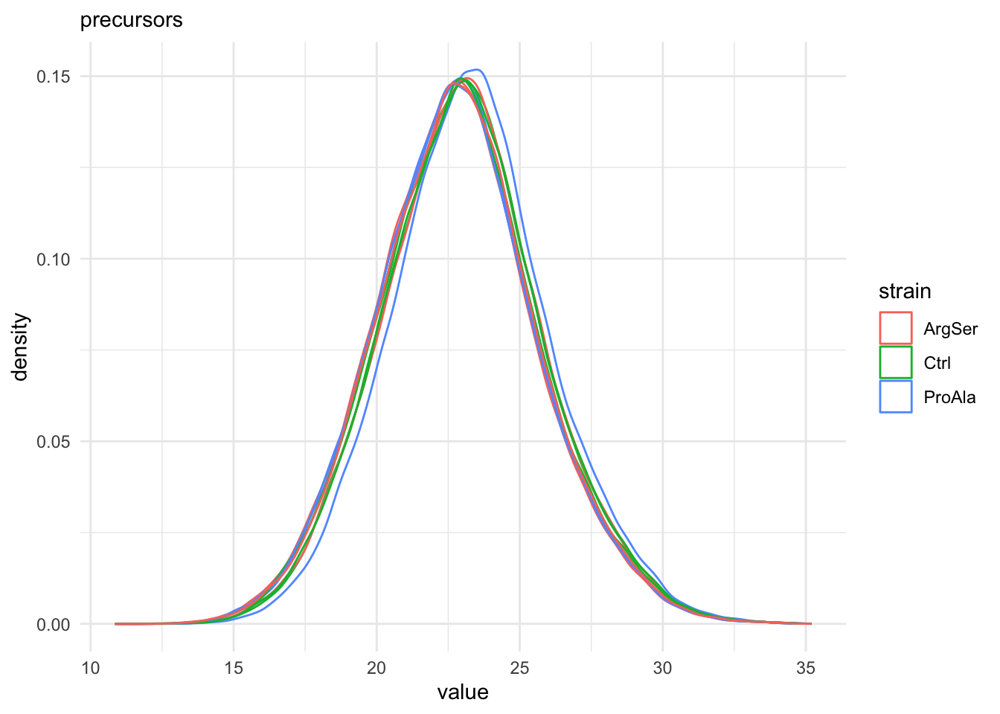
qf[, , "precursorsPTM_log"] |> #1.
longForm(colvars = colnames(colData(qf))) |> #2.
data.frame() |> #3.
filter(!is.na(value)) |> #4.
ggplot() + #5.
aes(x = value,
colour = strain,
group = colname) + #6.
geom_density() + #7.
labs(subtitle = "PTM - precursors") + #8.
theme_minimal() #9. harmonizing input:
removing 27 sampleMap rows not in names(experiments)
removing 9 colData rownames not in sampleMap 'primary'
The data seems very clean. However, normalisation is still required.
We use the median of ratio normalisation, which addresses both differences in loading as well as difference in compositionality.
- This first calculates a reference sample by using the log2 geometric mean, i.e. the arithmetic mean on a log scale, for every feature.
- Subsequently log2 fold changes are calculated between each feature of a sample and the reference sample.
- Finally, the median of these log2 fold changes are used as the log2-tranformed normalisation factor.
The method is the default method for normalisation in bulk RNA-seq data analysis with DESeq2. In our hands it performs very well in a proteomics context.
qf <- sweep( #4. Subtract log2 norm factor column-by-column (MARGIN = 2)
qf,
MARGIN = 2,
STATS = nfLogMedianOfRatios(qf,"precursors_log"),
i = "precursors_log",
name = "precursors_norm"
)This function aims to calculate norm factors on a log scale,
the input data are assumed to be on the log-scale!qf <- sweep( #4. Subtract log2 norm factor column-by-column (MARGIN = 2)
qf,
MARGIN = 2,
STATS = nfLogMedianOfRatios(qf,"precursorsPTM_log"),
i = "precursorsPTM_log",
name = "precursorsPTM_norm"
)This function aims to calculate norm factors on a log scale,
the input data are assumed to be on the log-scale!We explore the effect of the global normalisation in the subsequent plot.
Formally, the function applies the following operation on each sample \(i\) across all precursors \(p\):
\[ y_{ip}^{\text{norm}} = y_{ip} - \log_2(nf_i) \]
with \(y_ip\) the log2-transformed intensities and \(nf_i\) the log2-transformed norm factor.
Upon normalisation, we can see that the distribution of the \(y_{ip}^{\text{norm}}\) nicely overlap (using the same code as above)
qf[, , "precursors_norm"] |>
longForm(colvars = colnames(colData(qf))) |>
data.frame() |>
filter(!is.na(value)) |>
ggplot() +
aes(x = value,
colour = strain,
group = colname) +
geom_density() +
labs(subtitle = "Median normalisation precursors") +
theme_minimal()harmonizing input:
removing 45 sampleMap rows not in names(experiments)
removing 9 colData rownames not in sampleMap 'primary'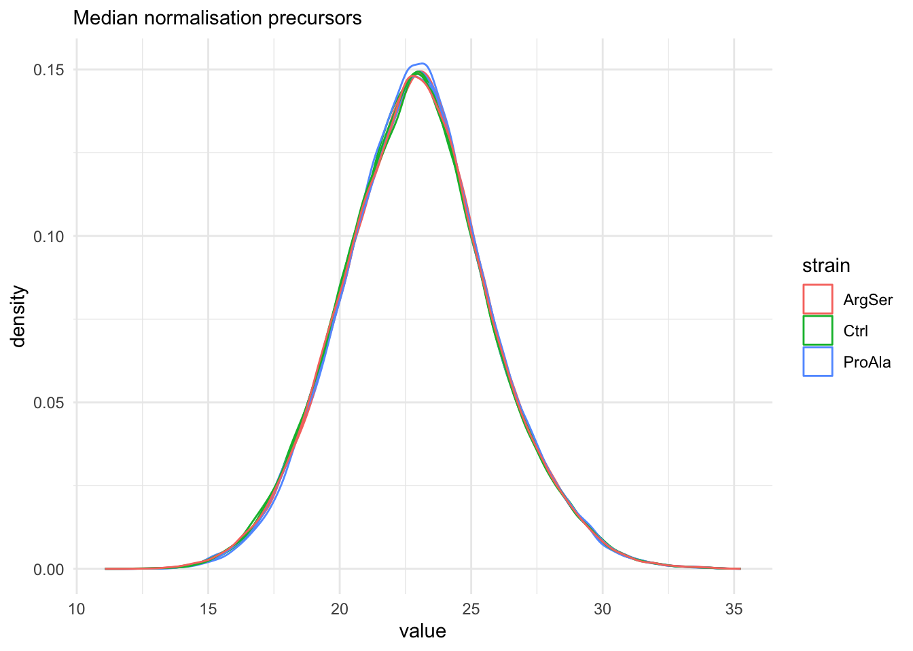
qf[, , "precursorsPTM_norm"] |>
longForm(colvars = colnames(colData(qf))) |>
data.frame() |>
filter(!is.na(value)) |>
ggplot() +
aes(x = value,
colour = strain,
group = colname) +
geom_density() +
labs(subtitle = "Median normalisation PTM precursors") +
theme_minimal()harmonizing input:
removing 45 sampleMap rows not in names(experiments)
removing 9 colData rownames not in sampleMap 'primary'
We also explore the normalisation for the common precursors.
precursorsCommon <- assay(qf[, , "precursors_log"]) |> na.exclude() |> rownames()harmonizing input:
removing 45 sampleMap rows not in names(experiments)
removing 9 colData rownames not in sampleMap 'primary'qf[precursorsCommon, , "precursors_norm"] |>
longForm(colvars = colnames(colData(qf))) |>
data.frame() |>
filter(!is.na(value)) |>
ggplot() +
aes(x = value,
colour = strain,
group = colname) +
geom_density() +
theme_minimal() +
labs(subtitle = "Median normalised log2 precursor intensities (common)")Warning: 'experiments' dropped; see 'drops()'harmonizing input:
removing 45 sampleMap rows not in names(experiments)
removing 9 colData rownames not in sampleMap 'primary'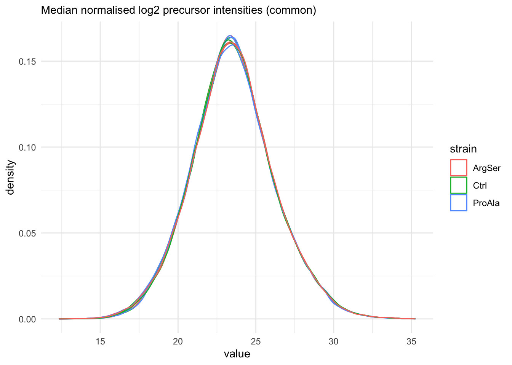
precursorsCommonPTM <- assay(qf[, , "precursorsPTM_log"]) |> na.exclude() |> rownames()harmonizing input:
removing 45 sampleMap rows not in names(experiments)
removing 9 colData rownames not in sampleMap 'primary'qf[precursorsCommonPTM, , "precursorsPTM_norm"] |>
longForm(colvars = colnames(colData(qf))) |>
data.frame() |>
filter(!is.na(value)) |>
ggplot() +
aes(x = value,
colour = strain,
group = colname) +
geom_density() +
theme_minimal() +
labs(subtitle = "Median normalised log2 precursor intensities (common)")Warning: 'experiments' dropped; see 'drops()'harmonizing input:
removing 45 sampleMap rows not in names(experiments)
removing 9 colData rownames not in sampleMap 'primary'
Remove temporarily objects
rm(precursorsCommon, precursorsCommonPTM)#Garbage collection to free space
gc(); gc() used (Mb) gc trigger (Mb) limit (Mb) max used (Mb)
Ncells 10406741 555.8 17413510 930.0 NA 17413510 930
Vcells 26729312 204.0 160729266 1226.3 24576 312073015 2381 used (Mb) gc trigger (Mb) limit (Mb) max used (Mb)
Ncells 10406731 555.8 17413510 930.0 NA 17413510 930
Vcells 26729328 204.0 128583413 981.1 24576 312073015 2381Note, that normalisation could have been avoided by using Precursor.Normalised which is already internally normalised by DIA-NN. However, we do not know the exact procedure for this.
This generally works well for many datasets.
In this vignette we have chosen to conduct the normalisation explicitly ourselves using a method for which we know the underlying rationale.
12.4.5 Summarisation
Here, we summarise the precursor-level data for the non-enriched runs into protein intensities using maxLFQ, which is one of the default methods used in DIA data analysis.
Note, that the maxLFQ implementation can become slow for large datasets. In that case we recommend the median polish method.
maxLFQ first calculates all pairwise log ratio’s between samples only using their shared precursors. Particularly, it uses the median of the log ratio’s between the shared precursors, i.e. \[r_{ij} = median(y_{sj}-y_{si})\]
Hence, it first eliminates ion effects.It then estimates the summaries by solving
\[ \sum_i\sum_j(y^{prot}_j - y^{prot}_i - r_{ij})^2 \]
It is implemented in the maxLFQ function of the iq package.
aggregateFeatures() in the QFeatures package streamlines summarisation. It requires the name of a rowData column to group the precursors into proteins (or protein groups), here Protein.Group. We provide the summarisation approach through the fun argument.
The function will return a QFeatures object with a new set that we called proteins.
Other summarisation methods are available from the MsCoreUtils package, see ?aggregateFeatures for a comprehensive list.
(qf <- aggregateFeatures(
qf, i = "precursors_norm",
name = "proteins",
fcol = "Protein.Group",
fun = function(X) iq::maxLFQ(X)$estimate
))Your quantitative data contain missing values. Please read the relevant
section(s) in the aggregateFeatures manual page regarding the effects
of missing values on data aggregation.
Aggregated: 1/1An instance of class QFeatures (type: bulk) with 7 sets:
[1] precursors: SummarizedExperiment with 78769 rows and 9 columns
[2] precursorsPTM: SummarizedExperiment with 34209 rows and 9 columns
[3] precursors_log: SummarizedExperiment with 78769 rows and 9 columns
[4] precursorsPTM_log: SummarizedExperiment with 34209 rows and 9 columns
[5] precursors_norm: SummarizedExperiment with 78769 rows and 9 columns
[6] precursorsPTM_norm: SummarizedExperiment with 34209 rows and 9 columns
[7] proteins: SummarizedExperiment with 4618 rows and 9 columns #Garbage collection to free space
gc(); gc() used (Mb) gc trigger (Mb) limit (Mb) max used (Mb)
Ncells 10422974 556.7 17413510 930.0 NA 17413510 930
Vcells 27119930 207.0 102866731 784.9 24576 312073015 2381 used (Mb) gc trigger (Mb) limit (Mb) max used (Mb)
Ncells 10422976 556.7 17413510 930.0 NA 17413510 930
Vcells 27119966 207.0 82293385 627.9 24576 312073015 238112.5 Data exploration and QC
Data exploration aims to highlight the main sources of variation in the data prior to data modelling and can pinpoint to outlying or off-behaving samples.
We first performance the QC for the Phospho-enriched runs then for the non-enriched runs.
12.5.1 Phospho-enriched runs
Marginal distribution at precursor level
qf[, , "precursorsPTM_norm"] |>
longForm(colvars = colnames(colData(qf))) |>
data.frame() |>
filter(!is.na(value)) |>
ggplot() +
aes(x = value,
colour = strain,
group = colname) +
geom_density() +
theme_minimal() +
labs(subtitle = "Normalised log2 PTM precursor intensities")harmonizing input:
removing 54 sampleMap rows not in names(experiments)
removing 9 colData rownames not in sampleMap 'primary'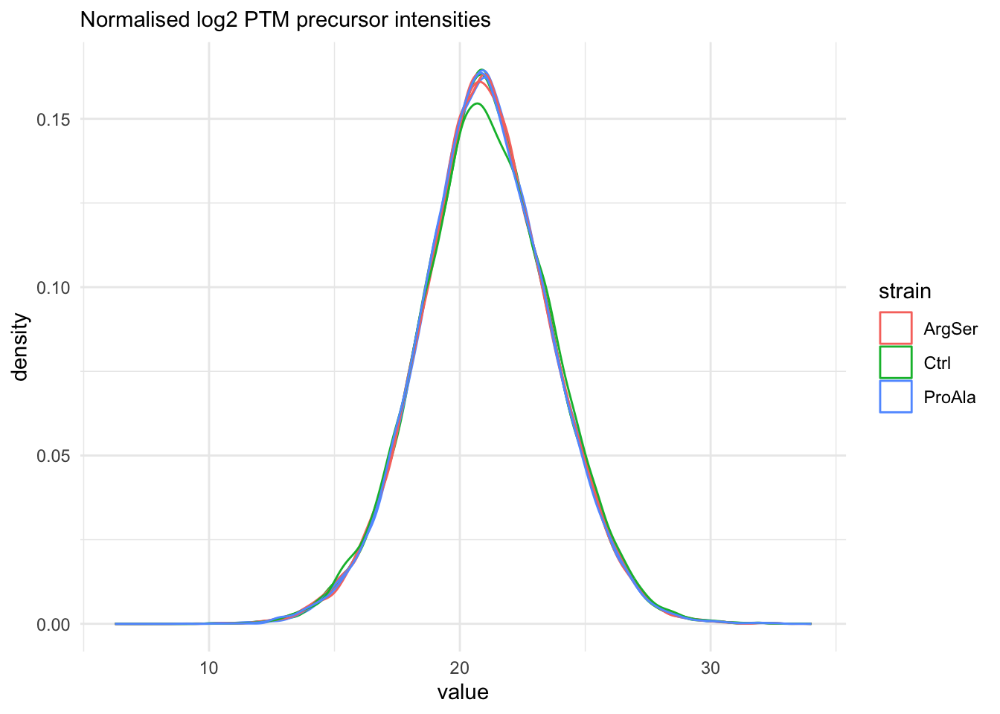
qf[, , "precursorsPTM_norm"] |>
longForm(colvars = colnames(colData(qf))) |>
data.frame() |>
filter(!is.na(value)) |>
ggplot() +
aes(x = sampleId,
y = value,
colour = strain,
group = colname) +
xlab("sample") +
geom_boxplot() +
theme_minimal() +
labs(subtitle = "Normalised log2 PTM precursor intensities")harmonizing input:
removing 54 sampleMap rows not in names(experiments)
removing 9 colData rownames not in sampleMap 'primary'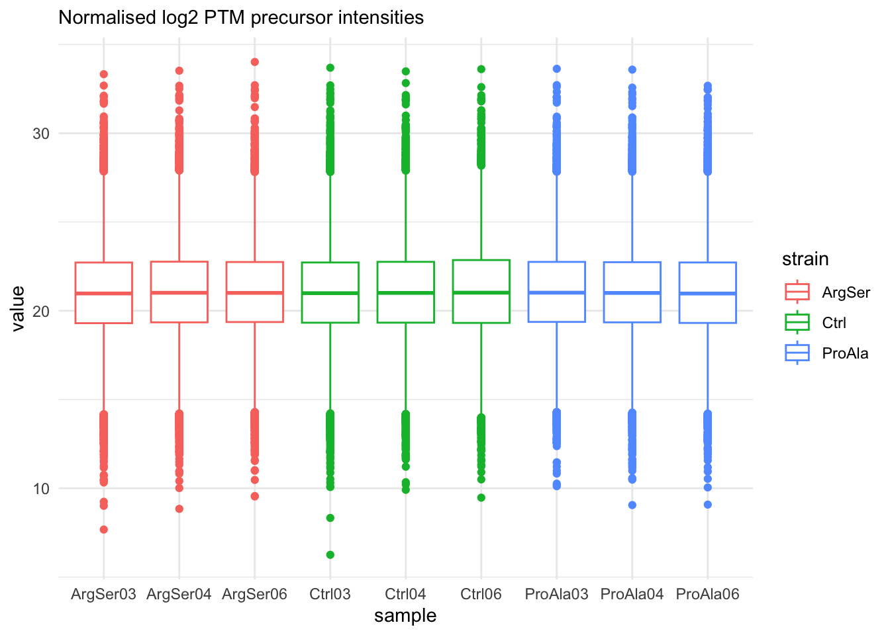
#Garbage collection to free space
gc(); gc() used (Mb) gc trigger (Mb) limit (Mb) max used (Mb)
Ncells 10452261 558.3 17413510 930.0 NA 17413510 930
Vcells 28853419 220.2 82293385 627.9 24576 312073015 2381 used (Mb) gc trigger (Mb) limit (Mb) max used (Mb)
Ncells 10452263 558.3 17413510 930.0 NA 17413510 930
Vcells 28853455 220.2 82293385 627.9 24576 312073015 2381Charge state
qf[, , "precursorsPTM_norm"] |>
longForm(colvars = colnames(colData(qf)), rowvars = "Precursor.Charge") |>
as.data.frame() |>
filter(!is.na(value)) |>
filter(Precursor.Charge<=4) |>
ggplot(aes(x = sampleId)) +
geom_bar(aes(fill = factor(Precursor.Charge, levels = 4:1)),
colour = "black") +
labs(title = "Number of phospho-ions per sample",
x = "Sample",
fill = "Charge state") +
theme_bw() +
theme(axis.text.x = element_text(angle = 90))harmonizing input:
removing 54 sampleMap rows not in names(experiments)
removing 9 colData rownames not in sampleMap 'primary'
#Garbage collection to free space
gc(); gc() used (Mb) gc trigger (Mb) limit (Mb) max used (Mb)
Ncells 10459772 558.7 17413510 930.0 NA 17413510 930
Vcells 28959532 221.0 82293385 627.9 24576 312073015 2381 used (Mb) gc trigger (Mb) limit (Mb) max used (Mb)
Ncells 10459771 558.7 17413510 930.0 NA 17413510 930
Vcells 28959563 221.0 82293385 627.9 24576 312073015 2381Identifications per sample
qf[,,"precursorsPTM_norm"] |>
longForm(colvars = colnames(colData(qf)),
rowvars= c("Precursor.Id",
"Protein.Group")) |>
data.frame() |>
filter(!is.na(value)) |>
group_by(strain, sampleId) |>
summarise(Precursors = length(unique(Precursor.Id)),
`Protein Groups` = length(unique(Protein.Group))) |>
pivot_longer(-(1:2),
names_to = "Feature",
values_to = "IDs") |>
ggplot(aes(x = sampleId, y = IDs, fill = strain)) +
geom_col() +
#scale_fill_observable() +
facet_wrap(~Feature,
scales = "free_y") +
labs(title = "Precursor and protein group identificiations per PTM sample",
x = "Sample",
y = "Identifications") +
theme_bw() +
theme(axis.text.x = element_text(angle = 90))harmonizing input:
removing 54 sampleMap rows not in names(experiments)
removing 9 colData rownames not in sampleMap 'primary'`summarise()` has regrouped the output.
ℹ Summaries were computed grouped by strain and sampleId.
ℹ Output is grouped by strain.
ℹ Use `summarise(.groups = "drop_last")` to silence this message.
ℹ Use `summarise(.by = c(strain, sampleId))` for per-operation grouping
(`?dplyr::dplyr_by`) instead.
# Data Modeling (Robust Regression){#sec-modelling}#Garbage collection to free space
gc(); gc() used (Mb) gc trigger (Mb) limit (Mb) max used (Mb)
Ncells 10515416 561.6 17413510 930.0 NA 17413510 930
Vcells 25738247 196.4 82293385 627.9 24576 312073015 2381 used (Mb) gc trigger (Mb) limit (Mb) max used (Mb)
Ncells 10515388 561.6 17413510 930.0 NA 17413510 930
Vcells 25738233 196.4 82293385 627.9 24576 312073015 2381Dimensionality reduction plot
A common approach for data exploration is to perform dimension reduction, such as Multi Dimensional Scaling (MDS). We will first extract the set to explore along the sample annotations (used for plot colouring).
getWithColData(qf, "precursorsPTM_norm") |>
as("SingleCellExperiment") |>
runMDS(exprs_values = 1) |>
plotMDS(colour_by = "strain") 
#Garbage collection to free space
gc(); gc() used (Mb) gc trigger (Mb) limit (Mb) max used (Mb)
Ncells 10537483 562.8 17413510 930.0 NA 17413510 930
Vcells 25803813 196.9 82293385 627.9 24576 312073015 2381 used (Mb) gc trigger (Mb) limit (Mb) max used (Mb)
Ncells 10537464 562.8 17413510 930.0 NA 17413510 930
Vcells 25803814 196.9 82293385 627.9 24576 312073015 238112.5.2 Non-enriched runs
Marginal distribution at precursor and protein level
qf[, , "precursors_norm"] |>
longForm(colvars = colnames(colData(qf))) |>
data.frame() |>
filter(!is.na(value)) |>
ggplot() +
aes(x = value,
colour = strain,
group = colname) +
geom_density() +
theme_minimal() +
labs(subtitle = "Normalised log2 precursor intensities")harmonizing input:
removing 54 sampleMap rows not in names(experiments)
removing 9 colData rownames not in sampleMap 'primary'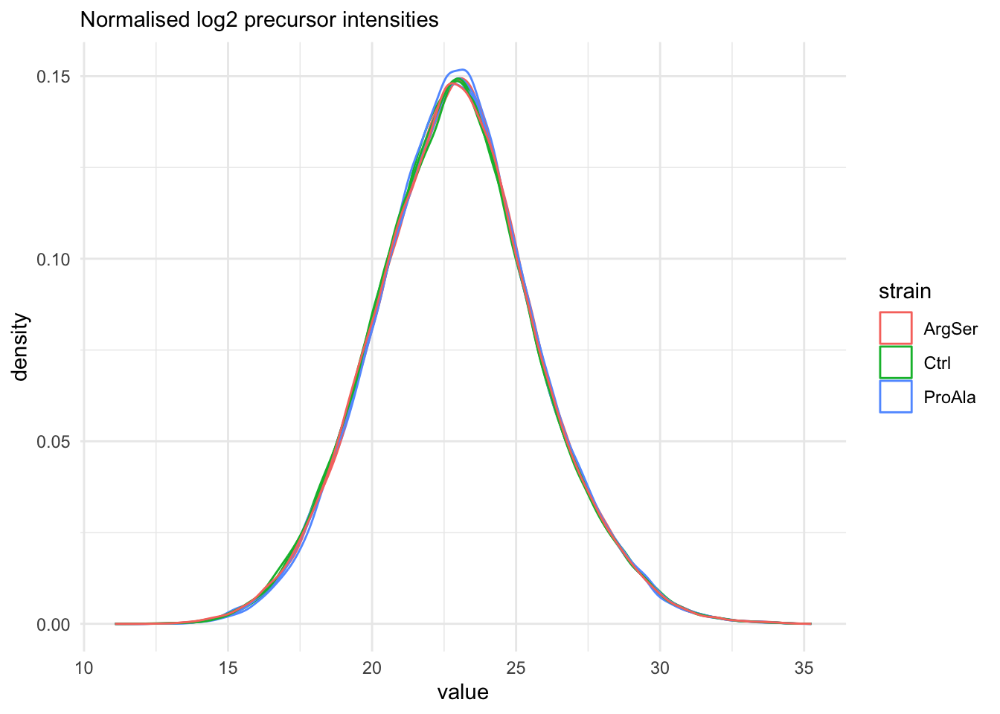
qf[, , "precursors_norm"] |>
longForm(colvars = colnames(colData(qf))) |>
data.frame() |>
filter(!is.na(value)) |>
ggplot() +
aes(x = sampleId,
y = value,
colour = strain,
group = colname) +
xlab("sample") +
geom_boxplot() +
theme_minimal() +
labs(subtitle = "Normalised log2 precursor intensities")harmonizing input:
removing 54 sampleMap rows not in names(experiments)
removing 9 colData rownames not in sampleMap 'primary'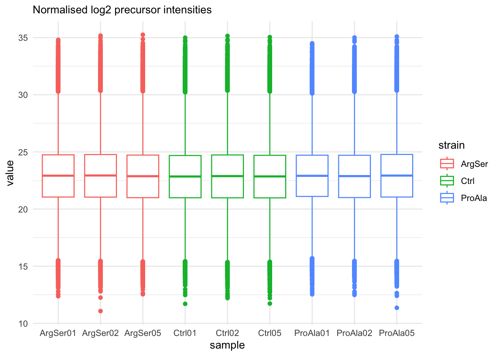
qf[, , "proteins"] |>
longForm(colvars = colnames(colData(qf))) |>
data.frame() |>
filter(!is.na(value)) |>
ggplot() +
aes(x = value,
colour = strain,
group = colname) +
geom_density() +
theme_minimal() +
labs(subtitle = "log2 protein intensities (normalised precursors)")harmonizing input:
removing 54 sampleMap rows not in names(experiments)
removing 9 colData rownames not in sampleMap 'primary'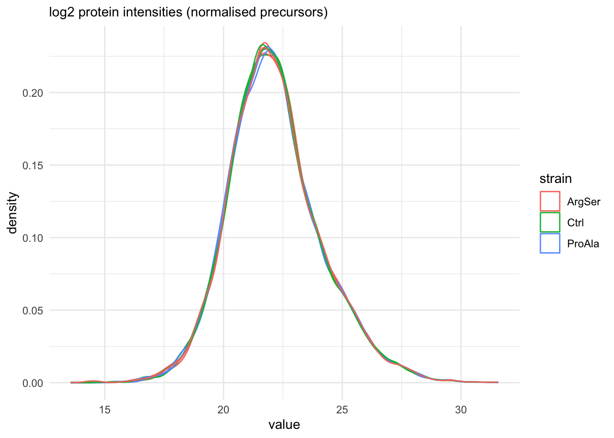
qf[, , "proteins"] |>
longForm(colvars = colnames(colData(qf))) |>
data.frame() |>
filter(!is.na(value)) |>
ggplot() +
aes(x = sampleId,
y = value,
colour = strain,
group = colname) +
xlab("sample") +
geom_boxplot() +
theme_minimal() +
labs(subtitle = "log2 protein intensities (normalised precursors)")harmonizing input:
removing 54 sampleMap rows not in names(experiments)
removing 9 colData rownames not in sampleMap 'primary'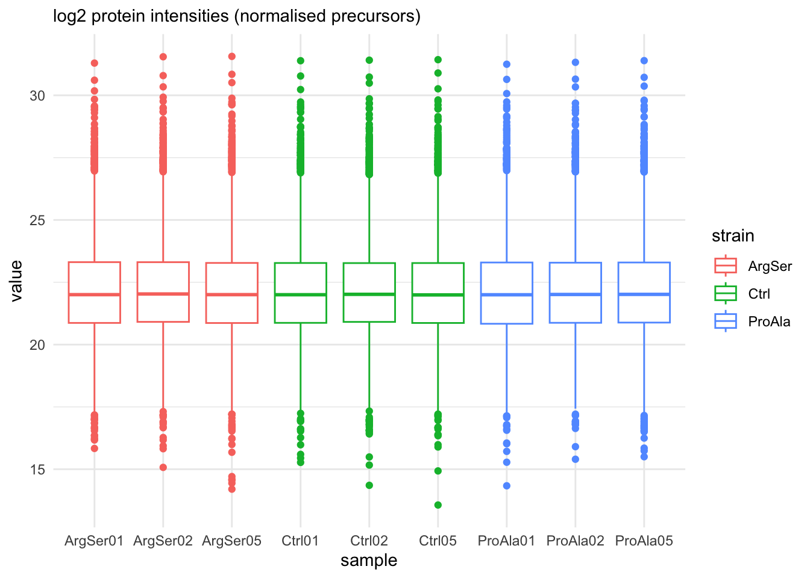
#Garbage collection to free space
gc(); gc() used (Mb) gc trigger (Mb) limit (Mb) max used (Mb)
Ncells 10537957 562.8 17413510 930.0 NA 17413510 930
Vcells 26359895 201.2 82293385 627.9 24576 312073015 2381 used (Mb) gc trigger (Mb) limit (Mb) max used (Mb)
Ncells 10537956 562.8 17413510 930.0 NA 17413510 930
Vcells 26359926 201.2 82293385 627.9 24576 312073015 2381Charge state
qf[, , "precursors_norm"] |>
longForm(colvars = colnames(colData(qf)), rowvars = "Precursor.Charge") |>
as.data.frame() |>
filter(!is.na(value)) |>
filter(Precursor.Charge<=4) |>
ggplot(aes(x = sampleId)) +
geom_bar(aes(fill = factor(Precursor.Charge, levels = 4:1)),
colour = "black") +
labs(title = "Number of precursor ions per sample",
x = "Sample",
fill = "Charge state") +
theme_bw() +
theme(axis.text.x = element_text(angle = 90))harmonizing input:
removing 54 sampleMap rows not in names(experiments)
removing 9 colData rownames not in sampleMap 'primary'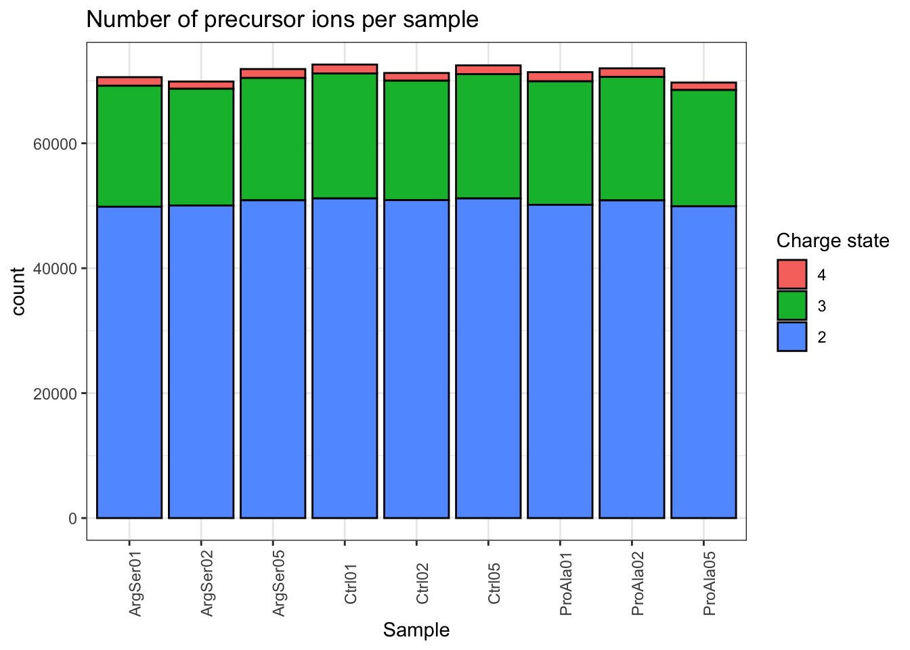
#Garbage collection to free space
gc(); gc() used (Mb) gc trigger (Mb) limit (Mb) max used (Mb)
Ncells 10537953 562.8 17413510 930.0 NA 17413510 930
Vcells 35094720 267.8 82337643 628.2 24576 312073015 2381 used (Mb) gc trigger (Mb) limit (Mb) max used (Mb)
Ncells 10537958 562.8 17413510 930.0 NA 17413510 930
Vcells 35094761 267.8 82337643 628.2 24576 312073015 2381Identifications per sample
qf[,,"precursors_norm"] |>
longForm(colvars = colnames(colData(qf)),
rowvars= c("Precursor.Id",
"Protein.Group")) |>
data.frame() |>
filter(!is.na(value)) |>
group_by(strain, sampleId) |>
summarise(Precursors = length(unique(Precursor.Id)),
`Protein Groups` = length(unique(Protein.Group))) |>
pivot_longer(-(1:2),
names_to = "Feature",
values_to = "IDs") |>
ggplot(aes(x = sampleId, y = IDs, fill = strain)) +
geom_col() +
#scale_fill_observable() +
facet_wrap(~Feature,
scales = "free_y") +
labs(title = "Precursor and protein group identificiations per sample",
x = "Sample",
y = "Identifications") +
theme_bw() +
theme(axis.text.x = element_text(angle = 90))harmonizing input:
removing 54 sampleMap rows not in names(experiments)
removing 9 colData rownames not in sampleMap 'primary'`summarise()` has regrouped the output.
ℹ Summaries were computed grouped by strain and sampleId.
ℹ Output is grouped by strain.
ℹ Use `summarise(.groups = "drop_last")` to silence this message.
ℹ Use `summarise(.by = c(strain, sampleId))` for per-operation grouping
(`?dplyr::dplyr_by`) instead.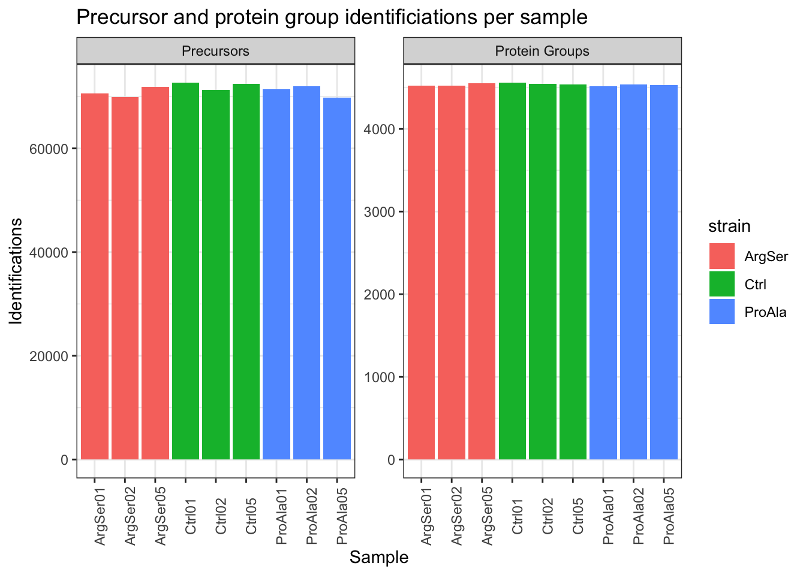
#Garbage collection to free space
gc(); gc() used (Mb) gc trigger (Mb) limit (Mb) max used (Mb)
Ncells 10538092 562.8 17413510 930.0 NA 17413510 930
Vcells 25789160 196.8 82337643 628.2 24576 312073015 2381 used (Mb) gc trigger (Mb) limit (Mb) max used (Mb)
Ncells 10538070 562.8 17413510 930.0 NA 17413510 930
Vcells 25789156 196.8 82337643 628.2 24576 312073015 2381Dimensionality reduction plot
getWithColData(qf, "proteins") |>
as("SingleCellExperiment") |>
runMDS(exprs_values = 1) |>
plotMDS(colour_by = "strain") 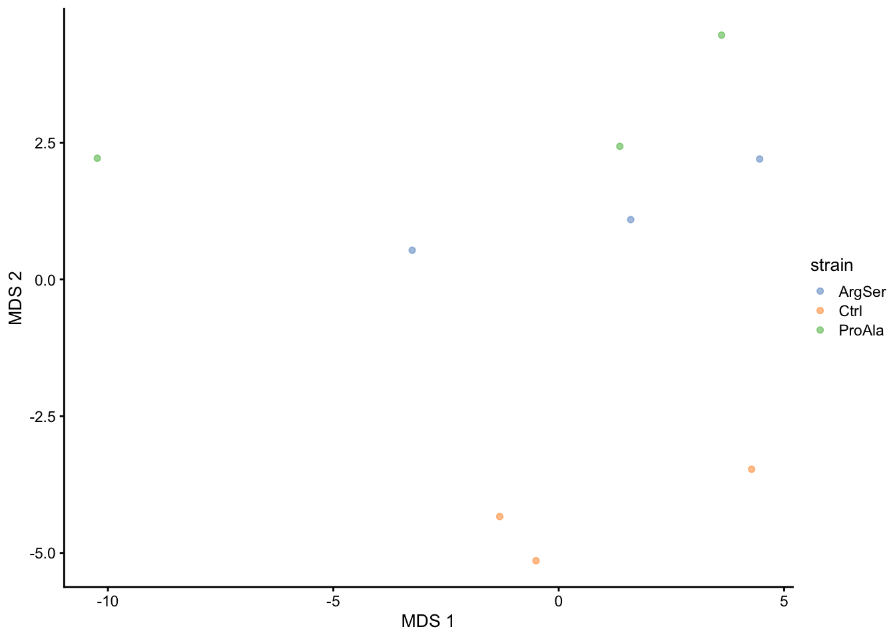
#Garbage collection to free space
gc(); gc() used (Mb) gc trigger (Mb) limit (Mb) max used (Mb)
Ncells 10537658 562.8 17413510 930.0 NA 17413510 930
Vcells 25790357 196.8 82337643 628.2 24576 312073015 2381 used (Mb) gc trigger (Mb) limit (Mb) max used (Mb)
Ncells 10537639 562.8 17413510 930.0 NA 17413510 930
Vcells 25790358 196.8 82337643 628.2 24576 312073015 238112.6 Data Modeling at phospho-precursor-level
12.6.1 Model estimation
We first define the model. We only have one source of variability in the experiment that we can model, i.e. the effect of the strain.
We fit the model to each phosphorylated precursor in the
precursorsPTM_normsummarised experiment of the QFeatures objectqfusing the msqrob function.
model <- ~ strain
qf <- msqrob(
qf,
i = "precursorsPTM_norm",
formula = model,
robust = TRUE)We enabled M-estimation (robust = TRUE) for improved robustness against outliers.
#Garbage collection to free space
gc(); gc() used (Mb) gc trigger (Mb) limit (Mb) max used (Mb)
Ncells 11193686 597.9 17413510 930.0 NA 17413510 930
Vcells 27490578 209.8 82337643 628.2 24576 312073015 2381 used (Mb) gc trigger (Mb) limit (Mb) max used (Mb)
Ncells 11193688 597.9 17413510 930.0 NA 17413510 930
Vcells 27490614 209.8 82337643 628.2 24576 312073015 238112.6.2 Inference
We can now convert the research question “Is the abundance of phospho-precursors different between the strains” into a statistical hypotheses.
In other words, we need to translate this question in a null and alternative hypothesis on a single model parameter or a linear combination of model parameters, which is also referred to with a contrast.
To aid defining contrasts, we will visualise the experimental design using the ExploreModelMatrix package.
vd <- ExploreModelMatrix::VisualizeDesign(
sampleData = colData(qf),
designFormula = model,
textSizeFitted = 4
)
vd$plotlist[[1]]
We have 3 interesting research questions related to the strain.
- Is a precursor DA between ArgSer strain and the WT (control)
- Is a precursor DA between ProAla strain and the WT (control)
- Is a precursor DA between ProAla strain and the ArgSer strain.
Each of these contrasts can be translated in a log2 FC or a difference in log2 FC and can be estimated with one or a linear combination of the model parameters.
Below we define the contrast and construct the corresponding contrast matrix.
We can generate the null-hypothesess for all pairwise comparisons manually. However, here we will use the createPairwiseContrasts function in msqrob2.
(allHypotheses <- createPairwiseContrasts(
model, colData(qf), "strain"
)
)Warning: the 'nobars' function has moved to the reformulas package. Please update your imports, or ask an upstream package maintainter to do so.
This warning is displayed once per session.[1] "strainCtrl = 0" "strainProAla = 0"
[3] "strainProAla - strainCtrl = 0"Based on these null hypothesis we now generate the contrast matrix with all three contrasts using the makeContrast function. Note, that experienced users can also define the contrast matrix, directly.
(L <- makeContrast(
allHypotheses,
parameterNames = colnames(vd$designmatrix)
)) strainCtrl strainProAla strainProAla - strainCtrl
(Intercept) 0 0 0
strainCtrl 1 0 -1
strainProAla 0 1 1We assess the contrast for each precursor.
qf <- hypothesisTest(qf, i = "precursorsPTM_norm", contrast = L, overwrite = TRUE)We extract the results table from the precursorsPTM_norm summarised experiment in the qf object.
inferencesPTM <-
msqrobCollect(qf[["precursorsPTM_norm"]], L)#Garbage collection to free space
gc(); gc() used (Mb) gc trigger (Mb) limit (Mb) max used (Mb)
Ncells 11354035 606.4 17413510 930.0 NA 17413510 930
Vcells 30148597 230.1 82337643 628.2 24576 312073015 2381 used (Mb) gc trigger (Mb) limit (Mb) max used (Mb)
Ncells 11354031 606.4 17413510 930.0 NA 17413510 930
Vcells 30148623 230.1 82337643 628.2 24576 312073015 238112.6.3 Report results
We report the results using a results table, volcano plots and heatmaps.
Results table
We use the 5% nominal FDR level to report results
alpha <- 0.05for (j in colnames(L)) {
inference <- inferencesPTM |>
dplyr::filter(adjPval < alpha & contrast == j)
cat("**Median - Contrast:**", j, "= 0 (", nrow(inference),
"significant precursors)\n\n")
cat('<div style="max-height:300px; overflow-y:auto;">')
print(
kable(
inference |>
dplyr::arrange(pval) |>
dplyr::relocate(feature),
row.names = FALSE
)
)
cat('</div>')
cat("\n\n\n---\n\n")
}Median - Contrast: strainCtrl = 0 ( 1 significant precursors)
| feature | logFC | se | df | t | pval | adjPval | contrast |
|---|---|---|---|---|---|---|---|
| IGDS(UniMod:21)LQGSPQR2 | -2.907071 | 0.1393496 | 6.823797 | -20.86171 | 2e-07 | 0.0045824 | strainCtrl |
Median - Contrast: strainProAla = 0 ( 4 significant precursors)
| feature | logFC | se | df | t | pval | adjPval | contrast |
|---|---|---|---|---|---|---|---|
| AVQES(UniMod:21)DS(UniMod:21)TTS(UniMod:21)RIIEEHESPIDAEK3 | -3.860267 | 0.1557383 | 5.826762 | -24.78688 | 4.0e-07 | 0.0092686 | strainProAla |
| S(UniMod:21)DSEVNQEAKPEVK3 | 1.921745 | 0.1343868 | 6.342927 | 14.30010 | 4.6e-06 | 0.0467721 | strainProAla |
| NTSYQES(UniMod:21)PGLQERPK3 | -1.113769 | 0.1049216 | 7.826762 | -10.61525 | 6.4e-06 | 0.0467721 | strainProAla |
| (UniMod:1)SDS(UniMod:21)EVNQEAKPEVK2 | 2.002423 | 0.1433679 | 6.038833 | 13.96702 | 8.0e-06 | 0.0467721 | strainProAla |
Median - Contrast: strainProAla - strainCtrl = 0 ( 19 significant precursors)
| feature | logFC | se | df | t | pval | adjPval | contrast |
|---|---|---|---|---|---|---|---|
| IGDS(UniMod:21)LQGSPQR2 | 3.0414472 | 0.1557899 | 6.823797 | 19.522750 | 3.00e-07 | 0.0054041 | strainProAla - strainCtrl |
| AVQES(UniMod:21)DS(UniMod:21)TTS(UniMod:21)RIIEEHESPIDAEK3 | -3.7465156 | 0.1557383 | 5.826762 | -24.056476 | 5.00e-07 | 0.0054041 | strainProAla - strainCtrl |
| GQVVSEEQRPGT(UniMod:21)PLFTVK3 | 2.2682125 | 0.1336666 | 6.779026 | 16.969186 | 8.00e-07 | 0.0064050 | strainProAla - strainCtrl |
| (UniMod:1)SDS(UniMod:21)EVNQEAKPEVK2 | 2.0997487 | 0.1203906 | 6.038833 | 17.441138 | 2.10e-06 | 0.0123465 | strainProAla - strainCtrl |
| (UniMod:1)SDEEHTFENADAGAS(UniMod:21)ATYPMQC(UniMod:4)SALR4 | -7.2887717 | 0.4604139 | 5.736513 | -15.830911 | 5.90e-06 | 0.0233619 | strainProAla - strainCtrl |
| VDIIANDQGNRT(UniMod:21)TPSFVAFTDTER3 | 1.4613762 | 0.1367441 | 7.826762 | 10.686943 | 6.10e-06 | 0.0233619 | strainProAla - strainCtrl |
| S(UniMod:21)DSEVNQEAKPEVK3 | 1.8128444 | 0.1489254 | 6.342927 | 12.172839 | 1.24e-05 | 0.0392179 | strainProAla - strainCtrl |
| LTNMPFGGNPTANQSGS(UniMod:21)GNSLFGTK3 | -2.4850090 | 0.2265396 | 6.646603 | -10.969426 | 1.68e-05 | 0.0392179 | strainProAla - strainCtrl |
| LIDENATENGLAGS(UniMod:21)PKDEDGIIM(UniMod:35)TNK3 | -3.5131571 | 0.2707854 | 5.765748 | -12.973952 | 1.74e-05 | 0.0392179 | strainProAla - strainCtrl |
| NTSYQES(UniMod:21)PGLQERPK3 | -0.9528266 | 0.1049216 | 7.826762 | -9.081320 | 2.00e-05 | 0.0392179 | strainProAla - strainCtrl |
| PHTPFIS(UniMod:21)KLNTHQDSSYLSPNT(UniMod:21)TST(UniMod:21)TTPSNNNSNSNQAK4 | 3.8675421 | 0.2460948 | 4.826762 | 15.715662 | 2.49e-05 | 0.0392179 | strainProAla - strainCtrl |
| RAT(UniMod:21)YAGFLLADPK3 | 2.5531200 | 0.2564607 | 6.826762 | 9.955209 | 2.60e-05 | 0.0392179 | strainProAla - strainCtrl |
| RGQVVSEEQRPGT(UniMod:21)PLFTVK3 | 1.8197408 | 0.2057852 | 7.695480 | 8.842913 | 2.69e-05 | 0.0392179 | strainProAla - strainCtrl |
| TTPSFVAFT(UniMod:21)DTER2 | 1.2275840 | 0.1377368 | 7.598572 | 8.912537 | 2.75e-05 | 0.0392179 | strainProAla - strainCtrl |
| TT(UniMod:21)PSFVAFTDTER2 | 1.3146921 | 0.1515195 | 7.826293 | 8.676717 | 2.77e-05 | 0.0392179 | strainProAla - strainCtrl |
| S(UniMod:21)DSEVNQEAKPEVK2 | 2.0603552 | 0.2182683 | 7.086695 | 9.439554 | 2.89e-05 | 0.0392179 | strainProAla - strainCtrl |
| NIAPPPT(UniMod:21)T(UniMod:21)SVSAPS(UniMod:21)TPTLSSSSQMANMASPSTDNGDNEEK4 | -5.8974392 | 0.5097645 | 5.826762 | -11.568948 | 3.08e-05 | 0.0392179 | strainProAla - strainCtrl |
| RFS(UniMod:21)QHSS(UniMod:21)MLINNPATPNQK3 | 4.5073908 | 0.2202057 | 4.021668 | 20.469003 | 3.23e-05 | 0.0392179 | strainProAla - strainCtrl |
| ETVES(UniMod:21)ESSQTALSK2 | 0.9869042 | 0.1087065 | 7.253952 | 9.078612 | 3.24e-05 | 0.0392179 | strainProAla - strainCtrl |
Volcanoplots
plotVolcano(inferencesPTM) +
facet_wrap(~contrast) +
labs(title = "Precursor-level Phospho DA")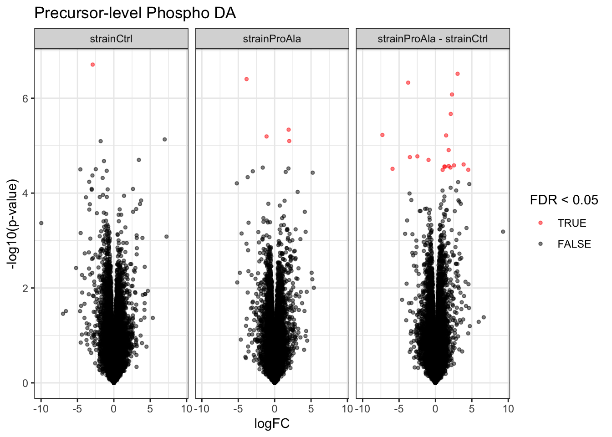
inferencesPTM |>
filter(adjPval < alpha) |>
mutate(DA = sign(logFC) |> as.factor() |> recode("-1"= "down","1" = "up")) |>
group_by(contrast, DA) |>
ggplot(aes(x = contrast)) +
geom_bar(aes(fill = factor(DA)),
colour = "black") +
theme_minimal() +
theme(axis.text.x = element_text(angle = 90))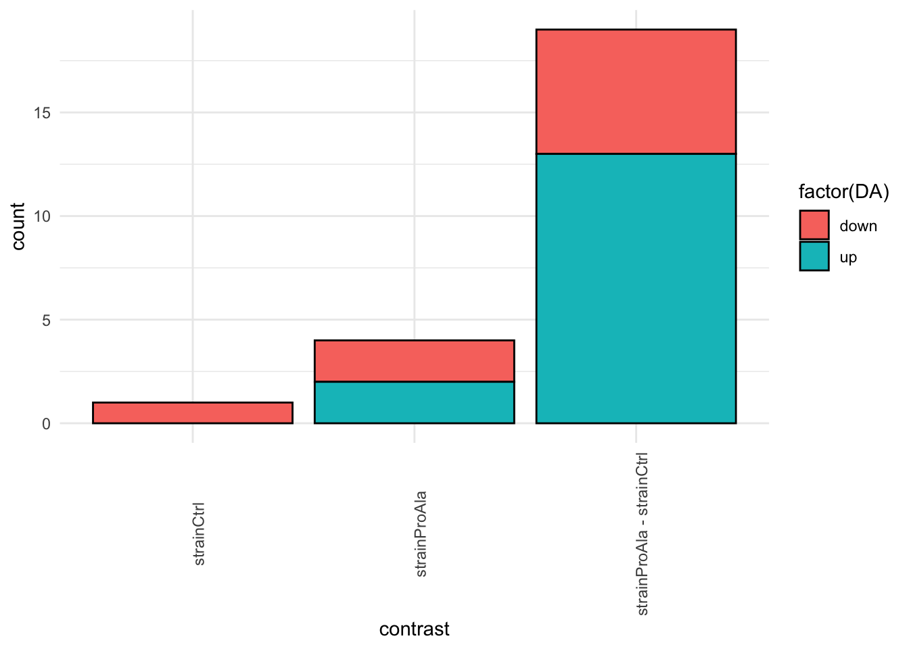
Heatmaps
We will make a heatmap for each contrast. Note that we cluster the rows ourselves to avoid issues with missing values.
lapply(colnames(L),
function(contrast, se, alpha)
{
sig <- rowData(se)[[contrast]] |>
filter(adjPval < alpha) |>
rownames()
if (length(sig) > 2)
{
quants <- t(scale(t(assay(se[sig,]))))
colnames(quants) <- se$sampleId #specific to this dataset to get short colnames
rowclushlp <- quants
rowclushlp[is.na(rowclushlp)] <- min(quants,na.rm=TRUE) - 2
rowclus <- hclust(dist(rowclushlp))
annotations <- columnAnnotation(
group = se$strain
) #3.
set.seed(1234) ## annotation colours are randomly generated by default
return(
Heatmap(show_row_names = FALSE,
quants,
name = "log2 intensity",
top_annotation = annotations,
column_title = paste0(contrast, " = 0"),
cluster_rows = rowclus
)
)
} else return(ggplot() + theme_minimal() + ggtitle(paste0(contrast, " = 0")))
},
se = getWithColData(qf, "precursorsPTM_norm"),
alpha = alpha)[[1]]
[[2]]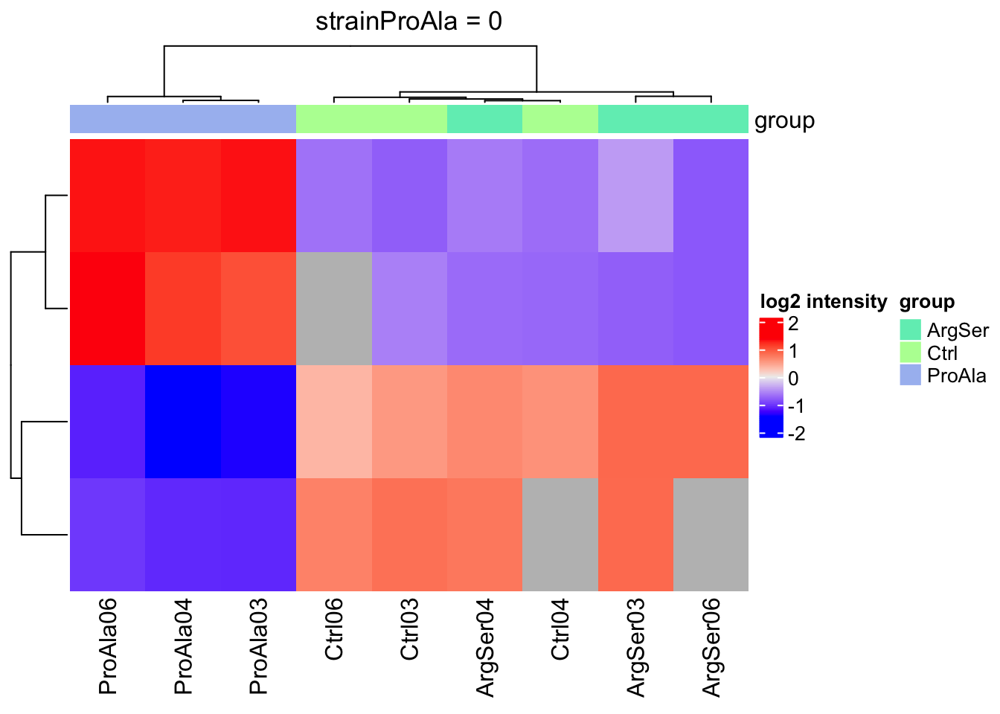
[[3]]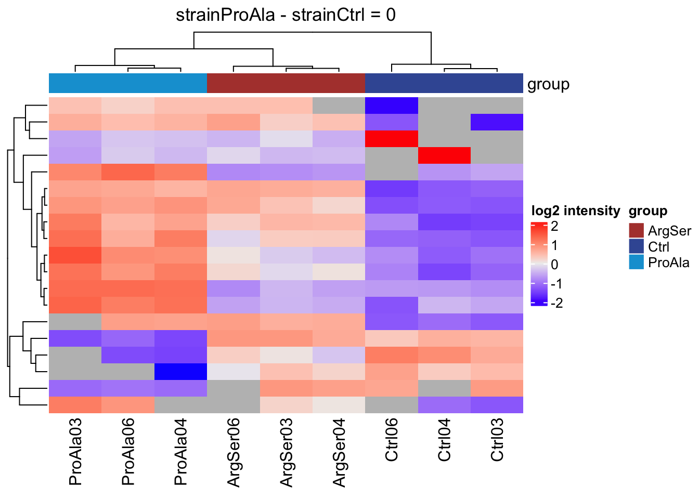
#Garbage collection to free space
gc(); gc() used (Mb) gc trigger (Mb) limit (Mb) max used (Mb)
Ncells 11579005 618.4 17413510 930.0 NA 17413510 930
Vcells 30607461 233.6 82337643 628.2 24576 312073015 2381 used (Mb) gc trigger (Mb) limit (Mb) max used (Mb)
Ncells 11579010 618.4 17413510 930.0 NA 17413510 930
Vcells 30607502 233.6 82337643 628.2 24576 312073015 2381Detail plots
We can explore the data for a precursor to validate the statistical inference results. For example, let’s explore the precursor and the normalised precursor intensities for the precursor with the most significant log2 fold change.
(target_feature <- inferencesPTM |>
dplyr::slice(which.min(pval)) |>
pull(feature)
)[1] "IGDS(UniMod:21)LQGSPQR2"inferencesPTM |>
filter(feature == target_feature) logFC se df
strainCtrl.IGDS(UniMod:21)LQGSPQR2 -2.9070713 0.1393496 6.823796
strainProAla.IGDS(UniMod:21)LQGSPQR2 0.1343759 0.1557591 6.823796
strainProAla - strainCtrl.IGDS(UniMod:21)LQGSPQR2 3.0414472 0.1557899 6.823796
t pval
strainCtrl.IGDS(UniMod:21)LQGSPQR2 -20.861711 1.955531e-07
strainProAla.IGDS(UniMod:21)LQGSPQR2 0.862716 4.175794e-01
strainProAla - strainCtrl.IGDS(UniMod:21)LQGSPQR2 19.522750 3.054750e-07
adjPval
strainCtrl.IGDS(UniMod:21)LQGSPQR2 0.004582395
strainProAla.IGDS(UniMod:21)LQGSPQR2 0.986318960
strainProAla - strainCtrl.IGDS(UniMod:21)LQGSPQR2 0.005404076
contrast
strainCtrl.IGDS(UniMod:21)LQGSPQR2 strainCtrl
strainProAla.IGDS(UniMod:21)LQGSPQR2 strainProAla
strainProAla - strainCtrl.IGDS(UniMod:21)LQGSPQR2 strainProAla - strainCtrl
feature
strainCtrl.IGDS(UniMod:21)LQGSPQR2 IGDS(UniMod:21)LQGSPQR2
strainProAla.IGDS(UniMod:21)LQGSPQR2 IGDS(UniMod:21)LQGSPQR2
strainProAla - strainCtrl.IGDS(UniMod:21)LQGSPQR2 IGDS(UniMod:21)LQGSPQR2To obtain the required data, we perform a little data manipulation pipeline:
- We use the QFeatures subsetting functionality to retrieve all data related to ion data used for model fitting.
- We then convert the data with longForm() for plotting.
- Finally, we plot the log2 normalised intensities for each sample for the unnormalised and normalised phospho precursors.
qf[target_feature, , c("precursorsPTM_log","precursorsPTM_norm")] |> #1
longForm(colvars = colnames(colData(qf))) |> #2
data.frame() |>
ggplot() +
aes(x = sampleId,
y = value) +
geom_line(aes(group = rowname), linewidth = 0.1) +
geom_point(aes(colour = strain)) +
facet_wrap(~ assay, scales = "free") +
ggtitle(target_feature) +
theme_minimal() +
theme(axis.text.x = element_blank())Warning: 'experiments' dropped; see 'drops()'harmonizing input:
removing 45 sampleMap rows not in names(experiments)
removing 9 colData rownames not in sampleMap 'primary'Warning: Removed 2 rows containing missing values or values outside the scale range
(`geom_point()`).
qf[target_feature, , c("precursorsPTM_log","precursorsPTM_norm")] |> #1
longForm(colvars = colnames(colData(qf))) |> #2
data.frame() |>
filter(!is.na(value)) %>%
{
ggplot(.) +
aes(x = strain,
y = value) +
geom_boxplot(aes(colour = strain)) +
facet_wrap(~ assay, scales = "free") +
geom_jitter(aes(shape = rowname)) +
scale_shape_manual(values = seq_len(dplyr::n_distinct(.$rowname))) +
ggtitle(target_feature) +
theme_minimal() +
theme(axis.text.x = element_blank()) +
guides(shape = "none")
}Warning: 'experiments' dropped; see 'drops()'harmonizing input:
removing 45 sampleMap rows not in names(experiments)
removing 9 colData rownames not in sampleMap 'primary'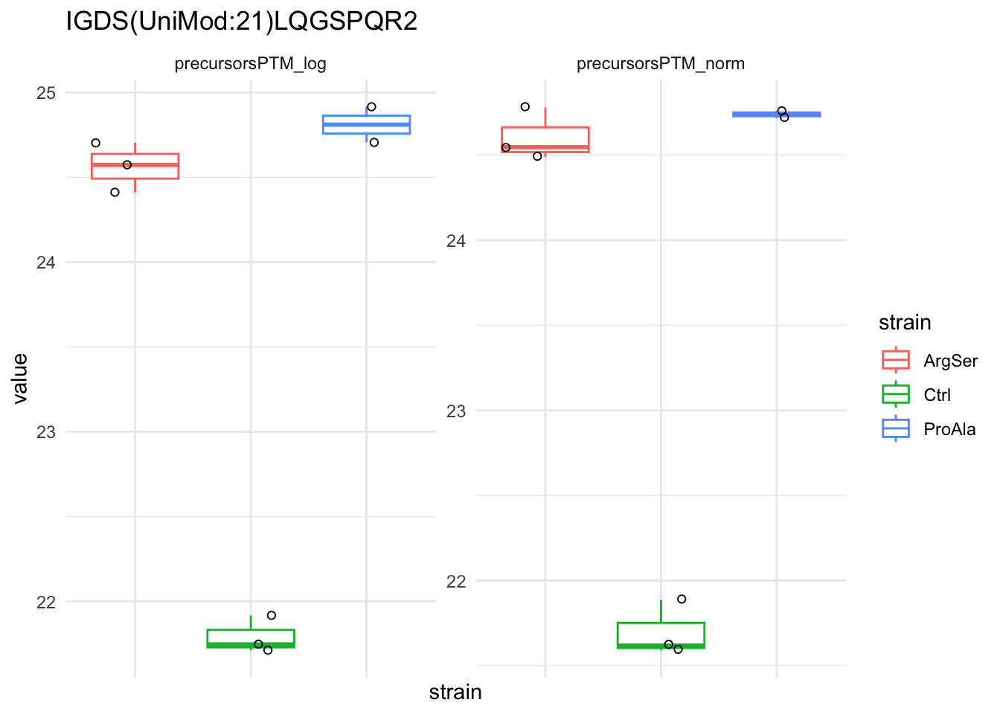
We prioritised DA phospho-precursors. However, they might be DA due to the parent proteins on which the PTMs occur that can also change in abundance regardless of the modification. Any changes in the abundance of a phospho-peptidoform can thus be confounded with changes in protein abundance.
We therefore assess differential abundance at the protein level for the non-enriched samples.
#Garbage collection to free space
gc(); gc() used (Mb) gc trigger (Mb) limit (Mb) max used (Mb)
Ncells 11585443 618.8 17413510 930.0 NA 17413510 930
Vcells 30618956 233.7 82337643 628.2 24576 312073015 2381 used (Mb) gc trigger (Mb) limit (Mb) max used (Mb)
Ncells 11585442 618.8 17413510 930.0 NA 17413510 930
Vcells 30618987 233.7 82337643 628.2 24576 312073015 238112.7 Data Modeling at protein-level (non-enriched samples)
12.7.1 Model estimation
We can use the same model to model the protein-level data of the non-enriched runs. Indeed, they stem from the same biological samples.
qf <- msqrob(
qf,
i = "proteins",
formula = model,
robust = TRUE)We enabled M-estimation (robust = TRUE) for improved robustness against outliers.
#Garbage collection to free space
gc(); gc() used (Mb) gc trigger (Mb) limit (Mb) max used (Mb)
Ncells 11686944 624.2 17413510 930.0 NA 17413510 930
Vcells 30916840 235.9 82337643 628.2 24576 312073015 2381 used (Mb) gc trigger (Mb) limit (Mb) max used (Mb)
Ncells 11686946 624.2 17413510 930.0 NA 17413510 930
Vcells 30916876 235.9 82337643 628.2 24576 312073015 238112.7.2 Inference
We assess the contrast for each protein.
qf <- hypothesisTest(qf, i = "proteins", contrast = L, overwrite = TRUE)We extract the results table from the proteins summarised experiment in the qf object.
inferences <-
msqrobCollect(qf[["proteins"]], L)#Garbage collection to free space
gc(); gc() used (Mb) gc trigger (Mb) limit (Mb) max used (Mb)
Ncells 11701080 625.0 17413510 930.0 NA 17413510 930
Vcells 31205325 238.1 82337643 628.2 24576 312073015 2381 used (Mb) gc trigger (Mb) limit (Mb) max used (Mb)
Ncells 11701076 625.0 17413510 930.0 NA 17413510 930
Vcells 31205351 238.1 82337643 628.2 24576 312073015 238112.7.3 Report results
We report the results using a results table, volcano plots and heatmaps.
Results table
for (j in colnames(L)) {
inference <- inferences |>
dplyr::filter(adjPval < alpha & contrast == j)
cat("**Median - Contrast:**", j, "= 0 (", nrow(inference),
"significant proteins)\n\n")
cat('<div style="max-height:300px; overflow-y:auto;">')
print(
kable(
inference |>
dplyr::arrange(pval) |>
dplyr::relocate(feature),
row.names = FALSE
)
)
cat('</div>')
cat("\n\n\n---\n\n")
}Median - Contrast: strainCtrl = 0 ( 97 significant proteins)
| feature | logFC | se | df | t | pval | adjPval | contrast |
|---|---|---|---|---|---|---|---|
| Q12068 | -1.2858668 | 0.0623825 | 7.856600 | -20.612626 | 0.0000000 | 0.0001823 | strainCtrl |
| P10591 | -0.6416910 | 0.0542390 | 7.820147 | -11.830802 | 0.0000029 | 0.0045931 | strainCtrl |
| P31539 | -0.4652723 | 0.0401815 | 7.715114 | -11.579276 | 0.0000038 | 0.0045931 | strainCtrl |
| P07264 | 0.4799705 | 0.0427679 | 7.731417 | 11.222691 | 0.0000047 | 0.0045931 | strainCtrl |
| P38260 | -0.4671770 | 0.0427232 | 7.801418 | -10.934961 | 0.0000053 | 0.0045931 | strainCtrl |
| P53912 | -0.7352203 | 0.0714466 | 8.130153 | -10.290482 | 0.0000061 | 0.0045931 | strainCtrl |
| P32644 | -0.4696154 | 0.0458452 | 7.947719 | -10.243507 | 0.0000074 | 0.0048135 | strainCtrl |
| P40008 | -0.3710818 | 0.0382674 | 8.130153 | -9.697072 | 0.0000095 | 0.0054028 | strainCtrl |
| P38113 | 0.4949495 | 0.0528844 | 8.130153 | 9.359084 | 0.0000125 | 0.0060795 | strainCtrl |
| P40989 | -0.7668185 | 0.0754185 | 7.336839 | -10.167519 | 0.0000139 | 0.0060795 | strainCtrl |
| P08432 | 0.6956696 | 0.0673988 | 7.091172 | 10.321686 | 0.0000159 | 0.0060795 | strainCtrl |
| Q08422 | -0.4928202 | 0.0497299 | 7.311441 | -9.909933 | 0.0000169 | 0.0060795 | strainCtrl |
| P03965 | 0.3706311 | 0.0402188 | 7.837836 | 9.215379 | 0.0000178 | 0.0060795 | strainCtrl |
| P34227 | -0.4795084 | 0.0541277 | 8.130153 | -8.858834 | 0.0000188 | 0.0060795 | strainCtrl |
| P23337 | 0.7683919 | 0.0868942 | 8.016955 | 8.842842 | 0.0000208 | 0.0062846 | strainCtrl |
| Q12449 | -0.4237772 | 0.0510449 | 8.095924 | -8.302050 | 0.0000311 | 0.0085824 | strainCtrl |
| P32643 | 0.4477980 | 0.0493183 | 7.258396 | 9.079761 | 0.0000322 | 0.0085824 | strainCtrl |
| P38737 | -0.3838188 | 0.0457762 | 7.807362 | -8.384687 | 0.0000359 | 0.0090411 | strainCtrl |
| P40897 | 0.6875061 | 0.0839933 | 7.825186 | 8.185246 | 0.0000421 | 0.0095478 | strainCtrl |
| Q01217 | 0.3475246 | 0.0439393 | 8.130153 | 7.909189 | 0.0000433 | 0.0095478 | strainCtrl |
| P00635 | -1.3555446 | 0.1395676 | 6.438632 | -9.712458 | 0.0000443 | 0.0095478 | strainCtrl |
| Q03148 | 0.4705315 | 0.0553298 | 7.209563 | 8.504123 | 0.0000520 | 0.0106970 | strainCtrl |
| P33416 | -0.3730155 | 0.0476515 | 7.814785 | -7.827998 | 0.0000580 | 0.0114330 | strainCtrl |
| Q04792 | 0.5511865 | 0.0717361 | 7.928741 | 7.683528 | 0.0000612 | 0.0115516 | strainCtrl |
| Q03102 | -0.6965307 | 0.0857581 | 7.320891 | -8.122039 | 0.0000646 | 0.0116071 | strainCtrl |
| O14467 | -0.4667767 | 0.0625468 | 8.114755 | -7.462842 | 0.0000666 | 0.0116071 | strainCtrl |
| P36007 | 0.3780676 | 0.0511119 | 8.047346 | 7.396857 | 0.0000741 | 0.0119024 | strainCtrl |
| P15705 | -0.3275461 | 0.0440000 | 7.933444 | -7.444237 | 0.0000763 | 0.0119024 | strainCtrl |
| P53691 | -0.3859967 | 0.0510114 | 7.743984 | -7.566872 | 0.0000772 | 0.0119024 | strainCtrl |
| P21801 | 0.3511067 | 0.0480644 | 8.090969 | 7.304917 | 0.0000788 | 0.0119024 | strainCtrl |
| Q06625 | 0.5483745 | 0.0751393 | 8.027086 | 7.298107 | 0.0000826 | 0.0120257 | strainCtrl |
| P10592 | -0.4146738 | 0.0563681 | 7.895666 | -7.356540 | 0.0000849 | 0.0120257 | strainCtrl |
| P53241 | 0.7777999 | 0.1089806 | 8.006521 | 7.137046 | 0.0000979 | 0.0129151 | strainCtrl |
| P00410 | 0.4332889 | 0.0604454 | 7.944987 | 7.168270 | 0.0000987 | 0.0129151 | strainCtrl |
| Q04432 | -0.4220678 | 0.0590986 | 7.968850 | -7.141753 | 0.0000998 | 0.0129151 | strainCtrl |
| P16474 | -0.3107856 | 0.0432563 | 7.728117 | -7.184740 | 0.0001114 | 0.0137194 | strainCtrl |
| P32775 | 0.4540852 | 0.0630966 | 7.700552 | 7.196663 | 0.0001121 | 0.0137194 | strainCtrl |
| P11972 | 0.5265683 | 0.0758005 | 7.975529 | 6.946767 | 0.0001206 | 0.0143711 | strainCtrl |
| P38162 | -0.4265252 | 0.0584673 | 7.307605 | -7.295112 | 0.0001325 | 0.0151675 | strainCtrl |
| P06738 | 0.6189962 | 0.0883885 | 7.705213 | 7.003128 | 0.0001344 | 0.0151675 | strainCtrl |
| P03962 | 0.4553622 | 0.0672505 | 8.044515 | 6.771136 | 0.0001384 | 0.0151675 | strainCtrl |
| P47169 | 0.3831303 | 0.0568108 | 8.003448 | 6.743965 | 0.0001457 | 0.0151675 | strainCtrl |
| P53128 | 0.3241176 | 0.0474416 | 7.843884 | 6.831930 | 0.0001462 | 0.0151675 | strainCtrl |
| P39692 | 0.3951710 | 0.0584081 | 7.945350 | 6.765694 | 0.0001473 | 0.0151675 | strainCtrl |
| P53940 | -0.4278621 | 0.0634321 | 7.925819 | -6.745200 | 0.0001521 | 0.0153153 | strainCtrl |
| P24000 | 0.3795597 | 0.0563463 | 7.751420 | 6.736192 | 0.0001699 | 0.0167359 | strainCtrl |
| P47164 | 0.4255347 | 0.0606982 | 7.274498 | 7.010664 | 0.0001752 | 0.0168847 | strainCtrl |
| P07702 | 0.2344919 | 0.0360841 | 8.041575 | 6.498477 | 0.0001842 | 0.0173816 | strainCtrl |
| Q99296 | 0.5366182 | 0.0815167 | 7.808860 | 6.582920 | 0.0001920 | 0.0177477 | strainCtrl |
| P22134 | -0.4409525 | 0.0689584 | 8.130153 | -6.394469 | 0.0001963 | 0.0177834 | strainCtrl |
| D6VTK4 | 0.4166096 | 0.0631565 | 7.705194 | 6.596470 | 0.0002009 | 0.0178426 | strainCtrl |
| P32642 | -0.8208766 | 0.1286142 | 7.985490 | -6.382474 | 0.0002147 | 0.0184814 | strainCtrl |
| Q12746 | -0.3090942 | 0.0469139 | 7.591229 | -6.588543 | 0.0002162 | 0.0184814 | strainCtrl |
| P32334 | 0.6371185 | 0.0904413 | 6.675913 | 7.044555 | 0.0002531 | 0.0208564 | strainCtrl |
| P36141 | -0.3648480 | 0.0581623 | 7.895310 | -6.272925 | 0.0002532 | 0.0208564 | strainCtrl |
| P32496 | -0.2499151 | 0.0409101 | 8.130153 | -6.108882 | 0.0002686 | 0.0215330 | strainCtrl |
| P05694 | 0.2554873 | 0.0416662 | 8.061846 | 6.131762 | 0.0002709 | 0.0215330 | strainCtrl |
| P18544 | 0.3528427 | 0.0579990 | 8.130153 | 6.083603 | 0.0002763 | 0.0215781 | strainCtrl |
| Q03104 | 0.4812308 | 0.0756611 | 7.453815 | 6.360345 | 0.0002940 | 0.0225472 | strainCtrl |
| P53044 | -0.2768999 | 0.0461478 | 8.130153 | -6.000285 | 0.0003034 | 0.0225472 | strainCtrl |
| P38182 | -0.5917176 | 0.0986254 | 8.130153 | -5.999648 | 0.0003036 | 0.0225472 | strainCtrl |
| P24869 | 0.5928183 | 0.0975857 | 7.885393 | 6.074849 | 0.0003153 | 0.0229289 | strainCtrl |
| P21826 | -0.6663495 | 0.1120751 | 8.130153 | -5.945561 | 0.0003228 | 0.0229289 | strainCtrl |
| P33734 | 0.2347572 | 0.0395074 | 8.130153 | 5.942102 | 0.0003241 | 0.0229289 | strainCtrl |
| P36152 | -0.2451877 | 0.0406710 | 7.901392 | -6.028570 | 0.0003290 | 0.0229289 | strainCtrl |
| P07283 | 0.2147385 | 0.0365877 | 8.130153 | 5.869143 | 0.0003522 | 0.0241745 | strainCtrl |
| P29465 | 0.3088133 | 0.0517122 | 7.618186 | 5.971766 | 0.0004035 | 0.0272832 | strainCtrl |
| P23180 | 0.3166922 | 0.0548726 | 8.019322 | 5.771408 | 0.0004149 | 0.0275704 | strainCtrl |
| P25294 | -0.2995154 | 0.0508754 | 7.722007 | -5.887235 | 0.0004199 | 0.0275704 | strainCtrl |
| P56628 | 0.6925242 | 0.1215891 | 8.130153 | 5.695613 | 0.0004305 | 0.0278624 | strainCtrl |
| P47988 | 0.3627114 | 0.0636578 | 8.082788 | 5.697833 | 0.0004387 | 0.0279907 | strainCtrl |
| P37012 | 0.4065687 | 0.0719683 | 8.097366 | 5.649273 | 0.0004613 | 0.0290205 | strainCtrl |
| P47085 | 0.5586458 | 0.0995655 | 8.130153 | 5.610840 | 0.0004756 | 0.0295139 | strainCtrl |
| P53549 | -0.2325660 | 0.0398359 | 7.517292 | -5.838100 | 0.0004902 | 0.0300052 | strainCtrl |
| P38631 | 0.2466819 | 0.0443982 | 8.130153 | 5.556121 | 0.0005074 | 0.0306489 | strainCtrl |
| P22768 | 0.2858223 | 0.0477144 | 7.020019 | 5.990275 | 0.0005416 | 0.0322840 | strainCtrl |
| P40017 | 0.2658926 | 0.0479817 | 7.896734 | 5.541537 | 0.0005718 | 0.0336391 | strainCtrl |
| P09368 | -1.1305592 | 0.2081644 | 7.998871 | -5.431089 | 0.0006228 | 0.0361721 | strainCtrl |
| P00815 | 0.2276790 | 0.0418806 | 7.942708 | 5.436382 | 0.0006339 | 0.0363515 | strainCtrl |
| P38777 | -0.3179463 | 0.0569127 | 7.506341 | -5.586558 | 0.0006488 | 0.0367403 | strainCtrl |
| Q00955 | 0.1930587 | 0.0365118 | 8.130153 | 5.287571 | 0.0007014 | 0.0389708 | strainCtrl |
| P38809 | 0.2813054 | 0.0517472 | 7.643319 | 5.436149 | 0.0007224 | 0.0389708 | strainCtrl |
| P22202 | -0.3469077 | 0.0593513 | 6.727512 | -5.844990 | 0.0007330 | 0.0389708 | strainCtrl |
| P54007 | -1.0682948 | 0.2035080 | 8.130153 | -5.249400 | 0.0007350 | 0.0389708 | strainCtrl |
| P53078 | 0.3218235 | 0.0561190 | 6.926016 | 5.734666 | 0.0007370 | 0.0389708 | strainCtrl |
| P38202 | -0.5250471 | 0.1002693 | 8.130153 | -5.236369 | 0.0007469 | 0.0389708 | strainCtrl |
| P19097 | 0.2142492 | 0.0400326 | 7.786936 | 5.351871 | 0.0007484 | 0.0389708 | strainCtrl |
| P53834 | -0.4601185 | 0.0885887 | 8.130153 | -5.193872 | 0.0007871 | 0.0405203 | strainCtrl |
| Q03558 | -0.2543914 | 0.0470829 | 7.495610 | -5.403057 | 0.0008009 | 0.0407670 | strainCtrl |
| P27614 | -0.2664446 | 0.0487609 | 7.227626 | -5.464304 | 0.0008455 | 0.0420860 | strainCtrl |
| P07149 | 0.1991915 | 0.0388234 | 8.130153 | 5.130710 | 0.0008514 | 0.0420860 | strainCtrl |
| P05374 | 0.2987911 | 0.0545595 | 7.176266 | 5.476424 | 0.0008547 | 0.0420860 | strainCtrl |
| P40476 | 0.4438073 | 0.0862614 | 7.757837 | 5.144911 | 0.0009685 | 0.0468703 | strainCtrl |
| P16664 | 0.2191713 | 0.0435853 | 8.116487 | 5.028555 | 0.0009726 | 0.0468703 | strainCtrl |
| P33411 | -0.3071751 | 0.0612595 | 8.130153 | -5.014328 | 0.0009852 | 0.0469774 | strainCtrl |
| Q9URQ5 | -0.1974970 | 0.0398230 | 8.130153 | -4.959365 | 0.0010562 | 0.0496704 | strainCtrl |
| P38891 | 0.2363223 | 0.0474382 | 8.034339 | 4.981684 | 0.0010636 | 0.0496704 | strainCtrl |
Median - Contrast: strainProAla = 0 ( 6 significant proteins)
| feature | logFC | se | df | t | pval | adjPval | contrast |
|---|---|---|---|---|---|---|---|
| Q12068 | -0.5965520 | 0.0608742 | 7.856600 | -9.799745 | 1.12e-05 | 0.0343487 | strainProAla |
| P22202 | 0.5246570 | 0.0494757 | 6.727512 | 10.604330 | 1.92e-05 | 0.0343487 | strainProAla |
| Q03529 | -0.4269305 | 0.0466803 | 7.609532 | -9.145830 | 2.27e-05 | 0.0343487 | strainProAla |
| P00410 | 0.5025870 | 0.0614314 | 7.944987 | 8.181271 | 3.87e-05 | 0.0388436 | strainProAla |
| P22209 | -0.3907725 | 0.0486872 | 7.992714 | -8.026183 | 4.29e-05 | 0.0388436 | strainProAla |
| Q05902 | -0.3365115 | 0.0446886 | 8.130153 | -7.530141 | 6.18e-05 | 0.0466829 | strainProAla |
Median - Contrast: strainProAla - strainCtrl = 0 ( 76 significant proteins)
| feature | logFC | se | df | t | pval | adjPval | contrast |
|---|---|---|---|---|---|---|---|
| P10591 | 0.9774830 | 0.0527408 | 7.820147 | 18.533724 | 0.0000001 | 0.0004363 | strainProAla - strainCtrl |
| P31539 | 0.6801772 | 0.0411880 | 7.715114 | 16.513985 | 0.0000003 | 0.0006083 | strainProAla - strainCtrl |
| P33416 | 0.6951749 | 0.0463327 | 7.814785 | 15.003989 | 0.0000005 | 0.0007334 | strainProAla - strainCtrl |
| P22202 | 0.8715647 | 0.0593513 | 6.727512 | 14.684850 | 0.0000023 | 0.0026124 | strainProAla - strainCtrl |
| P15705 | 0.5145974 | 0.0447652 | 7.933444 | 11.495484 | 0.0000032 | 0.0026124 | strainProAla - strainCtrl |
| P38260 | 0.5050708 | 0.0439496 | 7.801418 | 11.492034 | 0.0000036 | 0.0026124 | strainProAla - strainCtrl |
| Q08422 | 0.6053975 | 0.0497299 | 7.311441 | 12.173707 | 0.0000041 | 0.0026124 | strainProAla - strainCtrl |
| Q12068 | 0.6893148 | 0.0623825 | 7.856600 | 11.049813 | 0.0000046 | 0.0026124 | strainProAla - strainCtrl |
| Q12449 | 0.5249903 | 0.0510449 | 8.095924 | 10.284878 | 0.0000063 | 0.0028801 | strainProAla - strainCtrl |
| P22209 | -0.5004624 | 0.0481131 | 7.992714 | -10.401782 | 0.0000064 | 0.0028801 | strainProAla - strainCtrl |
| P25294 | 0.5197272 | 0.0528403 | 7.722007 | 9.835807 | 0.0000123 | 0.0047646 | strainProAla - strainCtrl |
| P53947 | -0.8355490 | 0.0891749 | 8.038100 | -9.369781 | 0.0000133 | 0.0047646 | strainProAla - strainCtrl |
| P16474 | 0.4347358 | 0.0448986 | 7.728117 | 9.682604 | 0.0000137 | 0.0047646 | strainProAla - strainCtrl |
| Q08986 | -0.6472305 | 0.0701459 | 7.986551 | -9.226921 | 0.0000156 | 0.0050425 | strainProAla - strainCtrl |
| P40897 | -0.7508395 | 0.0839933 | 7.825186 | -8.939274 | 0.0000224 | 0.0067615 | strainProAla - strainCtrl |
| Q02785 | -0.6408201 | 0.0697312 | 7.497614 | -9.189861 | 0.0000242 | 0.0068397 | strainProAla - strainCtrl |
| P24869 | -0.8231398 | 0.0987022 | 7.885393 | -8.339631 | 0.0000352 | 0.0088985 | strainProAla - strainCtrl |
| P53691 | 0.4457985 | 0.0528619 | 7.743984 | 8.433261 | 0.0000362 | 0.0088985 | strainProAla - strainCtrl |
| P07264 | -0.3730610 | 0.0443765 | 7.731417 | -8.406717 | 0.0000374 | 0.0088985 | strainProAla - strainCtrl |
| P53940 | 0.5075856 | 0.0626365 | 7.925819 | 8.103673 | 0.0000420 | 0.0094994 | strainProAla - strainCtrl |
| P10592 | 0.4458560 | 0.0563681 | 7.895666 | 7.909727 | 0.0000510 | 0.0105803 | strainProAla - strainCtrl |
| P38631 | -0.3423173 | 0.0443982 | 8.130153 | -7.710156 | 0.0000521 | 0.0105803 | strainProAla - strainCtrl |
| P16664 | -0.3312315 | 0.0435853 | 8.116487 | -7.599609 | 0.0000584 | 0.0105803 | strainProAla - strainCtrl |
| P34227 | 0.4103033 | 0.0541277 | 8.130153 | 7.580282 | 0.0000589 | 0.0105803 | strainProAla - strainCtrl |
| P32589 | 0.4215615 | 0.0504759 | 7.189364 | 8.351743 | 0.0000595 | 0.0105803 | strainProAla - strainCtrl |
| P29465 | -0.3906906 | 0.0492411 | 7.618186 | -7.934235 | 0.0000608 | 0.0105803 | strainProAla - strainCtrl |
| P26364 | 1.5927037 | 0.2130483 | 8.130153 | 7.475787 | 0.0000651 | 0.0109201 | strainProAla - strainCtrl |
| P53128 | -0.3505347 | 0.0462379 | 7.843884 | -7.581118 | 0.0000712 | 0.0113860 | strainProAla - strainCtrl |
| Q04792 | -0.5472345 | 0.0730154 | 7.928741 | -7.494780 | 0.0000730 | 0.0113860 | strainProAla - strainCtrl |
| Q03178 | 0.4213284 | 0.0550891 | 7.595480 | 7.648121 | 0.0000794 | 0.0119818 | strainProAla - strainCtrl |
| P08153 | -0.5032768 | 0.0729907 | 8.130153 | -6.895084 | 0.0001159 | 0.0162066 | strainProAla - strainCtrl |
| P05375 | -0.5975765 | 0.0867358 | 8.130153 | -6.889616 | 0.0001166 | 0.0162066 | strainProAla - strainCtrl |
| Q12031 | 0.7241586 | 0.1028797 | 7.816722 | 7.038887 | 0.0001212 | 0.0162066 | strainProAla - strainCtrl |
| O14467 | 0.4282756 | 0.0624663 | 8.114755 | 6.856110 | 0.0001217 | 0.0162066 | strainProAla - strainCtrl |
| Q12118 | 0.3051768 | 0.0445934 | 7.927209 | 6.843541 | 0.0001376 | 0.0173403 | strainProAla - strainCtrl |
| P02829 | 0.8080804 | 0.1145291 | 7.583654 | 7.055675 | 0.0001379 | 0.0173403 | strainProAla - strainCtrl |
| P32353 | 0.3182236 | 0.0481599 | 8.130153 | 6.607642 | 0.0001563 | 0.0188446 | strainProAla - strainCtrl |
| P38113 | -0.3478951 | 0.0528844 | 8.130153 | -6.578408 | 0.0001612 | 0.0188446 | strainProAla - strainCtrl |
| P23337 | -0.5706664 | 0.0860547 | 8.016955 | -6.631436 | 0.0001624 | 0.0188446 | strainProAla - strainCtrl |
| Q03104 | -0.4891585 | 0.0706918 | 7.453815 | -6.919594 | 0.0001702 | 0.0192600 | strainProAla - strainCtrl |
| P38634 | 0.5843065 | 0.0866770 | 7.627441 | 6.741195 | 0.0001819 | 0.0199186 | strainProAla - strainCtrl |
| Q01217 | -0.2834188 | 0.0439393 | 8.130153 | -6.450230 | 0.0001848 | 0.0199186 | strainProAla - strainCtrl |
| Q99296 | -0.5205778 | 0.0791771 | 7.808860 | -6.574852 | 0.0001936 | 0.0199747 | strainProAla - strainCtrl |
| Q06625 | -0.4841364 | 0.0751393 | 8.027086 | -6.443186 | 0.0001968 | 0.0199747 | strainProAla - strainCtrl |
| P38737 | 0.3087693 | 0.0471358 | 7.807362 | 6.550635 | 0.0001986 | 0.0199747 | strainProAla - strainCtrl |
| Q03529 | -0.3237381 | 0.0490697 | 7.609532 | -6.597519 | 0.0002120 | 0.0208629 | strainProAla - strainCtrl |
| P00815 | -0.2603774 | 0.0411998 | 7.942708 | -6.319874 | 0.0002349 | 0.0224189 | strainProAla - strainCtrl |
| P19414 | -0.2963504 | 0.0477545 | 8.130153 | -6.205708 | 0.0002412 | 0.0224189 | strainProAla - strainCtrl |
| P53044 | 0.2859444 | 0.0461478 | 8.130153 | 6.196274 | 0.0002437 | 0.0224189 | strainProAla - strainCtrl |
| Q12680 | -0.2524486 | 0.0402691 | 7.945420 | -6.269036 | 0.0002477 | 0.0224189 | strainProAla - strainCtrl |
| P32496 | 0.2499406 | 0.0409101 | 8.130153 | 6.109505 | 0.0002684 | 0.0238188 | strainProAla - strainCtrl |
| Q12280 | -0.4309437 | 0.0708785 | 7.896816 | -6.080038 | 0.0003117 | 0.0271274 | strainProAla - strainCtrl |
| P40514 | -0.8862020 | 0.1374203 | 7.130153 | -6.448843 | 0.0003246 | 0.0277185 | strainProAla - strainCtrl |
| P32644 | 0.2791855 | 0.0465814 | 7.947719 | 5.993502 | 0.0003342 | 0.0280130 | strainProAla - strainCtrl |
| D6VTK4 | -0.3980004 | 0.0657105 | 7.705194 | -6.056878 | 0.0003523 | 0.0289923 | strainProAla - strainCtrl |
| P30605 | -0.3897167 | 0.0615510 | 7.080169 | -6.331603 | 0.0003742 | 0.0302454 | strainProAla - strainCtrl |
| P05694 | -0.2417076 | 0.0416662 | 8.061846 | -5.801045 | 0.0003932 | 0.0310778 | strainProAla - strainCtrl |
| Q06494 | 0.3115287 | 0.0525877 | 7.747890 | 5.923981 | 0.0003983 | 0.0310778 | strainProAla - strainCtrl |
| P29029 | 0.6455232 | 0.1078366 | 7.552042 | 5.986125 | 0.0004110 | 0.0315286 | strainProAla - strainCtrl |
| P38777 | 0.3592220 | 0.0605329 | 7.506341 | 5.934329 | 0.0004446 | 0.0332050 | strainProAla - strainCtrl |
| P33336 | -0.5550070 | 0.0980132 | 8.130153 | -5.662571 | 0.0004475 | 0.0332050 | strainProAla - strainCtrl |
| P38143 | -0.2669018 | 0.0468453 | 7.854507 | -5.697521 | 0.0004872 | 0.0355650 | strainProAla - strainCtrl |
| P32528 | -0.3004953 | 0.0535006 | 7.964707 | -5.616675 | 0.0005084 | 0.0365238 | strainProAla - strainCtrl |
| P48361 | -0.3039961 | 0.0550836 | 8.130153 | -5.518808 | 0.0005305 | 0.0375139 | strainProAla - strainCtrl |
| P39522 | -0.2465052 | 0.0446787 | 8.051486 | -5.517285 | 0.0005498 | 0.0378330 | strainProAla - strainCtrl |
| P28319 | -0.4177294 | 0.0749581 | 7.895534 | -5.572843 | 0.0005517 | 0.0378330 | strainProAla - strainCtrl |
| Q07824 | -0.5403775 | 0.0984979 | 8.088706 | -5.486183 | 0.0005614 | 0.0379227 | strainProAla - strainCtrl |
| P53912 | 0.3897506 | 0.0714466 | 8.130153 | 5.455129 | 0.0005725 | 0.0381028 | strainProAla - strainCtrl |
| P37012 | -0.3917561 | 0.0721669 | 8.097366 | -5.428477 | 0.0005993 | 0.0393109 | strainProAla - strainCtrl |
| Q12256 | -0.5620976 | 0.1033595 | 8.035407 | -5.438279 | 0.0006080 | 0.0393126 | strainProAla - strainCtrl |
| P39676 | 0.4457166 | 0.0827975 | 8.130153 | 5.383211 | 0.0006243 | 0.0397989 | strainProAla - strainCtrl |
| P40989 | 0.4576504 | 0.0819168 | 7.336839 | 5.586770 | 0.0007027 | 0.0441694 | strainProAla - strainCtrl |
| P36152 | 0.2199217 | 0.0413059 | 7.901392 | 5.324222 | 0.0007370 | 0.0453944 | strainProAla - strainCtrl |
| P33302 | -0.3243461 | 0.0615799 | 8.033312 | -5.267080 | 0.0007478 | 0.0453944 | strainProAla - strainCtrl |
| P40017 | -0.2495096 | 0.0470006 | 7.896734 | -5.308646 | 0.0007522 | 0.0453944 | strainProAla - strainCtrl |
| P47031 | -0.2933627 | 0.0546724 | 7.633153 | -5.365824 | 0.0007867 | 0.0468503 | strainProAla - strainCtrl |
Volcanoplots
plotVolcano(inferences) +
facet_wrap(~contrast) +
labs(title = "Non-enriched")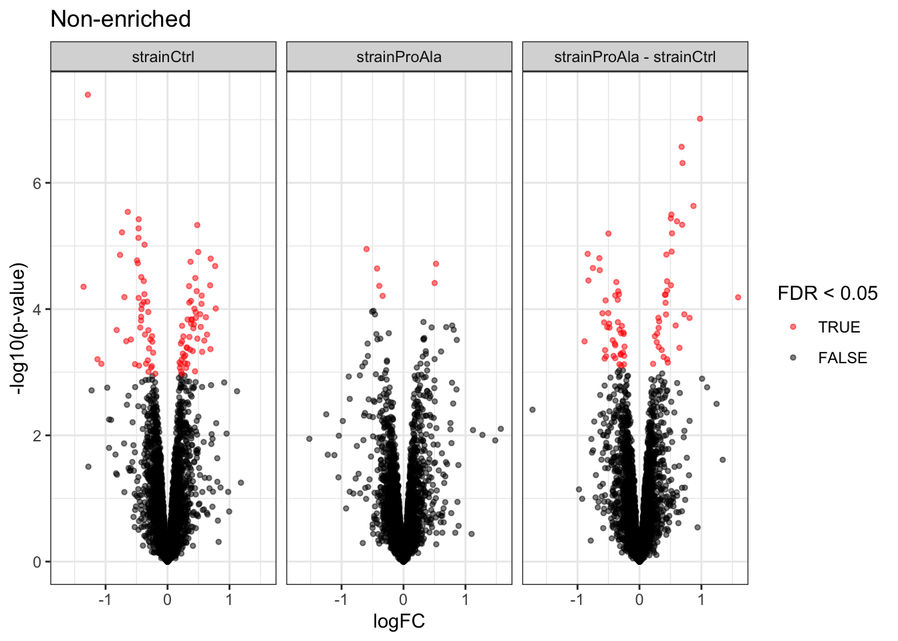
inferences |>
filter(adjPval < alpha) |>
mutate(DA = sign(logFC) |> as.factor() |> recode("-1"= "down","1" = "up")) |>
group_by(contrast, DA) |>
ggplot(aes(x = contrast)) +
geom_bar(aes(fill = factor(DA)),
colour = "black") +
theme_minimal() +
theme(axis.text.x = element_text(angle = 90))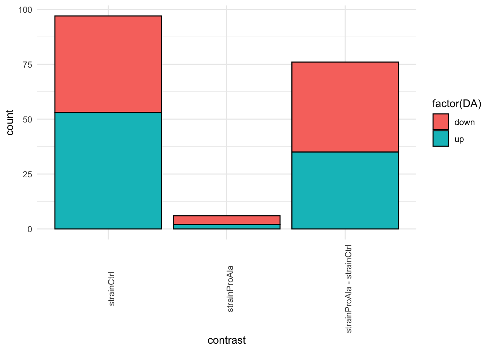
We notice that many proteins are DA at the nominal 5% FDR-level.
Heatmaps
lapply(colnames(L),
function(contrast, se, alpha)
{
sig <- rowData(se)[[contrast]] |>
filter(adjPval < alpha) |>
rownames()
quants <- t(scale(t(assay(se[sig,]))))
colnames(quants) <- se$sampleId #specific to this dataset to get short colnames
rowclushlp <- quants
rowclushlp[is.na(rowclushlp)] <- min(quants,na.rm=TRUE) - 2
rowclus <- hclust(dist(rowclushlp))
annotations <- columnAnnotation(
group = se$strain
) #3.
set.seed(1234) ## annotation colours are randomly generated by default
return(
Heatmap(show_row_names = FALSE,
quants,
name = "log2 intensity",
top_annotation = annotations,
column_title = paste0(contrast, " = 0"),
cluster_rows = rowclus
)
)
},
se = getWithColData(qf, "proteins"),
alpha = alpha)[[1]]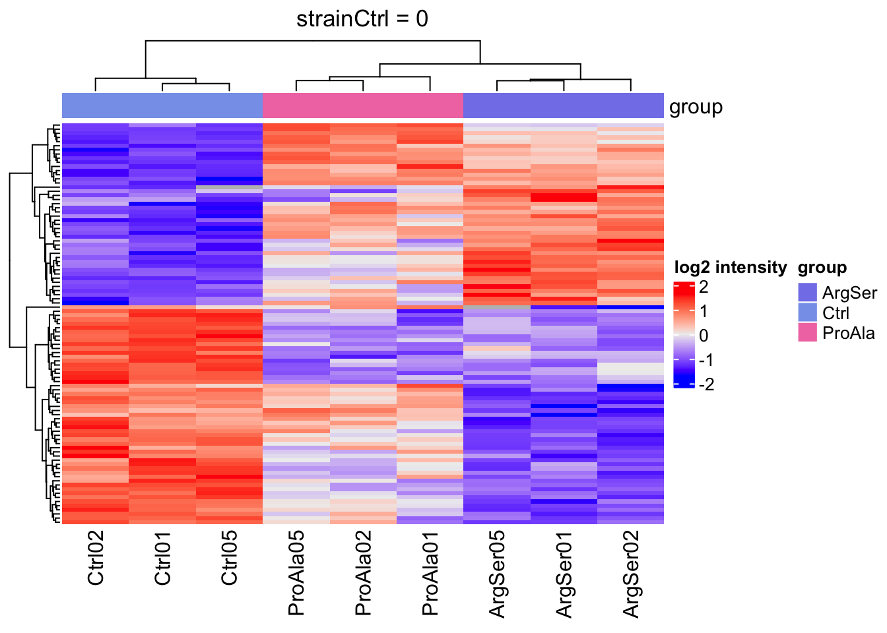
[[2]]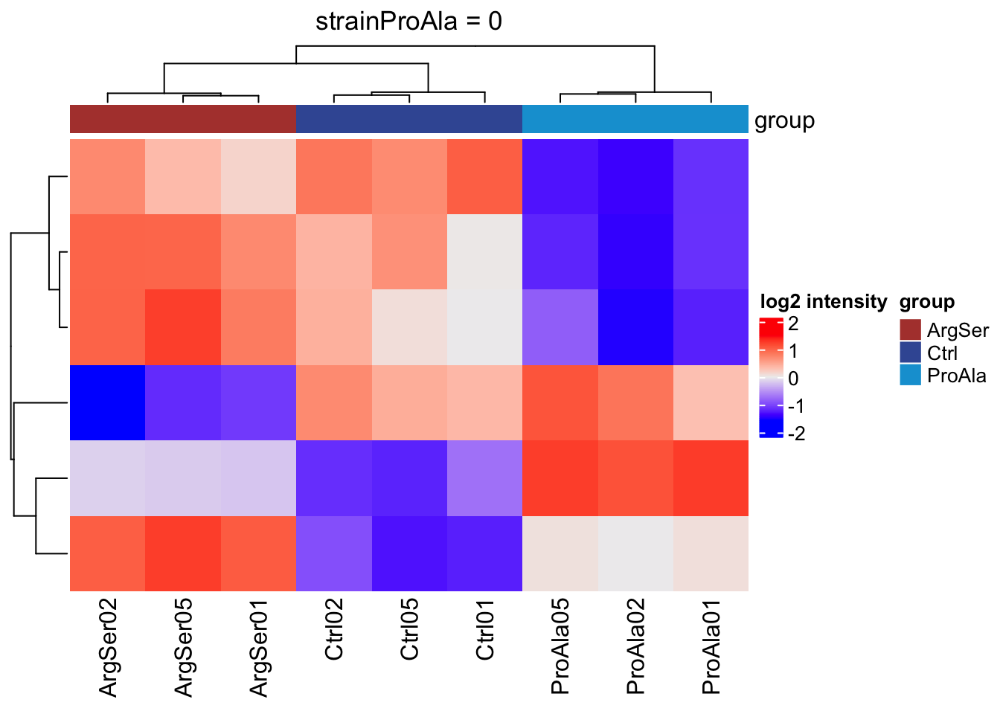
[[3]]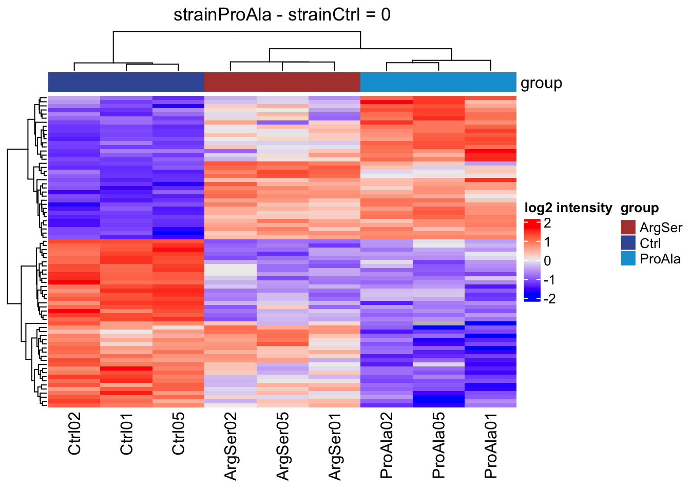
Detail plots
We can explore the data for a protein to validate the statistical inference results. For example, let’s explore the normalised precursor and the summarised protein intensities for the protein with the most significant log2 fold change.
(target_feature <- inferences |>
dplyr::slice(which.min(pval)) |>
pull(feature)
)[1] "Q12068"inferences |>
filter(feature == target_feature) logFC se df t
strainCtrl.Q12068 -1.2858668 0.06238249 7.8566 -20.612626
strainProAla.Q12068 -0.5965520 0.06087424 7.8566 -9.799745
strainProAla - strainCtrl.Q12068 0.6893148 0.06238249 7.8566 11.049813
pval adjPval
strainCtrl.Q12068 4.023265e-08 0.0001822539
strainProAla.Q12068 1.119660e-05 0.0343486565
strainProAla - strainCtrl.Q12068 4.617641e-06 0.0026124306
contrast feature
strainCtrl.Q12068 strainCtrl Q12068
strainProAla.Q12068 strainProAla Q12068
strainProAla - strainCtrl.Q12068 strainProAla - strainCtrl Q12068To obtain the required data, we perform a little data manipulation pipeline:
- We use the QFeatures subsetting functionality to retrieve all data related to and focusing on the precursors_log and proteins sets that contains the peptide ion data used for model fitting.
- We then convert the data with longForm() for plotting.
- Finally, we plot the log2 normalised intensities for each sample at the protein and at the peptide level. Since multiple peptides are recorded for the protein, we link peptides across samples using a grey line. Samples are colored according to strain.
qf[target_feature, , c("precursors_log","precursors_norm", "proteins")] |> #1
longForm(colvars = colnames(colData(qf))) |> #2
data.frame() |>
ggplot() +
aes(x = colname,
y = value) +
geom_line(aes(group = rowname), linewidth = 0.1) +
geom_point(aes(colour = strain)) +
facet_wrap(~ assay, scales = "free") +
ggtitle(target_feature) +
theme_minimal() +
theme(axis.text.x = element_blank())Warning: 'experiments' dropped; see 'drops()'harmonizing input:
removing 36 sampleMap rows not in names(experiments)
removing 9 colData rownames not in sampleMap 'primary'Warning: Removed 30 rows containing missing values or values outside the scale range
(`geom_line()`).Warning: Removed 64 rows containing missing values or values outside the scale range
(`geom_point()`).
qf[target_feature, , c("precursors_log","precursors_norm", "proteins")] |> #1
longForm(colvars = colnames(colData(qf))) |> #2
data.frame() |>
filter(!is.na(value)) %>%
{
ggplot(.) +
aes(x = strain,
y = value) +
geom_boxplot(aes(colour = strain)) +
facet_wrap(~ assay, scales = "free") +
geom_jitter(aes(shape = rowname)) +
scale_shape_manual(values = seq_len(dplyr::n_distinct(.$rowname))) +
ggtitle(target_feature) +
theme_minimal() +
theme(axis.text.x = element_blank()) +
guides(shape = "none")
}harmonizing input:
removing 36 sampleMap rows not in names(experiments)
removing 9 colData rownames not in sampleMap 'primary'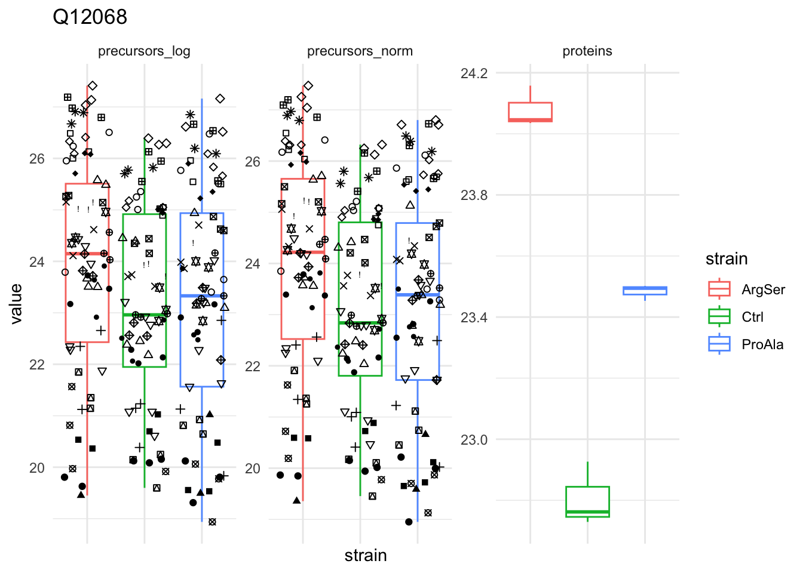
Compare phospo-precursor level intensities to protein level intensities
We compare the intensities for the top 5 DA phospo-precursors for the first contrast to these of their corresponding protein in the non-enriched assay.
contr = colnames(L)[1]
top5 <- inferencesPTM |>
filter(contrast == contr) |>
arrange(pval) |>
head(n = 5) |>
pull(feature)
for (feat in top5)
{
ptm_data <- qf[,,c("precursorsPTM_norm")] |>
longForm(colvars = colnames(colData(qf)), rowvars = "Protein.Group") |>
data.frame() |>
filter(rowname==feat)
feature_protein <- ptm_data |>
pull("Protein.Group") |>
unique()
prot_data <- qf[,,"proteins"]|>
longForm(colvars = colnames(colData(qf)), rowvars = "Protein.Group") |>
data.frame() |>
filter(Protein.Group==feature_protein)
ptm_protein <- rbind(ptm_data, prot_data)
ylims <- ptm_protein |>
group_by(assay) |>
summarise(cent = mean(range(value,na.rm=TRUE)), ampl = diff(range(value,na.rm=TRUE))) |>
mutate(lower = cent - max(ampl)/2,
upper = cent + max(ampl)/2) |>
select(-c(cent, ampl))
comparison_plot <- ptm_protein |>
ggplot() +
aes(x = sampleId,
y = value) +
geom_line(aes(group = rowname), linewidth = 0.1) +
geom_point(aes(colour = strain)) +
facet_wrap(~ assay, scales = "free") +
labs(
title = paste0(feat," / ", feature_protein),
subtitle = paste("padj PTM =",
inferencesPTM |>
filter(feature == feat & contrast == contr) |>
pull(adjPval) |>
round(digits = 3))
) +
theme_minimal() +
theme(axis.text.x = element_blank()) +
ggh4x::facetted_pos_scales(
y = list(
assay == ylims$assay[1] ~ scale_y_continuous(limits = unlist(ylims[1,c("lower","upper")])),
assay == ylims$assay[2] ~ scale_y_continuous(limits = unlist(ylims[2,c("lower","upper")])),
assay == ylims$assay[3] ~ scale_y_continuous(limits = unlist(ylims[3,c("lower","upper")]))
)
)
print(comparison_plot)
}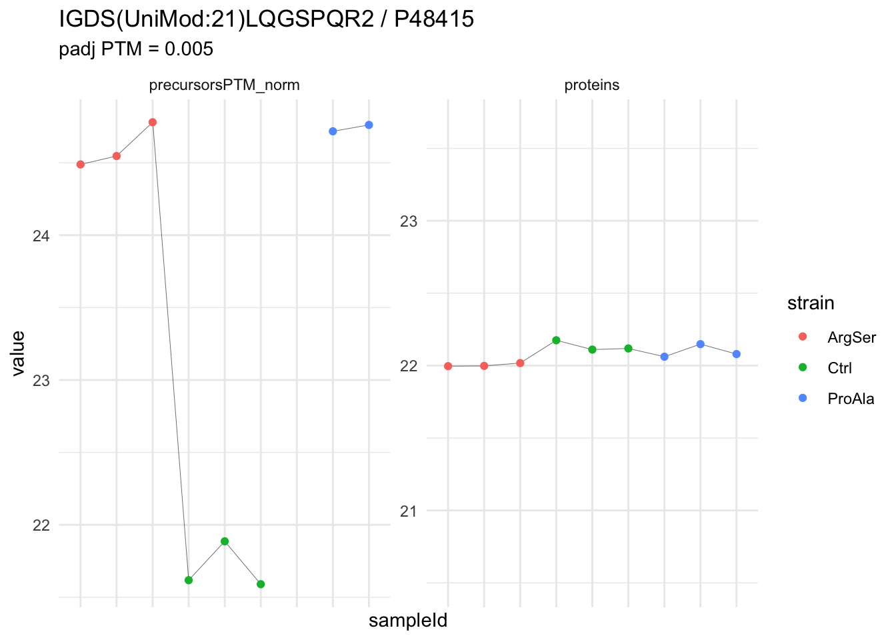
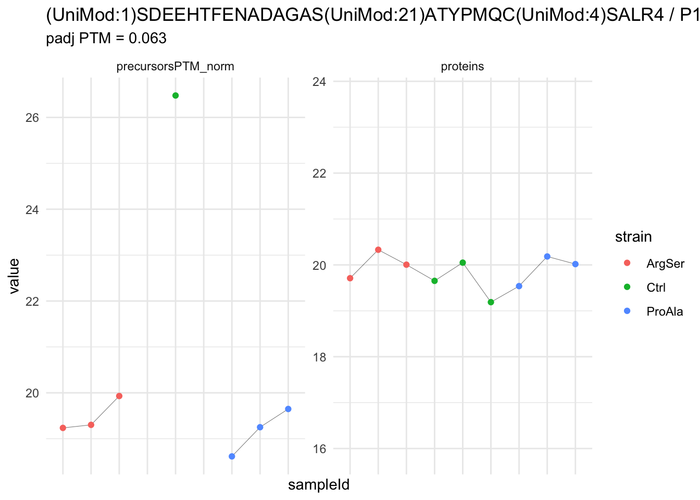
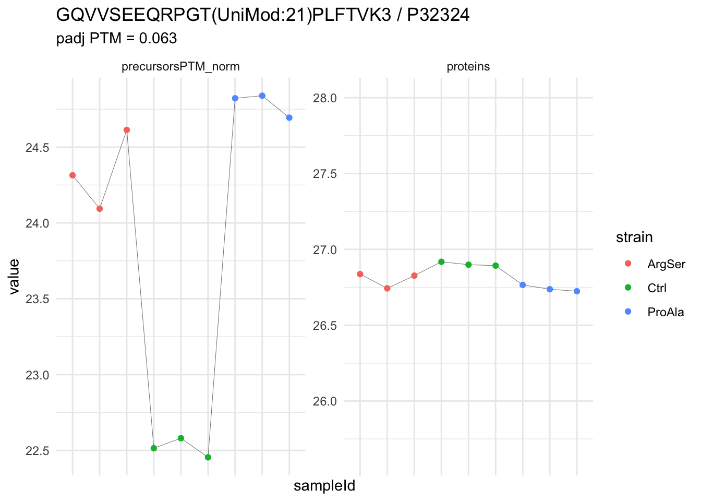
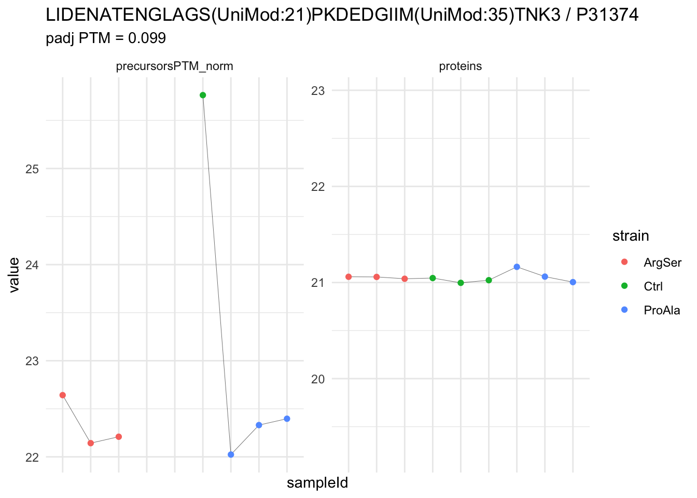
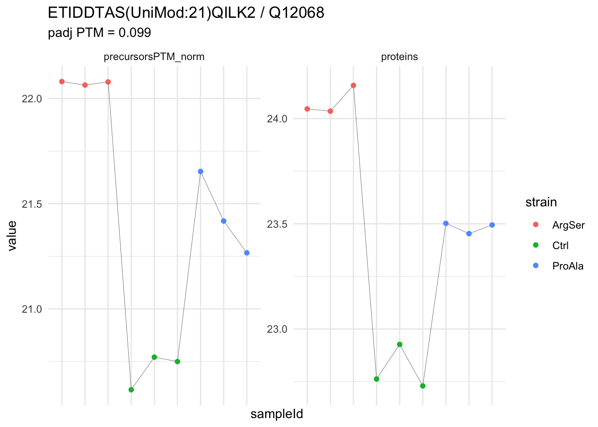
#Garbage collection to free space
gc(); gc() used (Mb) gc trigger (Mb) limit (Mb) max used (Mb)
Ncells 11711337 625.5 17413510 930.0 NA 17413510 930
Vcells 31229093 238.3 82337643 628.2 24576 312073015 2381 used (Mb) gc trigger (Mb) limit (Mb) max used (Mb)
Ncells 11711339 625.5 17413510 930.0 NA 17413510 930
Vcells 31229129 238.3 82337643 628.2 24576 312073015 238112.8 Data Modeling of phospho-peptidoform usages
12.8.1 Background
Differentially abundant PTMs can arise either from changes in PTM regulation or simply from changes in the abundance of the underlying protein.
To distinguish PTM-specific regulation from protein-level changes, we extend the concept of differential usage (DU) to PTMs:
\[ \log_2 DU = \log_2 FC^\text{PTM} - \log_2 FC^\text{protein}, \]
where \(log_2 FC^\text{PTM}\) is the fold change of the modified precursor/PTM and \(log_2 FC^\text{protein}\) is the fold change of the corresponding protein.
In other words, differential usage represents the differential abundance (DA) of a PTM after correcting for changes in protein abundance.
This metric highlights PTMs whose abundance changes cannot be explained solely by changes in the total protein level, thereby prioritising PTMs that may be under specific regulatory control.
Two experimental designs are commonly used to quantify precursor-level (PTM-level) and protein-level abundances:
Paired design: PTM and protein abundances are measured in the same biological replicate (sample).
Unpaired design: PTM and protein abundances are measured in independent biological replicates (different samples).
Paired samples
Perform regular data processing at the protein-level:
- log2-transformation,
- normalisation and
- summarisation
Calculate relative log2 transformed abundances at peptidoform level \[y^\text{pep,rel}_i = y^\text{pep}_i - y^\text{prot}_i\]
Perform conventional differential msqrob2 analysis on the relative peptidoform level. \(\rightarrow\) Immediately gives us diferential usages!
Optionally
- aggregate relative log2 transformed abundances at peptidoform level to PTM-level
- perform a differential msqrob2 analysis at PTM-level
- The paired design has the advantage that both metrics are estimated on the same biorepeat/sample, which enables a better estimation of the standard error on the usages.
Unpaired PTM-level and protein samples
This is the default MSstatsTMT approach, which they also use for paired designs?!
- Perform regular msqrob2 differential analysis at the protein-level
- Perform regular msqrob2 differential analysis at the peptidoform (PTM-level)
- Calculate usages
\[ \begin{array}{ccc} \log_2 \widehat{DU} & =& \log_2 \widehat{FC}^\text{PTM} - log_2 \widehat{FC}^\text{protein}\\ SE_\widehat{DU} &=& \sqrt{(SE_\widehat{FC}^{PTM})^2 + (SE_\widehat{FC}^{protein})^2} \end{array} \]
Our study
For this dataset we have phospho-enriched and non-enriched runs on the same biological samples.
We subsetted the data to have three unpaired samples for the phospho-enriched and non-enriched runs for each straing. So we do the Unpaired analysis.
12.8.2 Unpaired samples: calculate usages
We first define a function to correct phospho-precursor-level log-FC with non-enriched logFC.
- Matches the phospho-precursor to the non-enriched Protein.Group
- For each contrast
- 2.1. Extracts the inference results for the contrast at tc protein level
- 2.2. Adds them to the inference results for the contrast at the lip precursor level
- 2.3. Calculates the lip relative differential abundance (RDA), i.e. the logFC corrected for the tc logFC at the protein level and the corresponding inference
calculate_usage <- function(qf,
i_ptm,
i_ne,
contrasts,
fcol_ptm = "Protein.Group",
fcol_ne = "Protein.Group",
satterthwaite = FALSE)
{
match_precursor_to_protein_FC <- match(rowData(qf[[i_ptm]])[[fcol_ptm]],
rowData(qf[[i_ne]])[[fcol_ne]]) #1.
for (contrast in contrasts)
{
results_ne <- rowData(qf[[i_ne]])[[contrast]] #2.1
colnames(results_ne) <- results_ne |>
colnames() |>
paste0("_ne")
rowData(qf[[i_ptm]])[[contrast]] <- cbind(
rowData(qf[[i_ptm]])[[contrast]],
results_ne[match_precursor_to_protein_FC,]) |> #2.2
mutate(
logUsage = logFC - logFC_ne, #2.3
se_usage = sqrt(se^2 + se_ne^2),
t_usage = logUsage /se_usage,
df_usage = if (satterthwaite) (se^2 + se_ne^2)^2/(se^4/df + se_ne^4/df_ne) else df,
pval_usage = pt(abs(t_usage), df_usage, lower.tail = FALSE)*2,
adjPval_usage = p.adjust(pval_usage, method = "fdr")
)
}
return(qf)
}Calculate log-transformed usages (relative differential abundances).
qf <- calculate_usage(qf, i_ptm = "precursorsPTM_norm", i_ne = "proteins", contrasts = colnames(L))We extract the results table from the precursorsPTM_norm summarised experiment in the qf object.
inferencesUsage <-
msqrobCollect(qf[["precursorsPTM_norm"]], L) |>
relocate(contains("sage"))12.8.3 Report results
We report the results using a results table, volcano plots and heatmaps.
Results table
for (j in colnames(L)) {
inference <- inferencesUsage |>
dplyr::filter(adjPval_usage < alpha & contrast == j)
cat("**Median - Contrast:**", j, "= 0 (", nrow(inference),
"significant proteins)\n\n")
cat('<div style="max-height:300px; overflow-y:auto;">')
print(
kable(
inference |>
dplyr::arrange(pval) |>
dplyr::relocate(feature),
row.names = FALSE
)
)
cat('</div>')
cat("\n\n\n---\n\n")
}Median - Contrast: strainCtrl = 0 ( 1 significant proteins)
| feature | logUsage | se_usage | t_usage | df_usage | pval_usage | adjPval_usage | logFC | se | df | t | pval | adjPval | logFC_ne | se_ne | df_ne | t_ne | pval_ne | adjPval_ne | contrast |
|---|---|---|---|---|---|---|---|---|---|---|---|---|---|---|---|---|---|---|---|
| IGDS(UniMod:21)LQGSPQR2 | -3.035308 | 0.1459204 | -20.80113 | 6.823797 | 2e-07 | 0.0045262 | -2.907071 | 0.1393496 | 6.823797 | -20.86171 | 2e-07 | 0.0045824 | 0.1282368 | 0.0432948 | 7.567804 | 2.961945 | 0.0192543 | 0.2110896 | strainCtrl |
Median - Contrast: strainProAla = 0 ( 1 significant proteins)
| feature | logUsage | se_usage | t_usage | df_usage | pval_usage | adjPval_usage | logFC | se | df | t | pval | adjPval | logFC_ne | se_ne | df_ne | t_ne | pval_ne | adjPval_ne | contrast |
|---|---|---|---|---|---|---|---|---|---|---|---|---|---|---|---|---|---|---|---|
| AVQES(UniMod:21)DS(UniMod:21)TTS(UniMod:21)RIIEEHESPIDAEK3 | -4.030669 | 0.1705019 | -23.64002 | 5.826762 | 5e-07 | 0.0118133 | -3.860267 | 0.1557383 | 5.826762 | -24.78688 | 4e-07 | 0.0092686 | 0.1704021 | 0.0694008 | 7.094431 | 2.455334 | 0.0433169 | 0.4645012 | strainProAla |
Median - Contrast: strainProAla - strainCtrl = 0 ( 10 significant proteins)
| feature | logUsage | se_usage | t_usage | df_usage | pval_usage | adjPval_usage | logFC | se | df | t | pval | adjPval | logFC_ne | se_ne | df_ne | t_ne | pval_ne | adjPval_ne | contrast |
|---|---|---|---|---|---|---|---|---|---|---|---|---|---|---|---|---|---|---|---|
| IGDS(UniMod:21)LQGSPQR2 | 3.083597 | 0.1621195 | 19.020521 | 6.823797 | 4.00e-07 | 0.0057587 | 3.0414472 | 0.1557899 | 6.823797 | 19.522750 | 3.00e-07 | 0.0054041 | -0.0421498 | 0.0448579 | 7.567804 | -0.9396288 | 0.3764250 | 0.7417064 | strainProAla - strainCtrl |
| AVQES(UniMod:21)DS(UniMod:21)TTS(UniMod:21)RIIEEHESPIDAEK3 | -3.760489 | 0.1705019 | -22.055406 | 5.826762 | 8.00e-07 | 0.0057587 | -3.7465156 | 0.1557383 | 5.826762 | -24.056476 | 5.00e-07 | 0.0054041 | 0.0139732 | 0.0694008 | 7.094431 | 0.2013412 | 0.8460831 | 0.9503887 | strainProAla - strainCtrl |
| GQVVSEEQRPGT(UniMod:21)PLFTVK3 | 2.429170 | 0.1400049 | 17.350610 | 6.779026 | 7.00e-07 | 0.0057587 | 2.2682125 | 0.1336666 | 6.779026 | 16.969186 | 8.00e-07 | 0.0064050 | -0.1609579 | 0.0416488 | 7.740504 | -3.8646436 | 0.0050886 | 0.1220742 | strainProAla - strainCtrl |
| (UniMod:1)SDS(UniMod:21)EVNQEAKPEVK2 | 2.069514 | 0.1553546 | 13.321232 | 6.038833 | 1.05e-05 | 0.0435310 | 2.0997487 | 0.1203906 | 6.038833 | 17.441138 | 2.10e-06 | 0.0123465 | 0.0302344 | 0.0981894 | 7.314497 | 0.3079188 | 0.7667282 | 0.9287311 | strainProAla - strainCtrl |
| (UniMod:1)SDEEHTFENADAGAS(UniMod:21)ATYPMQC(UniMod:4)SALR4 | -7.571817 | 0.5271283 | -14.364279 | 5.736513 | 1.03e-05 | 0.0435310 | -7.2887717 | 0.4604139 | 5.736513 | -15.830911 | 5.90e-06 | 0.0233619 | 0.2830457 | 0.2566773 | 8.130153 | 1.1027295 | 0.3017137 | 0.6860909 | strainProAla - strainCtrl |
| LTNMPFGGNPTANQSGS(UniMod:21)GNSLFGTK3 | -2.481942 | 0.2316531 | -10.714045 | 6.646603 | 1.95e-05 | 0.0435310 | -2.4850090 | 0.2265396 | 6.646603 | -10.969426 | 1.68e-05 | 0.0392179 | -0.0030673 | 0.0484043 | 7.892323 | -0.0633674 | 0.9510494 | 0.9828450 | strainProAla - strainCtrl |
| LIDENATENGLAGS(UniMod:21)PKDEDGIIM(UniMod:35)TNK3 | -3.558429 | 0.2759366 | -12.895822 | 5.765748 | 1.80e-05 | 0.0435310 | -3.5131571 | 0.2707854 | 5.765748 | -12.973952 | 1.74e-05 | 0.0392179 | 0.0452717 | 0.0530682 | 6.881750 | 0.8530846 | 0.4223077 | 0.7742443 | strainProAla - strainCtrl |
| RAT(UniMod:21)YAGFLLADPK3 | 2.714078 | 0.2598206 | 10.445970 | 6.826762 | 1.91e-05 | 0.0435310 | 2.5531200 | 0.2564607 | 6.826762 | 9.955209 | 2.60e-05 | 0.0392179 | -0.1609579 | 0.0416488 | 7.740504 | -3.8646436 | 0.0050886 | 0.1220742 | strainProAla - strainCtrl |
| RGQVVSEEQRPGT(UniMod:21)PLFTVK3 | 1.980699 | 0.2099576 | 9.433805 | 7.695480 | 1.70e-05 | 0.0435310 | 1.8197408 | 0.2057852 | 7.695480 | 8.842913 | 2.69e-05 | 0.0392179 | -0.1609579 | 0.0416488 | 7.740504 | -3.8646436 | 0.0050886 | 0.1220742 | strainProAla - strainCtrl |
| ETVES(UniMod:21)ESSQTALSK2 | 1.147862 | 0.1164119 | 9.860350 | 7.253952 | 1.85e-05 | 0.0435310 | 0.9869042 | 0.1087065 | 7.253952 | 9.078612 | 3.24e-05 | 0.0392179 | -0.1609579 | 0.0416488 | 7.740504 | -3.8646436 | 0.0050886 | 0.1220742 | strainProAla - strainCtrl |
Volcanoplots
inferencesUsage |>
filter(is.finite(adjPval_usage)) |>
ggplot(aes(x = logUsage,
y = -log10(pval_usage),
col = adjPval_usage < alpha)) +
geom_point(size = 1, alpha = 0.5) +
theme_bw() +
ylab("-log10(p-value)") +
scale_color_manual(values = c(`FALSE` = "black", `TRUE` = "red"),
breaks = c("TRUE", "FALSE")) +
labs(color = paste0("FDR < ", alpha)) +
facet_wrap(~contrast) +
labs(title = "Usage")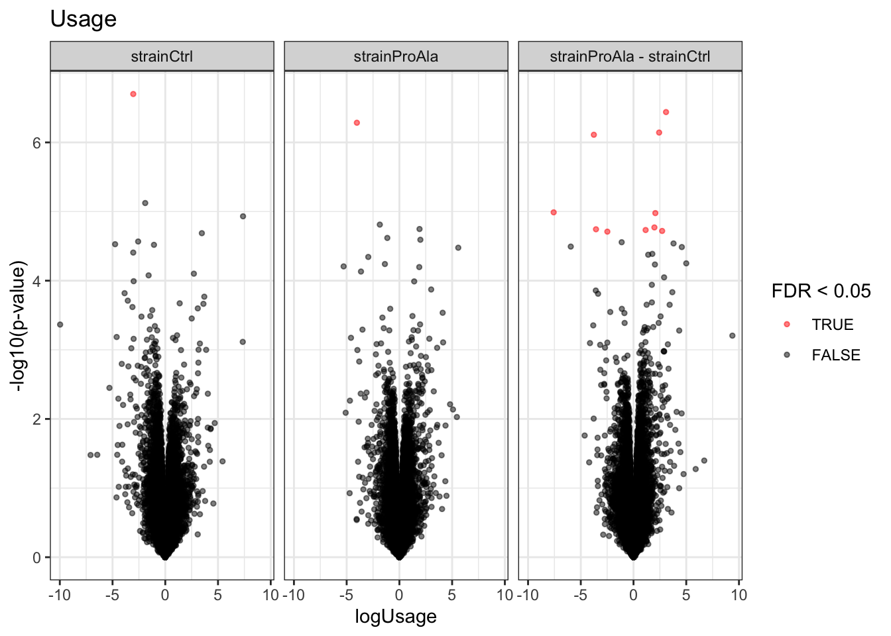
inferencesUsage |>
filter(adjPval_usage < alpha) |>
mutate(DA = sign(logUsage) |> as.factor() |> recode("-1"= "down","1" = "up")) |>
group_by(contrast, DA) |>
ggplot(aes(x = contrast)) +
geom_bar(aes(fill = factor(DA)),
colour = "black") +
theme_minimal() +
theme(axis.text.x = element_text(angle = 90))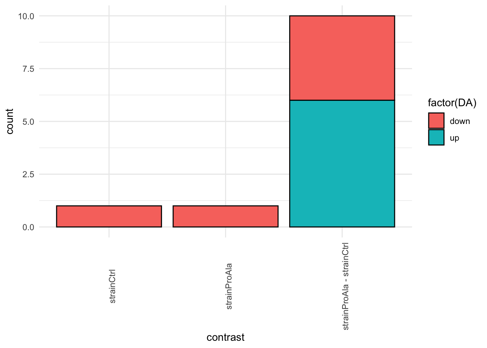
We observe that the number of significant precursors reduced.
Detail plots
We can explore the data for a protein to validate the statistical inference results. For example, let’s explore the normalised precursor abundance as well as the summarised protein intensities for the precursor with the most significant log2 usage.
(target_feature <- inferencesUsage |>
dplyr::slice(which.min(pval_usage)) |>
pull(feature)
)[1] "IGDS(UniMod:21)LQGSPQR2"inferencesUsage |>
filter(feature == target_feature) logUsage se_usage
strainCtrl.IGDS(UniMod:21)LQGSPQR2 -3.03530811 0.1459204
strainProAla.IGDS(UniMod:21)LQGSPQR2 0.04828887 0.1619233
strainProAla - strainCtrl.IGDS(UniMod:21)LQGSPQR2 3.08359698 0.1621195
t_usage df_usage
strainCtrl.IGDS(UniMod:21)LQGSPQR2 -20.8011276 6.823796
strainProAla.IGDS(UniMod:21)LQGSPQR2 0.2982207 6.823796
strainProAla - strainCtrl.IGDS(UniMod:21)LQGSPQR2 19.0205214 6.823796
pval_usage adjPval_usage
strainCtrl.IGDS(UniMod:21)LQGSPQR2 1.994183e-07 0.004526198
strainProAla.IGDS(UniMod:21)LQGSPQR2 7.744101e-01 0.999653849
strainProAla - strainCtrl.IGDS(UniMod:21)LQGSPQR2 3.638940e-07 0.005758670
logFC se df
strainCtrl.IGDS(UniMod:21)LQGSPQR2 -2.9070713 0.1393496 6.823796
strainProAla.IGDS(UniMod:21)LQGSPQR2 0.1343759 0.1557591 6.823796
strainProAla - strainCtrl.IGDS(UniMod:21)LQGSPQR2 3.0414472 0.1557899 6.823796
t pval
strainCtrl.IGDS(UniMod:21)LQGSPQR2 -20.861711 1.955531e-07
strainProAla.IGDS(UniMod:21)LQGSPQR2 0.862716 4.175794e-01
strainProAla - strainCtrl.IGDS(UniMod:21)LQGSPQR2 19.522750 3.054750e-07
adjPval logFC_ne
strainCtrl.IGDS(UniMod:21)LQGSPQR2 0.004582395 0.12823677
strainProAla.IGDS(UniMod:21)LQGSPQR2 0.986318960 0.08608698
strainProAla - strainCtrl.IGDS(UniMod:21)LQGSPQR2 0.005404076 -0.04214978
se_ne df_ne
strainCtrl.IGDS(UniMod:21)LQGSPQR2 0.04329478 7.567804
strainProAla.IGDS(UniMod:21)LQGSPQR2 0.04425229 7.567804
strainProAla - strainCtrl.IGDS(UniMod:21)LQGSPQR2 0.04485791 7.567804
t_ne pval_ne
strainCtrl.IGDS(UniMod:21)LQGSPQR2 2.9619450 0.01925433
strainProAla.IGDS(UniMod:21)LQGSPQR2 1.9453679 0.08968875
strainProAla - strainCtrl.IGDS(UniMod:21)LQGSPQR2 -0.9396288 0.37642501
adjPval_ne
strainCtrl.IGDS(UniMod:21)LQGSPQR2 0.2110896
strainProAla.IGDS(UniMod:21)LQGSPQR2 0.5871243
strainProAla - strainCtrl.IGDS(UniMod:21)LQGSPQR2 0.7417064
contrast
strainCtrl.IGDS(UniMod:21)LQGSPQR2 strainCtrl
strainProAla.IGDS(UniMod:21)LQGSPQR2 strainProAla
strainProAla - strainCtrl.IGDS(UniMod:21)LQGSPQR2 strainProAla - strainCtrl
feature
strainCtrl.IGDS(UniMod:21)LQGSPQR2 IGDS(UniMod:21)LQGSPQR2
strainProAla.IGDS(UniMod:21)LQGSPQR2 IGDS(UniMod:21)LQGSPQR2
strainProAla - strainCtrl.IGDS(UniMod:21)LQGSPQR2 IGDS(UniMod:21)LQGSPQR2We again make a similar plot as before.
ptm <- qf[target_feature, , c("precursorsPTM_norm")] |> #1
longForm(colvars = colnames(colData(qf)), rowvars = "Protein.Group") |> #2
data.frame()Warning: 'experiments' dropped; see 'drops()'harmonizing input:
removing 54 sampleMap rows not in names(experiments)
removing 9 colData rownames not in sampleMap 'primary'protein <- qf[unique(ptm$Protein.Group), , c("proteins")] |> #1
longForm(colvars = colnames(colData(qf)), rowvars = "Protein.Group") |> #2
data.frame()Warning: 'experiments' dropped; see 'drops()'harmonizing input:
removing 54 sampleMap rows not in names(experiments)
removing 9 colData rownames not in sampleMap 'primary'ptm_protein <- rbind(ptm, protein)
ylims <- ptm_protein |>
group_by(assay) |>
summarise(cent = mean(range(value,na.rm=TRUE)), ampl = diff(range(value,na.rm=TRUE))) |>
mutate(lower = cent - max(ampl)/2,
upper = cent + max(ampl)/2) |>
select(-c(cent, ampl))
outplot <- ptm_protein |>
ggplot() +
aes(x = colname,
y = value) +
geom_line(aes(group = rowname), linewidth = 0.1) +
geom_point(aes(colour = strain)) +
facet_wrap(~ assay, scales = "free") +
ggh4x::facetted_pos_scales(
y = list(
assay == ylims$assay[1] ~ scale_y_continuous(limits = unlist(ylims[1,c("lower","upper")])),
assay == ylims$assay[2] ~ scale_y_continuous(limits = unlist(ylims[2,c("lower","upper")]))
)
) +
labs(subtitle = target_feature) +
theme_minimal() +
theme(axis.text.x = element_blank())
print(outplot)Warning: Removed 1 row containing missing values or values outside the scale range
(`geom_point()`).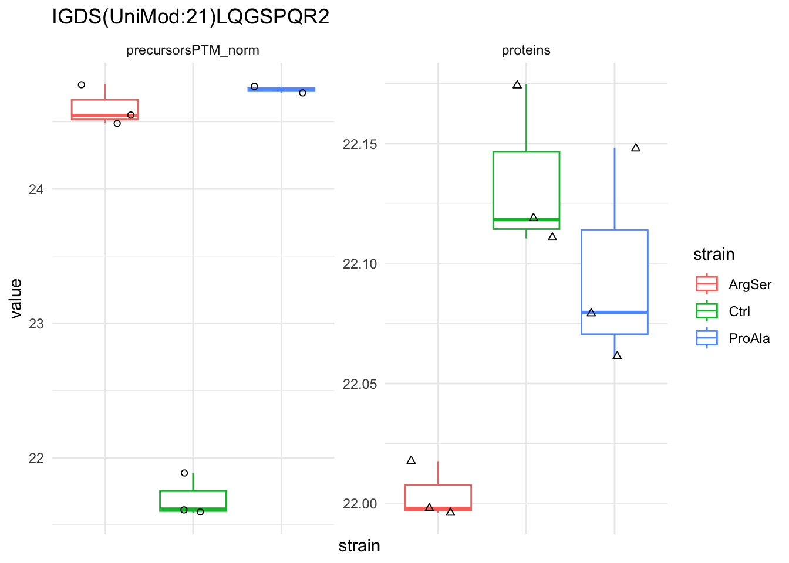
rbind(ptm, protein) %>%
{
ggplot(.) +
aes(x = strain,
y = value) +
geom_boxplot(aes(colour = strain)) +
facet_wrap(~ assay, scales = "free") +
geom_jitter(aes(shape = rowname)) +
scale_shape_manual(values = seq_len(dplyr::n_distinct(.$rowname))) +
ggtitle(target_feature) +
theme_minimal() +
theme(axis.text.x = element_blank()) +
guides(shape = "none")
}Warning: Removed 1 row containing non-finite outside the scale range
(`stat_boxplot()`).Warning: Removed 1 row containing missing values or values outside the scale range
(`geom_point()`).
We compare the intensities for the top 5 DA phospo-precursors for the first contrast to these of their corresponding protein in the non-enriched assay and to the usages.
contr = colnames(L)[1]
top5 <- inferencesPTM |>
filter(contrast == contr) |>
arrange(pval) |>
head(n = 5) |>
pull(feature)
for (feat in top5)
{
ptm_data <- qf[,,c("precursorsPTM_norm")] |>
longForm(colvars = colnames(colData(qf)), rowvars = "Protein.Group") |>
data.frame() |>
filter(rowname==feat)
feature_protein <- ptm_data |>
pull("Protein.Group") |>
unique()
prot_data <- qf[,,"proteins"]|>
longForm(colvars = colnames(colData(qf)), rowvars = "Protein.Group") |>
data.frame() |>
filter(Protein.Group==feature_protein)
ptm_protein <- rbind(ptm_data, prot_data)
ylims <- ptm_protein |>
group_by(assay) |>
summarise(cent = mean(range(value,na.rm=TRUE)), ampl = diff(range(value,na.rm=TRUE))) |>
mutate(lower = cent - max(ampl)/2,
upper = cent + max(ampl)/2) |>
select(-c(cent, ampl))
comparison_plot <- ptm_protein |>
ggplot() +
aes(x = sampleId,
y = value) +
geom_line(aes(group = rowname), linewidth = 0.1) +
geom_point(aes(colour = strain)) +
facet_wrap(~ assay, scales = "free") +
labs(
title = paste0(feat," / ", feature_protein),
subtitle = paste("padj PTM =",
inferencesPTM |>
filter(feature == feat & contrast == contr) |>
pull(adjPval) |>
round(digits = 3),
"padj usage =",
inferencesUsage |>
filter(feature == feat & contrast == contr) |>
pull(adjPval_usage) |>
round(digits = 3))
) +
theme_minimal() +
theme(axis.text.x = element_blank()) +
ggh4x::facetted_pos_scales(
y = list(
assay == ylims$assay[1] ~ scale_y_continuous(limits = unlist(ylims[1,c("lower","upper")])),
assay == ylims$assay[2] ~ scale_y_continuous(limits = unlist(ylims[2,c("lower","upper")]))
)
)
print(comparison_plot)
}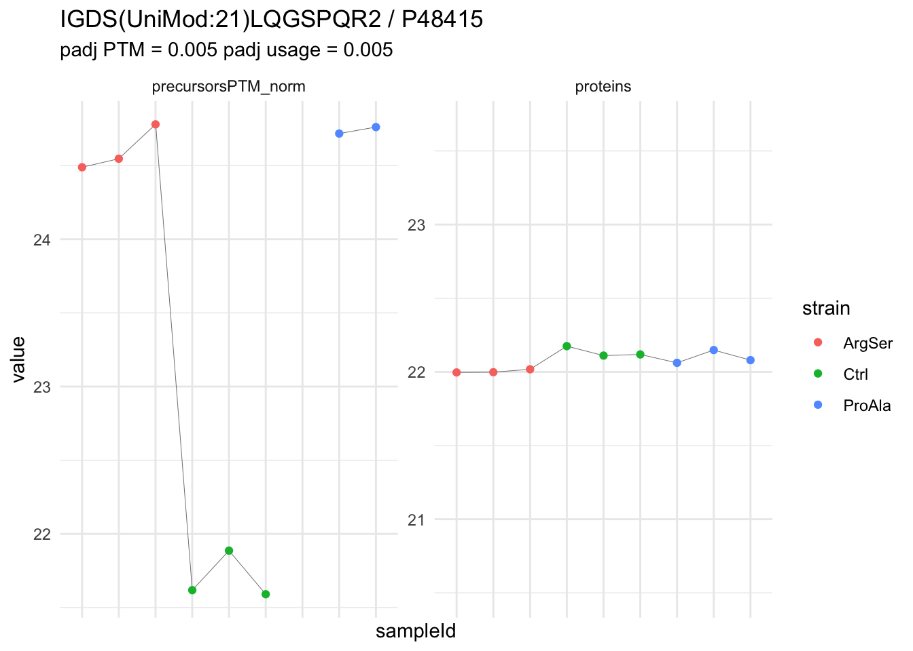


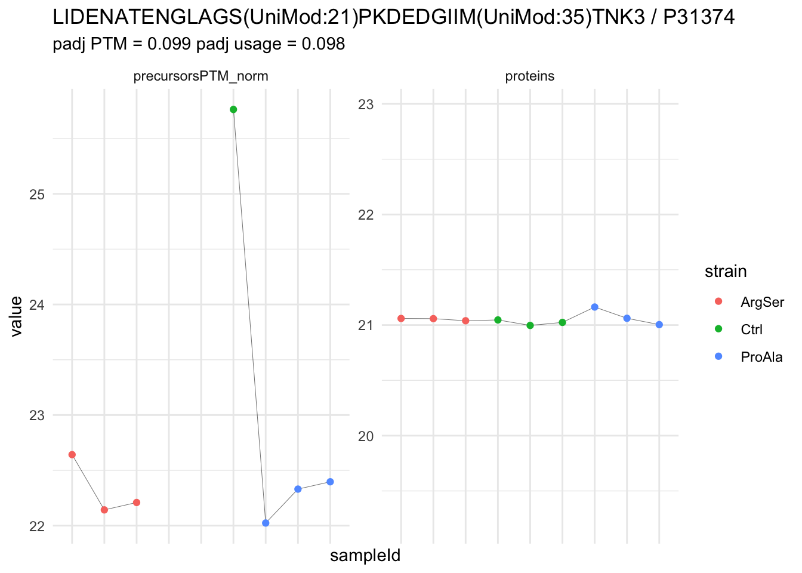
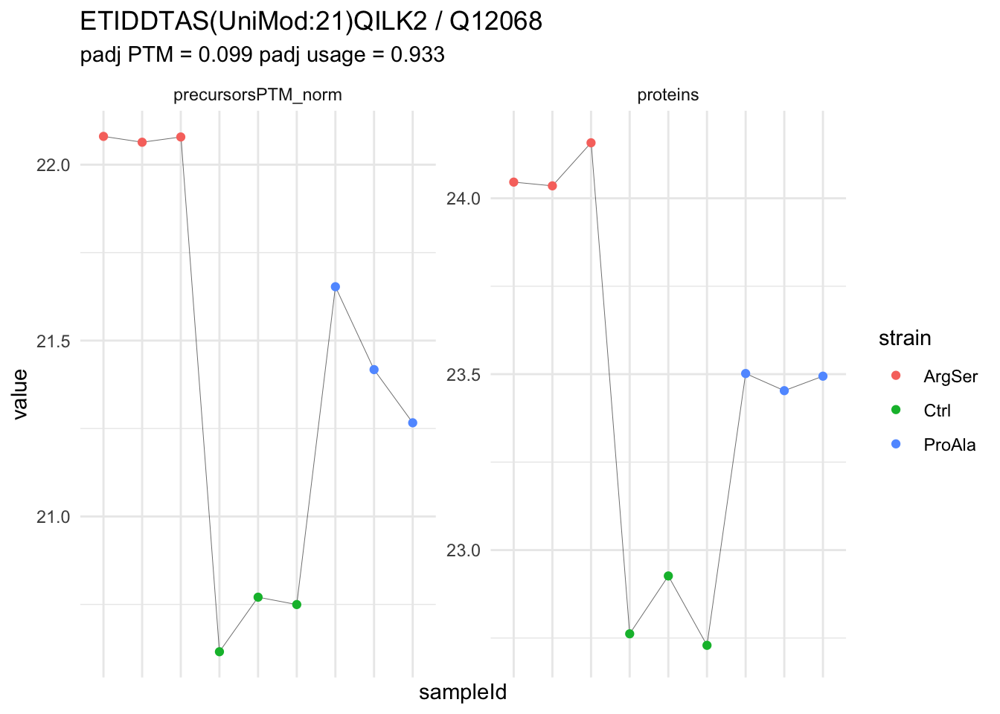
We compare the intensities for the top 5 DU phospo-precursors for the first contrast to these of their corresponding protein in the non-enriched assay and to their unadjusted abundances.
contr = colnames(L)[1]
top5 <- inferencesUsage |>
filter(contrast == contr) |>
arrange(pval_usage) |>
head(n = 5) |>
pull(feature)
for (feat in top5)
{
ptm_data <- qf[,,c("precursorsPTM_norm")] |>
longForm(colvars = colnames(colData(qf)), rowvars = "Protein.Group") |>
data.frame() |>
filter(rowname==feat)
feature_protein <- ptm_data |>
pull("Protein.Group") |>
unique()
prot_data <- qf[,,"proteins"]|>
longForm(colvars = colnames(colData(qf)), rowvars = "Protein.Group") |>
data.frame() |>
filter(Protein.Group==feature_protein)
ptm_protein <- rbind(ptm_data, prot_data)
ylims <- ptm_protein |>
group_by(assay) |>
summarise(cent = mean(range(value,na.rm=TRUE)), ampl = diff(range(value,na.rm=TRUE))) |>
mutate(lower = cent - max(ampl)/2,
upper = cent + max(ampl)/2) |>
select(-c(cent, ampl))
comparison_plot <- ptm_protein |>
ggplot() +
aes(x = sampleId,
y = value) +
geom_line(aes(group = rowname), linewidth = 0.1) +
geom_point(aes(colour = strain)) +
facet_wrap(~ assay, scales = "free") +
labs(
title = paste0(feat," / ", feature_protein),
subtitle = paste("padj PTM =",
inferencesPTM |>
filter(feature == feat & contrast == contr) |>
pull(adjPval) |>
round(digits = 3),
"padj usage =",
inferencesUsage |>
filter(feature == feat & contrast == contr) |>
pull(adjPval_usage) |>
round(digits = 3))
) +
theme_minimal() +
theme(axis.text.x = element_blank()) +
ggh4x::facetted_pos_scales(
y = list(
assay == ylims$assay[1] ~ scale_y_continuous(limits = unlist(ylims[1,c("lower","upper")])),
assay == ylims$assay[2] ~ scale_y_continuous(limits = unlist(ylims[2,c("lower","upper")])))
)
print(comparison_plot)
}
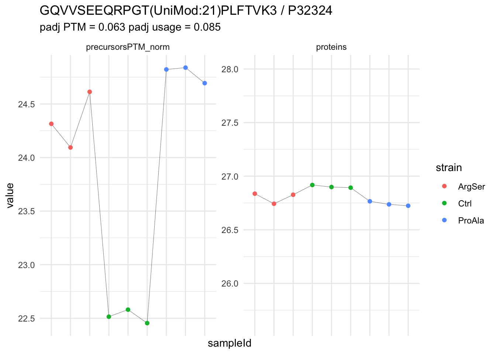
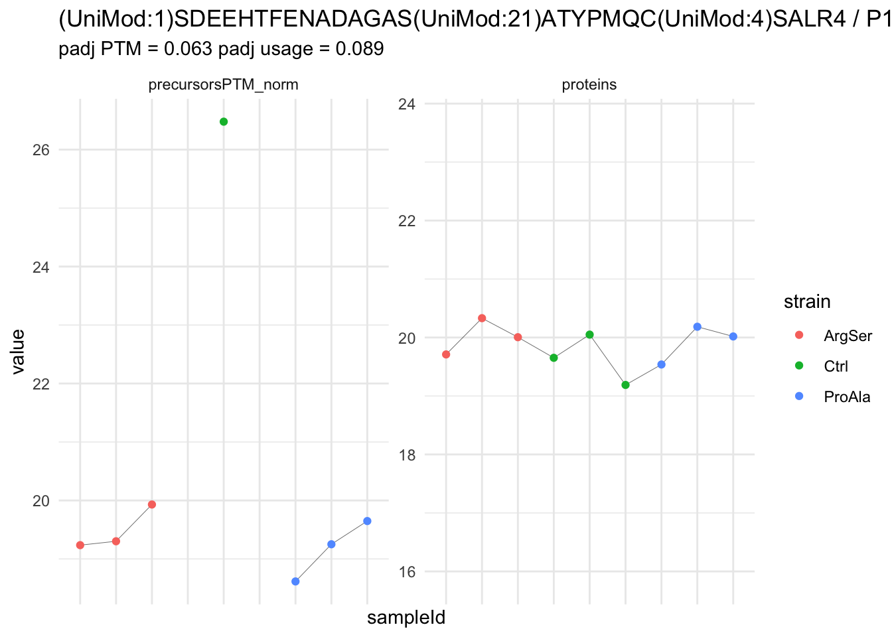

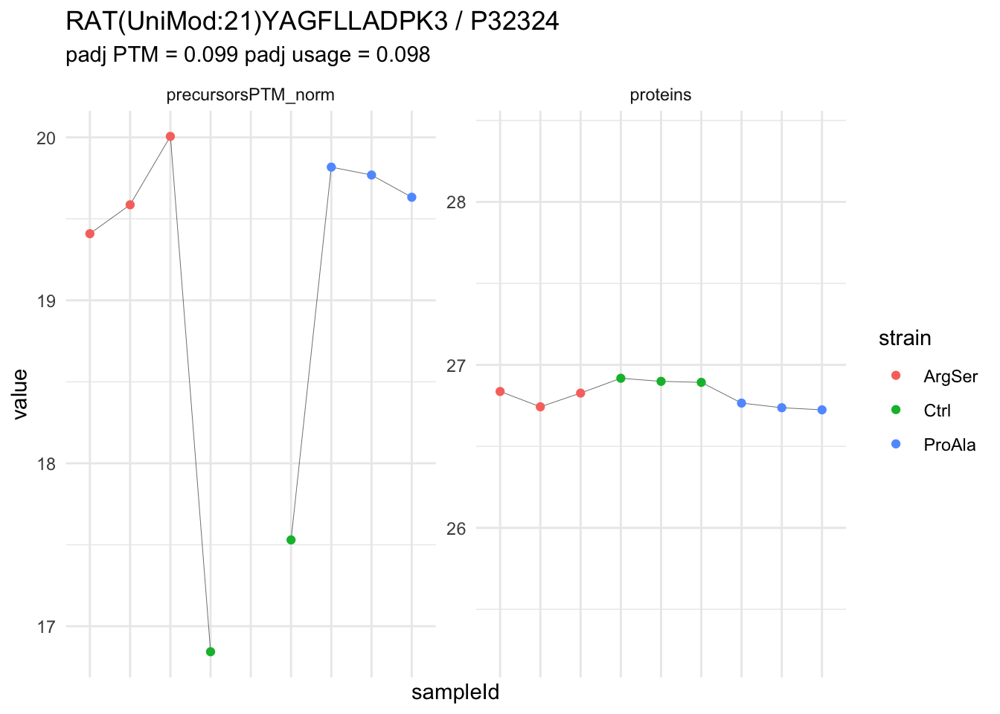
#Garbage collection to free space
gc(); gc() used (Mb) gc trigger (Mb) limit (Mb) max used (Mb)
Ncells 11727985 626.4 17413510 930.0 NA 17413510 930
Vcells 34642316 264.3 82337643 628.2 24576 312073015 2381 used (Mb) gc trigger (Mb) limit (Mb) max used (Mb)
Ncells 11727975 626.4 17413510 930.0 NA 17413510 930
Vcells 34642332 264.4 82337643 628.2 24576 312073015 238112.9 Differential usage analysis at the PTM level
Multiple precursors are carrying the same PTM (cover the PTM at a certain position in the protein). We can aggregate them together.
- Here we first aggregate the precursor level abundances
- Calculate the DA at the PTM-level
- Correct the DA at PTM-level with the DA at the protein level to obtain the usages
12.9.1 Data processing
The variable Protein.Sites in the DIA-NN parquet file contains information on the exact modified residue position in the full protein sequence.
We first will make a new assay with duplicates for the precursors that contain multiple phospho sites.
- We extract the usage assay
- We extract the row data with the original variables (drop msqrob2 colums)
- Add a new variable with the modification type, which can derived from the variable
Modified.Sequence. Indeed, all modifications start with string “UniMod:” followed by a number, i.e. 21 is a phoshorylation. So we extract all patterns “UniMod:[0-9]+” (UniMod:to match the literal text “UniMod:”,[0-9]to match any digit (0–9) and+to match one or more digits. We then replace patternUniprot:with an empty string. - Add a new variable with the location of the modification on the original protein, which can be extracted from the variable
Protein.Sites. Indeed, this variables contains the residu and its position in the protein sequence. If the sequence contains multiple modifications, the sites are separated with a,. Regex(?<=:)[^\]]+extracts all characters immediately after the colon without returning the colon and ignores], e.g. for “[P52871:A2,S4]” it will return “A2,S4”. The resulting string is then splitted and subsequently the residue (first character) is removed. - Replace the rowData of se
- Make vector of the row numbers with duplicates for the sequences containing multiple PTMs
- Make a corresponding vector with the positions of the individual PTM sites
- Make a corresponding vector with the modification type
- Extract the ids of rows that correspond to phospho sites
- Make a new summarised experiment with duplicate entries for precursors with multiple phospho sites.
- Add the position of the phospho site
- Add a variable with the Protein.Group name and the phospho site position attached to it.
- Make the rownames unique by appending the phospho site position to it.
- Add the assay to the QFeatures object.
se <- qf[["precursorsPTM_norm"]] #1.
rd <- rowData(se)[,names(rowData(qf[["precursorsPTM"]]))] |> ##2.
as.data.frame() |>
mutate(
mods = str_extract_all(Modified.Sequence,
"UniMod:[0-9]+") |>
lapply(FUN = gsub, pattern="UniMod:",replacement=""), ##3.
pos = str_extract(Protein.Sites,
"(?<=:)[^\\]]+") |>
strsplit(split = ",") |>
lapply(FUN=substr,start=2,stop=10000) |>
lapply(FUN=as.integer) ##4.
)
rowData(se) <- rd ##5.
ids <- rep(rd |>
nrow() |>
seq_len(),
rd |>
pull(pos) |>
sapply(FUN = length))##6.
pos <- unlist(rd$pos) ##7.
mod <- unlist(rd$mods) ##8.
phosIds <- ids[mod == "21"] ##9.
seDup <- se[phosIds,] ##10.
rowData(seDup)$pos <- pos[mod == "21"] ##11.
rowData(seDup)$Protein.Group.Mod <- paste(
rowData(seDup)$Protein.Group,
rowData(seDup)$pos, sep = "_") ##12.
rownames(seDup) <- paste(rownames(seDup), rowData(seDup)$pos, sep = "_") ##13.
qf <- addAssay(qf, seDup, "precursorsPTM_norm_unnested") ##14.We now aggregate the data of precursors that map to the same PTM position on a protein in one protein expression value.
qf <- aggregateFeatures(qf,
i = "precursorsPTM_norm_unnested",
fcol = "Protein.Group.Mod",
name = "ptm",
fun = function(X, ...) iq::maxLFQ(X)$estimate
)Your quantitative data contain missing values. Please read the relevant
section(s) in the aggregateFeatures manual page regarding the effects
of missing values on data aggregation.
Aggregated: 1/1We assess the distribution of the PTM usages.
qf[, , "ptm"] |> #1.
longForm(colvars = colnames(colData(qf))) |> #2.
data.frame() |>
filter(!is.na(value)) |>
ggplot() + #3.
aes(x = value,
colour = strain,
group = colname) +
geom_density() +
labs(subtitle = "PTM") +
theme_minimal()harmonizing input:
removing 72 sampleMap rows not in names(experiments)
removing 9 colData rownames not in sampleMap 'primary'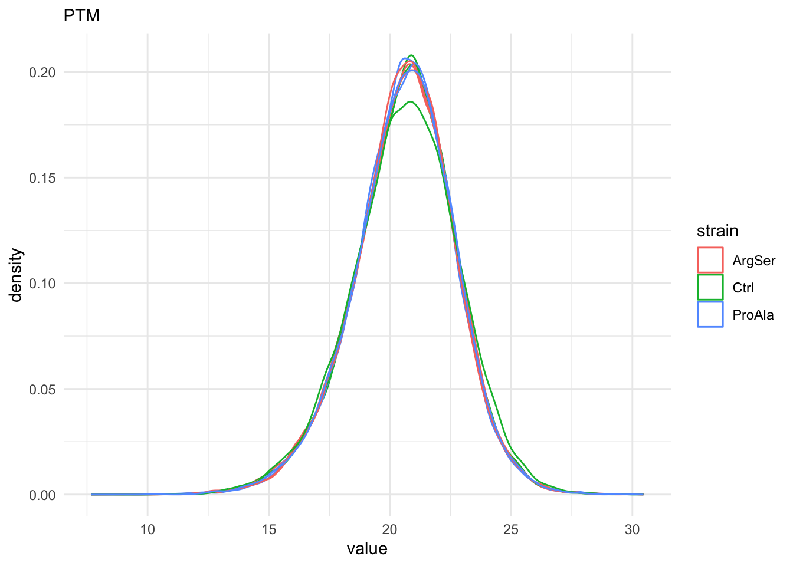
We remove temporarily objects
rm(se, seDup, mod, pos, ids, phosIds)#Garbage collection to free space
gc(); gc() used (Mb) gc trigger (Mb) limit (Mb) max used (Mb)
Ncells 11923993 636.9 17413510 930.0 NA 17413510 930
Vcells 39442588 301.0 82337643 628.2 24576 312073015 2381 used (Mb) gc trigger (Mb) limit (Mb) max used (Mb)
Ncells 11923986 636.9 17413510 930.0 NA 17413510 930
Vcells 39442609 301.0 82337643 628.2 24576 312073015 238112.9.2 Model estimation
Again we can estimate the same model but now for the PTM abundances.
qf <- msqrob(
qf,
i = "ptm",
formula = model,
robust = TRUE)We enabled M-estimation (robust = TRUE) for improved robustness against outliers.
#Garbage collection to free space
gc(); gc() used (Mb) gc trigger (Mb) limit (Mb) max used (Mb)
Ncells 12361086 660.2 22300311 1191.0 NA 17413510 930
Vcells 40616145 309.9 82337643 628.2 24576 312073015 2381 used (Mb) gc trigger (Mb) limit (Mb) max used (Mb)
Ncells 12361088 660.2 22300311 1191.0 NA 17413510 930
Vcells 40616181 309.9 82337643 628.2 24576 312073015 238112.9.3 Inference
Contrasts remain the same. We assess the contrast for each precursor.
qf <- hypothesisTest(qf, i = "ptm", contrast = L)Calculate log-transformed usages (relative differential abundances).
qf <- calculate_usage(qf, i_ptm = "ptm", i_ne = "proteins", contrasts = colnames(L))We extract the results table from the proteins summarised experiment in the qf object.
inferencesPtmUsage <-
msqrobCollect(qf[["ptm"]], L) |>
relocate(contains("sage"))#Garbage collection to free space
gc(); gc() used (Mb) gc trigger (Mb) limit (Mb) max used (Mb)
Ncells 12428170 663.8 22300311 1191.0 NA 22300311 1191
Vcells 43583220 332.6 82337643 628.2 24576 312073015 2381 used (Mb) gc trigger (Mb) limit (Mb) max used (Mb)
Ncells 12428160 663.8 22300311 1191.0 NA 22300311 1191
Vcells 43583236 332.6 82337643 628.2 24576 312073015 238112.9.4 Report results
We report the results using a results table, volcano plots and heatmaps.
Results table
for (j in colnames(L)) {
inference <- inferencesPtmUsage |>
dplyr::filter(adjPval_usage < alpha & contrast == j)
cat("**Median - Contrast:**", j, "= 0 (", nrow(inference),
"significant proteins)\n\n")
cat('<div style="max-height:300px; overflow-y:auto;">')
print(
kable(
inference |>
dplyr::arrange(pval) |>
dplyr::relocate(feature),
row.names = FALSE
)
)
cat('</div>')
cat("\n\n\n---\n\n")
}Median - Contrast: strainCtrl = 0 ( 0 significant proteins)
| feature | logUsage | se_usage | t_usage | df_usage | pval_usage | adjPval_usage | logFC | se | df | t | pval | adjPval | logFC_ne | se_ne | df_ne | t_ne | pval_ne | adjPval_ne | contrast |
|---|
Median - Contrast: strainProAla = 0 ( 0 significant proteins)
| feature | logUsage | se_usage | t_usage | df_usage | pval_usage | adjPval_usage | logFC | se | df | t | pval | adjPval | logFC_ne | se_ne | df_ne | t_ne | pval_ne | adjPval_ne | contrast |
|---|
Median - Contrast: strainProAla - strainCtrl = 0 ( 1 significant proteins)
| feature | logUsage | se_usage | t_usage | df_usage | pval_usage | adjPval_usage | logFC | se | df | t | pval | adjPval | logFC_ne | se_ne | df_ne | t_ne | pval_ne | adjPval_ne | contrast |
|---|---|---|---|---|---|---|---|---|---|---|---|---|---|---|---|---|---|---|---|
| P32324_763 | 2.255081 | 0.1526758 | 14.77039 | 6.603385 | 2.6e-06 | 0.0432843 | 2.094123 | 0.1468852 | 6.603385 | 14.25687 | 3.3e-06 | 0.0504516 | -0.1609579 | 0.0416488 | 7.740504 | -3.864644 | 0.0050886 | 0.1220742 | strainProAla - strainCtrl |
Volcanoplots
inferencesPtmUsage |>
filter(is.finite(adjPval_usage)) |>
ggplot(aes(x = logUsage,
y = -log10(pval_usage),
col = adjPval_usage < alpha)) +
geom_point(size = 1, alpha = 0.5) +
theme_bw() +
ylab("-log10(p-value)") +
scale_color_manual(values = c(`FALSE` = "black", `TRUE` = "red"),
breaks = c("TRUE", "FALSE")) +
labs(color = paste0("FDR < ", alpha)) +
facet_wrap(~contrast) +
labs(title = "Usage")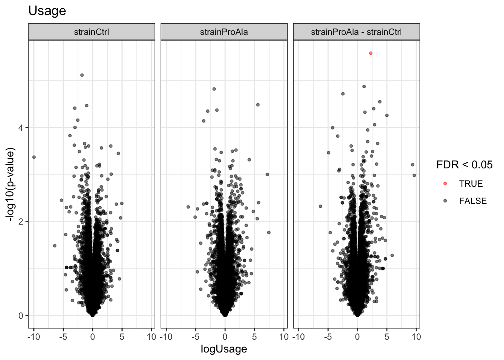
inferencesPtmUsage |>
filter(adjPval_usage < alpha) |>
mutate(DA = sign(logUsage) |> as.factor() |> recode("-1"= "down","1" = "up")) |>
group_by(contrast, DA) |>
ggplot(aes(x = contrast)) +
geom_bar(aes(fill = factor(DA)),
colour = "black") +
theme_minimal() +
theme(axis.text.x = element_text(angle = 90))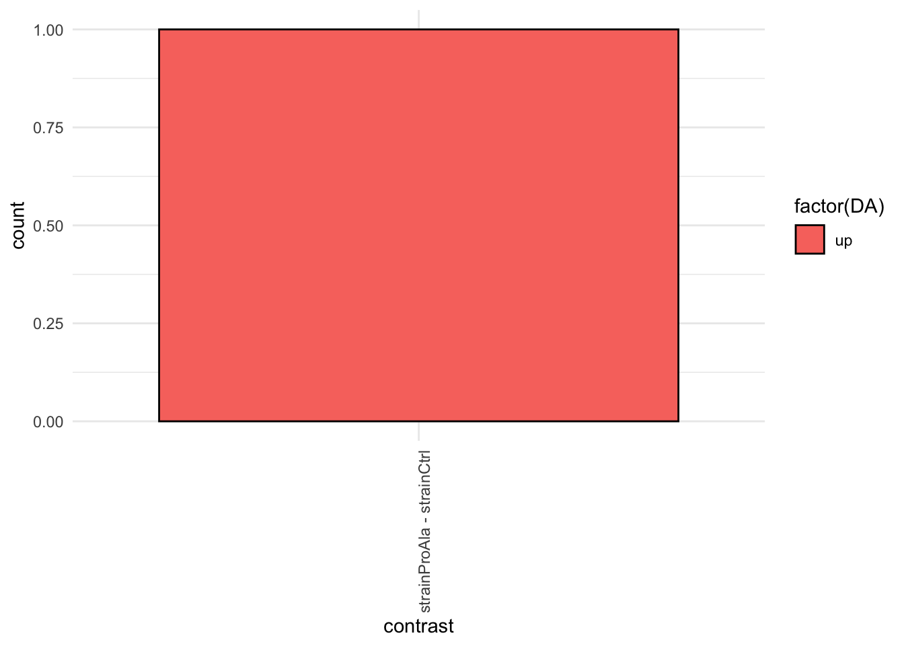
Detail plots
We can explore the data for a protein to validate the statistical inference results. For example, let’s explore the precursor, summarized PTM and summarised protein intensities for the PTM with the most significant log2 fold change.
(target_feature <- inferencesPtmUsage |>
dplyr::slice(which.min(pval_usage)) |>
pull(feature)
)[1] "P32324_763"inferencesPtmUsage |>
filter(feature == target_feature) logUsage se_usage t_usage df_usage
strainCtrl.P32324_763 -1.8058179 0.1445489 -12.492779 6.603385
strainProAla.P32324_763 0.4492634 0.1468464 3.059411 6.603385
strainProAla - strainCtrl.P32324_763 2.2550813 0.1526758 14.770395 6.603385
pval_usage adjPval_usage logFC
strainCtrl.P32324_763 7.728461e-06 0.12779782 -1.7136693
strainProAla.P32324_763 1.971419e-02 0.90232289 0.3804542
strainProAla - strainCtrl.P32324_763 2.645738e-06 0.04328427 2.0941234
se df t pval
strainCtrl.P32324_763 0.1379504 6.603385 -12.42236 8.011588e-06
strainProAla.P32324_763 0.1403559 6.603385 2.71064 3.191573e-02
strainProAla - strainCtrl.P32324_763 0.1468852 6.603385 14.25687 3.321220e-06
adjPval logFC_ne se_ne df_ne
strainCtrl.P32324_763 0.13557717 0.09214863 0.04317510 7.740504
strainProAla.P32324_763 0.73171587 -0.06880924 0.04317510 7.740504
strainProAla - strainCtrl.P32324_763 0.05045161 -0.16095787 0.04164883 7.740504
t_ne pval_ne adjPval_ne
strainCtrl.P32324_763 2.134301 0.066493829 0.3514785
strainProAla.P32324_763 -1.593725 0.150925890 0.6648050
strainProAla - strainCtrl.P32324_763 -3.864644 0.005088624 0.1220742
contrast feature
strainCtrl.P32324_763 strainCtrl P32324_763
strainProAla.P32324_763 strainProAla P32324_763
strainProAla - strainCtrl.P32324_763 strainProAla - strainCtrl P32324_763ptm <- qf[target_feature, , c("precursorsPTM_norm_unnested", "ptm")] |> #1
longForm(colvars = colnames(colData(qf)), rowvars = "Protein.Group") |> #2
data.frame()Warning: 'experiments' dropped; see 'drops()'harmonizing input:
removing 63 sampleMap rows not in names(experiments)
removing 9 colData rownames not in sampleMap 'primary'protein <- qf[unique(ptm$Protein.Group), , c("proteins")] |> #1
longForm(colvars = colnames(colData(qf)), rowvars = "Protein.Group") |> #2
data.frame()Warning: 'experiments' dropped; see 'drops()'harmonizing input:
removing 72 sampleMap rows not in names(experiments)
removing 9 colData rownames not in sampleMap 'primary'ptm_protein <- rbind(ptm, protein)
ylims <- ptm_protein |>
group_by(assay) |>
summarise(cent = mean(range(value,na.rm=TRUE)), ampl = diff(range(value,na.rm=TRUE))) |>
mutate(lower = cent - max(ampl)/2,
upper = cent + max(ampl)/2) |>
select(-c(cent, ampl))
ptm_protein |>
filter(!is.na(value)) |>
ggplot() +
aes(x = sampleId,
y = value) +
geom_line(aes(group = rowname), linewidth = 0.1) +
geom_point(aes(colour = strain)) +
facet_wrap(~ assay, scales = "free") +
ggh4x::facetted_pos_scales(
y = list(
assay == ylims$assay[1] ~ scale_y_continuous(limits = unlist(ylims[1,c("lower","upper")])),
assay == ylims$assay[2] ~ scale_y_continuous(limits = unlist(ylims[2,c("lower","upper")])),
assay == ylims$assay[3] ~ scale_y_continuous(limits = unlist(ylims[3,c("lower","upper")]))
)
) +
labs(subtitle = paste0("Protein:", sub("_"," / phosho-position: ", target_feature))) +
theme_minimal() +
theme(axis.text.x = element_blank())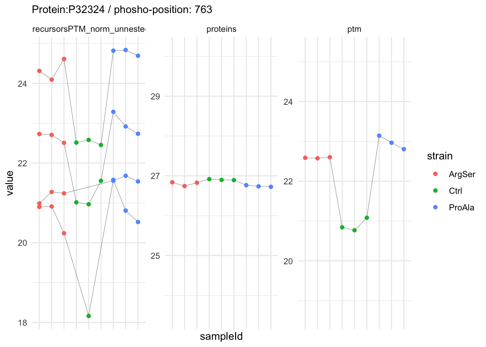
rbind(ptm, protein) %>%
{
ggplot(.) +
aes(x = strain,
y = value) +
geom_boxplot(aes(colour = strain)) +
facet_wrap(~ assay, scales = "free") +
geom_jitter(aes(shape = rowname)) +
scale_shape_manual(values = seq_len(dplyr::n_distinct(.$rowname))) +
labs(subtitle = paste0("Protein:", sub("_"," / phosho-position: ", target_feature))) +
theme_minimal() +
theme(axis.text.x = element_blank()) +
guides(shape = "none")
}Warning: Removed 5 rows containing non-finite outside the scale range
(`stat_boxplot()`).Warning: Removed 5 rows containing missing values or values outside the scale range
(`geom_point()`).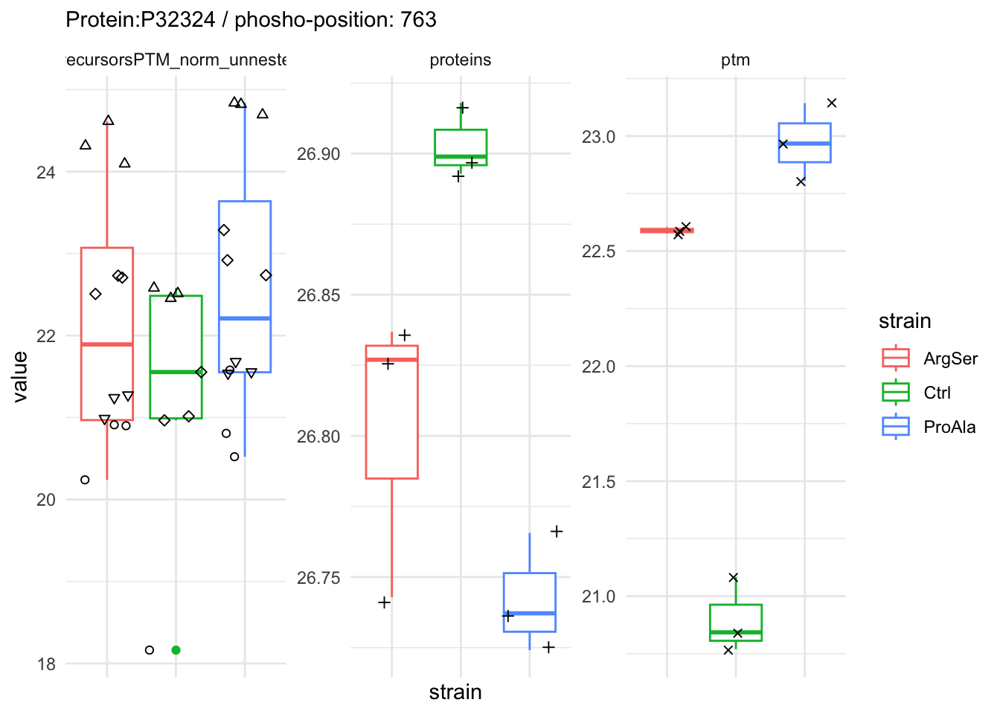
#Garbage collection to free space
gc(); gc() used (Mb) gc trigger (Mb) limit (Mb) max used (Mb)
Ncells 12428891 663.8 22300311 1191.0 NA 22300311 1191
Vcells 41317675 315.3 82337643 628.2 24576 312073015 2381 used (Mb) gc trigger (Mb) limit (Mb) max used (Mb)
Ncells 12428887 663.8 22300311 1191.0 NA 22300311 1191
Vcells 41317701 315.3 82337643 628.2 24576 312073015 238112.9.5 Along Protein Mapping
In this section we will make Along Protein graphs. Therefore we need sequence information on the protein sequence, which we can find in the fasta file from uniprot that was used for mapping.
Note, that it is recommended to use the fasta that was used for the mapping. However, this file was not uploaded by the authors so we use the version of the current release for illustration purposes.
- Read fasta file (download it from uniprot)
fastaFile <- bfcrpath(bfc,"https://rest.uniprot.org/uniprotkb/stream?compressed=true&download=true&format=fasta&query=%28%28proteome%3AUP000002311%29+AND+reviewed%3Dtrue%29")
fasta <- seqinr::read.fasta(fastaFile, seqtype = "AA", as.string = T) #2.- Extract the proteins from the fasta file.
# read in fasta file for protein sequence & length -> to calculate the coverage
mapping <- data.frame(fullName = fasta |> names(),
accession = fasta |> names() |> stringr::str_split_i("\\|", 2),
sequence = unlist(fasta)) |>
mutate(length = nchar(sequence))
rownames(mapping) <- mapping$accessionPTM barcode plot
We make a barplot for all phosphorylated residues on protein P32324
We first gather the data:
- We extract the protein name
- we filter all PTMs for that protein
- we add the phospho-position in the rowData to it
- we make a new variable type to indicate if the PTM usage is up, down, non-significant or missing
prot <- sub("_.*","", target_feature) ## 1.
ptmListProt <- inferencesPtmUsage |>
filter(grepl(prot, feature)) |> ## 2.
left_join(rowData(qf[["ptm"]]) |>
as.data.frame() |>
select(Protein.Group.Mod, pos),
by = c("feature" = "Protein.Group.Mod")) |> ## 3.
mutate(type = ifelse(is.na(adjPval_usage),
"missing",
ifelse(adjPval_usage < 0.05,
ifelse(logUsage < 0,
"down",
"up"),
"non-sig")) ## 4.
)We make the barplot by adding a geom_point layer and a vertical line (geom_vline) to indicate the residue position.
ptmListProt |>
ggplot(aes(x=pos,y=0,col=type)) +
geom_point() +
geom_vline(aes(xintercept=pos,col=type)) +
xlab("residue") +
ylab("") +
scale_color_manual(values = c("black","grey","blue","red"),
breaks = c("missing","non-sig","down", "up")) +
theme(
axis.ticks.y = element_blank(),
axis.text.y = element_blank(),
panel.grid = element_blank(),
panel.background = element_blank(),
panel.border = element_rect(color = "black", fill = NA),
strip.background = element_rect(color = "black")
) +
xlim(0, mapping[prot,"length"]) +
ggtitle(paste0(prot, ": Phospho residues")) +
facet_grid(contrast~.) 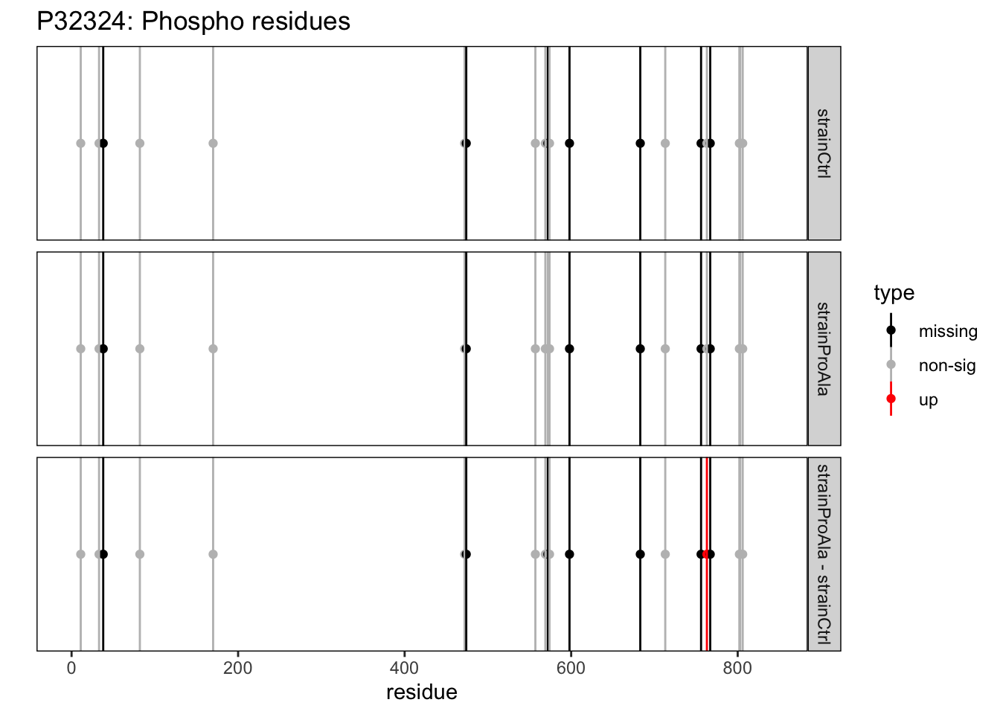
Along protein plot for all precursors
We first gather the data from all precursors that map to protein P32324
prot <- sub("_.*","", target_feature) ## 1.
precursorListProt <- inferencesUsage |>
left_join(rowData(qf[["precursorsPTM_norm"]]) |>
as.data.frame() |>
select(Precursor.Id, Protein.Group, Stripped.Sequence, Protein.Sites, Modified.Sequence),
by = c("feature" = "Precursor.Id")) |> ## 2.
filter(Protein.Group == prot) |> ## 3.
mutate(seqOrder = as.factor(feature) |> as.numeric(),
type = ifelse(is.na(adjPval_usage),
"missing",
ifelse(adjPval_usage < 0.05,
ifelse(logUsage < 0,
"down",
"up"),
"non-sig")), ## 4.
tmp = str_locate_all(mapping[prot,"sequence"], Stripped.Sequence),
start = purrr::map(tmp, ~ .x[, "start"]),
end = purrr::map(tmp, ~ .x[, "end"])) |>
unnest(c(start, end))Add location of Phospo residues.
- Add a new variable with the modification type (21 is phosho)
- Add a new variable with the location of the modification on the original protein
- Make vector of the row numbers with duplicates for the sequences containing multiple PTMs
- Make a corresponding vector with the positions of the individual PTM sites
- Make a corresponding vector with the modification type
- Extract the ids of rows that correspond to phospho sites
- Make a data.frame with duplicate entries for precursors with multiple phospho sites with variables seqOrder, type and contrast
- Add the position of the phospho site
precursorListProt <- precursorListProt |> mutate(
mods = str_extract_all(Modified.Sequence,
"UniMod:[0-9]+") |>
lapply(FUN = gsub, pattern="UniMod:",replacement=""), ##1.
pos = str_extract(Protein.Sites,
"(?<=:)[^\\]]+") |>
strsplit(split = ",") |>
lapply(FUN=substr,start=2,stop=10000) |>
lapply(FUN=as.integer)) ## 2.
ids <- rep(precursorListProt |>
nrow() |>
seq_len(),
precursorListProt |>
pull(pos) |>
sapply(FUN = length))## 3.
pos <- unlist(precursorListProt$pos) ## 4.
mod <- unlist(precursorListProt$mods) ## 5.
phosIds <- ids[mod == "21"] ## 6.
precursorPosListProt <- precursorListProt[phosIds,] |> ## 7.
select(seqOrder,type, contrast) |>
mutate(pos = pos[mod == "21"]) ## 8.Make along protein plot.
precursorListProt |>
ggplot(aes(y=seqOrder)) +
geom_segment(aes(x = start, xend = end, yend = seqOrder, color = type),
linewidth = 1) +
xlim(0, mapping[prot,"length"]) +
ylab("Precursors") + xlab("Residue") + #6.
scale_y_continuous(breaks = precursorListProt$seqOrder, labels = precursorListProt$Stripped.Sequence) +
scale_color_manual(values = c("black","grey","blue","red", "black"),
breaks = c("missing","non-sig","down", "up", "black")) +
geom_segment(data = precursorPosListProt,
aes(x = pos, xend = pos, y = seqOrder - 0.5, yend = seqOrder + 0.5,
color = "black"), linewidth = 1) +
facet_grid(contrast~.) +
theme(
axis.ticks.y = element_blank(),
axis.text.y = element_blank(), #We suppress the feature sequence here because there are too many sequences
panel.grid = element_blank(),
panel.background = element_blank(),
panel.border = element_rect(color = "black", fill = NA),
strip.background = element_rect(color = "black")
) +
labs(title = paste0(prot, " along with precursors"),
subtitle = "(phospho residue in black vertical line)") 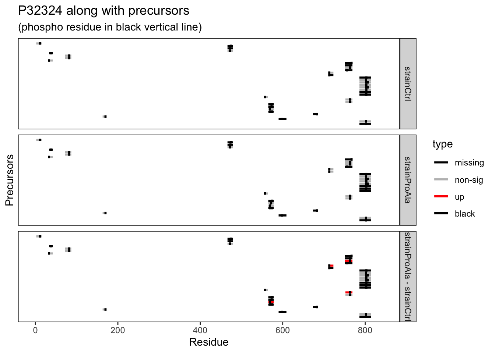